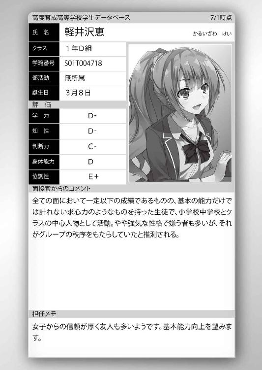

| ようこそ実力至上主義の教室へ 3 <ようこそ実力至上主義の教室へ> (MF文庫J) | |
| 衣笠 彰梧 & トモセシュンサク | |
| KADOKAWA / メディアファクトリー (2016) | |
ようこそ実力至上主義の教室へ３
衣笠彰梧

本作品の全部または一部を無断で複製、転載、配信、送信したり、ホームページ上に転載することを禁止します。また、本作品の内容を無断で改変、改ざん等を行うことも禁止します。
本作品購入時にご承諾いただいた規約により、有償・無償にかかわらず本作品を第三者に譲渡することはできません。
本作品を示すサムネイルなどのイメージ画像は、再ダウンロード時に予告なく変更される場合があります。
本作品は縦書きでレイアウトされています。
また、ご覧になるリーディングシステムにより、表示の差が認められることがあります。
○茶柱佐枝の独白
ギリシャ神話には人間臭く、憎悪や嫉妬を含んだ話が多く存在する。
『イカロスの翼』を耳にしたことはないだろうか。簡単な概要はこうだ。
かつてギリシャには、ダイダロスと言う偉大な発明家がいた。ダイダロスはミノス王に命じられ怪物ミノタウロスを閉じ込める迷宮を作り上げた。しかし後にミノス王に見放されることになり、息子のイカロスと共に塔へと閉じ込められてしまう。
ダイダロスたちはその幽閉された塔から逃げ出すため、鳥の羽を集めて大きな翼を作り上げた。大きな羽を糸でとめ、小さな羽は蝋でとめた。やがて翼は完成し自由を求め飛び立とうとしたとき、父であるダイダロスは息子へとこんな忠告をする。
『あまり高く飛ぶと、蝋で固めた翼が太陽に焼かれ溶けてしまう。気をつけろ』と。
そう忠告を受けたイカロスは、父と共に塔から飛び立った。
そして自由を得た。だが自由とは時として、己を見失ってしまう危険なもの。
眼前に広がる自由を手にし、イカロスは調子に乗ってしまった。
それは必然だったのかも知れない。束縛された苦しい状況からの打破。
自由に魅入られ、父の忠告を忘れ高く高く飛んでしまったのだ。
作り上げた偽りの天使の翼は、太陽に焼かれ瞬く間に蝋が溶け出してしまう。
やがて偽りの翼は全て焼き尽くされ、イカロスは大海へと落ち死んでしまった。
イカロスとは、自由を得るために空へと飛び出した勇敢な存在だったのか。
あるいは己の力を過信、太陽にも到達できると信じ込んだ傲慢さを持った者だったのか。
それは父であるダイダロス以外には知りえなかったことかも知れない。
私は一人の少年を前にして、何故かイカロスの翼を連想してしまっていた。様々な状況と照らし合わせると、それがもっとも近しいと感じたからに他ならない。だがそれは根本的に間違っていたとすぐに思い知らされることになる。何故ならこの少年はイカロスのような勇敢さも、傲慢さも持ち合わせてはいなかったのだ。
私は追い込まれていた。だからそうするしかなかったのだ。
少年の逆鱗に触れることでしか、対処する術を持っていなかったのだ。
目の前で静かな怒りを向ける少年に対して、気丈に振舞うしかなかった。
振った賽はもとには戻せない。この賭けはスタートしてしまったのだから。
○天国と地獄の境界線
常夏の海。広がる青空。澄み切った空気。そよぐ潮風は優しく体を包み込み、真夏の猛暑を感じさせない太平洋のど真ん中。そう、ここはまさにシーパラダイス。
「うおおお！ 最高だあああああああああああああああ!!」
豪華客船のデッキから高らかに両手を挙げ、クラスメイト池寛治の叫び声が響き渡る。
いつもならどこからか煩いと文句が飛んできそうなものだが、今日に限ってはそんな意見が出ることもなく、各々が至福のひと時を堪能していた。特等席とも言えるデッキのベストポジションからの眺めは格別なものがあった。
「凄い眺め！ マジ超感動なんだけど！」
船内から姿を見せた軽井沢率いる女子グループが、満面の笑みを浮かべ大海を指さす。
「ほんと、凄い景色だね......！」
そのグループに居た女子の一人、櫛田桔梗も恍惚としたため息をついて海を見ていた。
苦難多き中間、期末テストを乗り越え夏休みを迎えたオレたちを待っていたのは、高度育成高等学校が用意していた２週間の豪華旅行。豪華客船によるクルージングの旅だった。
「退学にならなくて良かったよな、健。こんな旅行普通だったら絶対無理だしさ。期末テストでも最下位で退学寸前だった身としてはどんな気持ち？ ねえねえどんな気持ち？」
クラスメイトの山内春樹に煽られても、須藤健は機嫌を悪くするどころか余裕そうに大笑いした。一匹狼を気取った姿はなく、その姿はすっかりクラスメイトに溶け込んでいる。
「俺様の実力にかかったら余裕だぜ。ギリでクリアするのも主役の見せどころっつの？」
直前までの苦しみも、どうやらこの旅行が全て吹き飛ばしてくれたらしい。
確かに普段の面倒なことや大変なことも、全てこの青い海が洗い流してくれるようだ。
「高校生でこんな豪華旅行が出来るなんて夢にも思ってなかったぜ。それも２週間だぜ２週間。母ちゃんや父ちゃんが聞いたらびびってチビるだろうな」
須藤の言うように、一般人からすれば規格外の旅行だろう。国が支援しているこの学校では、学費や雑費を払う必要性が全くない。当然この旅行さえも。破格の待遇だ。
しかもオレたちが乗り込んだ客船は外観はいうに及ばず、施設も非常に充実。一流の有名レストランから演劇が楽しめるシアター、高級スパまで完備されている。
もし個人で旅行しようと思ったなら、オフシーズンでもウン十万円は必要だろう。
そんな贅の限りを尽くした旅行がついに今日から始まった。予定では最初の１週間は無人島に建てられているペンションで夏を満喫し、その後の１週間は客船内での宿泊という流れのはず。午前５時に１年生が一斉にバスへ乗り込み東京湾へと向かうと、生徒を乗せて港からこの客船が出発。朝食をこの客船のラウンジで食べると、生徒たちは各々自由行動となった船舶内で思うがまま行動していたということだ。
しかもありがたいことに、この船ではどの施設も無料で利用することができる。
常日頃ポイント不足で悩んでいるオレたちにとっては、渡りに船だった。
ふと櫛田がオレの方を向いて何か考え込む表情を見せた。大海と青空をバックにした櫛田はいつもより輝いて見えて、オレの胸が嫌でも高鳴る。まさか、オレのことを───。
「あれ？ そう言えば堀北さんは？ 一緒じゃないの？」
僅かな幻想を抱くことも許されなかった。単に堀北のことを考えていたようだ。
「さあ。オレはあいつのお守りじゃないからな......」
船内での朝食以降、姿を見た覚えはない。
「旅行を満喫するような人間じゃなさそうだし、部屋にいるんじゃないか？」
「そうかも」
「お昼は、島のプライベートビーチで自由に泳げるんだったよね。楽しみだなあ」
この学校は、南に小さな島を一つ所有しているようで、今そこに向かっている。
『生徒の皆様にお知らせします。お時間がありましたら、是非デッキにお集まり下さい。間もなく島が見えて参ります。暫くの間、非常に意義ある景色をご覧頂けるでしょう』
突如そんな『奇妙』なアナウンスが船で流される。櫛田たちは気にした様子もなく楽しみにしているようだった。続々と生徒が集まりだすと、数分後その島は姿を現した。
池が歓喜の声をあげる。地平線の彼方、視界に小さく島のようなものが視認できた。
生徒たちがそれに気づき、一斉にデッキへと集まり始めた。群集が押し寄せると、それまでベストポジションを取っていたオレたちを押しのける横暴な男子生徒たちが現れた。
「おい邪魔だ、どけよ不良品ども」
威圧しながら男子の一人が見せしめの如くオレの肩を突き飛ばした。慌ててデッキの手すりを掴んで転倒を避ける。その様子を見て男子生徒たちが蔑むように笑った。
「テメェ何しやがる！」
須藤が即座に威圧し返し、櫛田は心配した様子でオレの傍に寄ってきた。女の子にフォローされる男子というのは実に情けない格好だろう。
「お前らもこの学校の仕組みは理解してるだろ。ここは実力主義の学校だ。Ｄクラスに人権なんてない。不良品は不良品らしく大人しくしてろ。こっちはＡクラス様なんだよ」
追い出されるように船首から離れるＤクラス。須藤は不満そうだったが、それでも喧嘩に発展せず堪えられたのは少し大人になった証拠か。あるいはＤクラスという弱い立場を理解してしまったからなのか。
「やあみんな、ここにいたんだね。......あれ、どうかしたの？」
集まって来た生徒の一人に、オレに声をかけてきた男子が居た。不穏なものを感じ取った様子だったが、余計な心配はかけまいと聞き流しておいた。その男子の名前は平田洋介。Ｄクラスのリーダー。今はオレが所属するグループのリーダーでもある。１学期が終わる最後の日。旅行に向けた宿泊部屋のグループ分けが決められた。オレは比較的仲の良い池や須藤たちにお呼ばれされないかと期待していたところあっさりグループは定員オーバー。孤立しかかったところを、救世主平田マンの登場によって救われることになった。
「なあ平田。おまえ軽井沢とはどこまで進んでるんだよ」
軽井沢の傍に寄って行こうとしない平田に、池が話かける。
「折角の旅行なんだから、もっとベタベタしてもいいんだぜ？」
他の女子の目が平田に向くのを嫌がったのか、そんな風に茶化す。
「僕らには僕らのペースがあるから。ごめん、三宅くんが困ってるみたいだから行くよ」
携帯が鳴ったのか、平田は操作しながら船内に戻っていく。忙しいのが人気者の宿命だ。
「何だあいつ。旅行先でもクラスメイトの心配ばっかりかよ」
「でも軽井沢は軽井沢で、最近あんまりベタベタしないよな平田とさ。......もしかして二人が別れたとか？ だとしたら最悪だぞ......櫛田ちゃんを巡るライバルが増える！」
確かに、付き合ってると知った当初のようなベタ付きが全くない。でも、喧嘩したとか険悪になったという感じもしないんだよな。仲よさそうに話す姿は見るから。
「決めたぜ春樹。俺......この旅行で櫛田ちゃんに告白する！」
「ま、まじかよ。フラれたらすげぇ気まずいじゃん。いいのかよ」
「これは俺の勝手な推理なんだけどさ。櫛田ちゃんはとにかく可愛いだろ？ だから男の大半は付き合いたいって思う。でも、レベルが高すぎて逆に告白まで辿り着かないはずだ。だから逆に告白慣れしてないんじゃないかってさ。俺の愛の告白に櫛田ちゃんの心が揺さぶられる可能性はあるはずだ。つか、そこしか希望は無いっ」
「そうか......おまえ、覚悟決めたんだな」
「おうよ！」
それに対し、いつもなら山内も燃え上がり対抗するのだが、そんな様子が全くない。
デッキをキョロキョロと見渡して何かを探している様子だった。
「どうしたんだよ」
「あ、いや。別に......」
そう言い上の空のように聞き流し、結局山内が櫛田のことに触れることはなかった。
「ねえねえ櫛田ちゃん。ちょっといいかな......」
「んっ？ なにかな？」
近くで海を眺めている櫛田に、早速接近する池。明らかに不審な動きだ。
「そのさ、なんつーか、俺たち出会って４ヶ月くらい経つじゃん？ だからそろそろ、下の名前で呼んでもいいんじゃないかなって。ほら、苗字だと他人行儀だしさ」
「そう言えば、山内くんたちとはいつの間にか名前で呼び合ってるね」
「だ......ダメかな？ き、桔梗ちゃんって呼んだら」
そんな伺いを立てる池に対し、櫛田は屈託のない笑みを浮かべた。
「もちろんオッケーだよ。私は寛治くんって呼べばいいかな？」
「うおおおおおお!! 桔梗ちゃあああああん！」
池は映画プラトーンのパッケージを彷彿とさせるポーズで天に向かって叫んだ。
その姿がおかしかったのか、くすくすと櫛田が笑う。
「下の名前か......そういや堀北の下の名前って、なんだっけか。なあ？」
須藤はオレが知っていることが当たり前かのように聞いてくる。
「富子だ。堀北富子」
「富子か......かわいい名前だな。俺の予想通りだぜ。フィーリングばっちりだな」
「あーいや、間違えた。鈴音だった」
「てめ、間違うんじゃねえよ。......鈴音か。富子の１００倍フィーリング感じるぜ」
結局堀北の名前が貞子だろうとサムだろうと、勝手にフィーリングを感じることだろう。
「っし、この夏休みの間に俺も下の名前で呼ぶぞ。鈴音、鈴音っ」
どうやら、男子たちはこのバカンスで女子たちとの距離を詰めていく腹づもりらしい。
その一方で、オレは男子の誰からも下の名前で呼ばれないし、呼べていない。
「そうだ、なあ試しに練習させてくれよ綾小路。鈴音って呼ぶ練習をよ」
「練習って何だ、練習って......。普通ないぞそんなもの」
名前を呼ぶ練習なんて本人を前にしてする以外無理だと思うんだが。単細胞の須藤はオレを仮想堀北に仕立て上げるつもりなのか、真剣な眼差しを向けてくる。
異性と思い込んでいるせいか、その視線がやけに気持ち悪い。心なしか吐息も熱い。
「なあ堀北、ちょっといいか？ 少し話があるんだけどよ......」
「オレは堀北じゃない」
すぐに気持ち悪くなったので否定して顔を逸らす。
「バカ野郎！ 練習だっつの。俺だってやりたかねーよ、けど練習は必要だろ？ バスケだって練習しなきゃ上手くなんねーんだから。どっちもシュートが肝心だしな」
そんな誰ウマ話聞きたくもないんだが......。仕方ないので我慢して付き合う。
「堀北。いつまでも他人行儀って変じゃねえか？ 俺らも知り合ってだいぶ経つしよ。他の連中は結構下の名前で呼び合ってるみたいだし。俺たちもそろそろどうだ？」
「............」
思わず須藤の頭を叩きたくなったが、そこは精神的に大人のオレが我慢して耐えた。
「なんか言えよ。練習になんねーだろうが」
「いやいや......何かってなんだよ。オレに何を言えと？」
「堀北が答えそうなことをだよ。付き合いの長いおまえならわかるだろ？」
４カ月程度の付き合いで、そんなことがわかるはずもない。それでも須藤は仮想堀北を演じるように言ってきかなかった。半ば脅すように拳を握り込む。
「一歩大人になった俺が堀北の代わりやってやろうか？ 遠慮せず練習しろよ」
代わりに池が代役を務めるらしい。須藤は若干胡散臭そうにしながらも言う。
「堀北......そろそろ下の名前で呼びたいんだがいいか？」
「えー、須藤くんってあんまりイケメンじゃないしぃ？ お金もなさそうっていうかぁ、私のタイプじゃない、みたいな？ ってことでゴメンネゴメンネー。ハブバッ!?」
全く似ていないどころか別人女子高生ギャルを演じた池は、須藤にチョークスリーパーを決められてデッキでもだえ苦しみだした。
いつも元気だなこいつら。見ているだけで疲れが溜まりそうだ。楽しそうではあるけど。
しばらくして、周囲がワッと騒がしくなった。
島がはっきりと肉眼で確認できると、瞬く間に距離が詰まって来て、生徒たちの熱気と興奮も高まっていく。そのまま船は島につけられるのかと思ったが、何故か桟橋をスルーし、ぐるっと島の周りを回り始めた。国から借り受けて管理する島の面積は約０・５㎢、最高標高２３０ｍ。日本全体から見ればちっぽけな大きさだが、客船に乗り合わせたオレたち百数十名からしてみれば、十分すぎるほど大きな島だった。
どうやら客船は一周回って島の全体を見せてくれるらしい。
島を外周する船は速度を変えず、高々と水しぶきを上げながら不自然な高速航行をする。
「凄く神秘的な光景だね......！ 感動するなぁ。ねえ、綾小路くんもそう思わない？」
「お、おう。そうだな」
オレは、そんな無人島に目を輝かせる櫛田を見て、ちょっと胸を高鳴らせる。
やっぱり櫛田は可愛いな。子供のような仕草も笑顔も守ってしまいたくなる存在だ。
『これより、当学校が所有する孤島に上陸いたします。生徒たちは30分後、全員ジャージに着替え、所定の鞄と荷物をしっかりと確認した後、携帯を忘れず持ちデッキに集合してください。それ以外の私物は全て部屋に置いてくるようお願いします。また暫くお手洗いに行けない可能性がありますので、きちんと済ませておいてください』
そんなアナウンスが流れた。どうやらプライベートビーチへの上陸が近いらしい。
池たちは揚々と着替えに戻るようで、オレもグループ部屋に戻るべく足を向けた。
それから体育の授業なんかでも使うジャージに身を包み、デッキへ戻り船が島につくのを待った。島が眼前に迫るに連れ、１年生のテンションは最高潮だ。
「ではこれより、Ａクラスの生徒から順番に降りてもらう。それから島への携帯の持ち込みは禁止だ。担任の先生に各自提出し、下船するように」
拡声器を持った教師の声で、生徒たちが順番に客船の階段を降りていく。
「あちー。早くしてくれよー。薄着でも汗かいてしょうがないっつーの」
停泊した船の甲板は太陽から隠れる術がない。不満が出るのも無理はなかった。
Ｄクラスが暑さに耐えながら下船待機しているとようやく堀北も合流してきた。一見いつもと変わらない様子だったが、微かに変化、違和感のようなものがあった。普段から几帳面な堀北は外見にも気を遣っている。なのに、今は乱れた黒髪がそのままにされていて、まるでそこまで意識が回っていないような様子だった。
少し寒そうに腕を無意識にさすって島に上陸するのを待っている。
「今まで何してたんだ？」
「部屋で本を読んでいただけよ。誰がために鐘は鳴る。知らないでしょうけど」
おいおい、アーネスト・ヘミングウェーの代表作かよ。文句のない名作なんだよな。
前々から思っていたが、堀北のヤツ本の趣味は最高だな......。ただ、こんな豪華な旅行にもかかわらず、読書の方が優先なのはちょっとどうかと思うが。
まあ、今回の場合本当に読書するために部屋に籠っていたのかは怪しいところだ。
本人が何も言わない以上こちらから詮索するのは野暮というもの、忘れよう。
「続きが気になっているけれど、私物の持ち込みが禁止されているなら仕方ないわね」
残念そうにそう呟く。これからビーチに降り立つ人間が言うことじゃないぞ。
下船は思ったよりも時間がかかっていた。それは降りる際生徒の両脇を先生たちが固め、荷物の検査を行っていたことが原因のようだった。
「ねえ。妙に慎重というか警戒してない？ 携帯を没収するなんてテストの時にだってやってないことだわ。余計な私物の持ち込みを禁止することだってそうだし」
「確かにな。ただ海で遊ぶだけなら、ここまでする必要はなさそうな気もする」
そう言えば船尾の方にはヘリが一機置かれてたな。あれも不自然といえば不自然だ。
まぁ、多少引っかかることは事実だが、考え過ぎかも知れない。
海に携帯を持っていけば、誰か一人は濡らして壊したりする生徒が現れてもおかしくない。余計な私物を持ち込んで、そのゴミがビーチを汚してしまうことだってある。
急病になればヘリの出動もあり得ない話じゃない、か。
やがてオレたちの番がやって来て、厳重な検査を受けた後タラップを降りる。
ここが天国と地獄の境目であったことに、この時はまだ気が付いていなかった。
１
ダラダラと談笑しながら降りてきたオレたちに、ウチの担任から厳しい言葉が飛ぶ。
「今からＤクラスの点呼を行う。名前を呼ばれた者はしっかりと返事をするように」
同時に整列するよう指示され、ボード片手に全クラス一斉に出席の確認を始めた。
茶柱先生は生徒と同じジャージに身を包んでいて、夏休みというよりは合宿に近い雰囲気があった。それでも多くの生徒に緊張の色は無い。
「あーもう、早く自由時間にしてほしいぜ。目の前に海が広がってるんだからさっ」
真後ろの池が面倒臭そうに呟く。大半の生徒は砂浜を駆け出したくて仕方がないだろう。程なくして、高身長の教師が前へと出てくると、準備されていた白い壇上に上がる。普段英語を担当しているＡクラスの担任、堅物で有名な真嶋先生だった。プロレスラーのような体格で一見体力系だが、かなり頭が良く以前は別教科を教えていたこともあったらしい。
「今日、この場所に無事につけたことを、まずは嬉しく思う。しかしその一方で１名ではあるが、病欠で参加できなかった者がいることは残念でならない」
「いるんだよなあ、病気で旅行に参加できない奴。かわいそ」
先生たちには聞こえない程度に池が小声で言った。でも確かにその通りだ。
中途半端な旅行ならまだしも、これだけ豪勢なものなら話は別だ。あとで友達に聞いて悔しがるだろう。多少の体調不良であったなら無理してでも参加すればよかったと。
それにしても、旅行という割に先生たちの表情はとにかく険しい。生徒たちにとっては休みと言えど、監督責任者は仕事としか捉えていないということか？
いや───どうやらそういうことだけでもないらしい。
真嶋先生が無言で生徒たちを見つめる中、作業着に身を包んだ大人たちが、少し遠くで特設テントの設置を始めているのが見えた。長机にパソコンなども見える。
海のさざ波とは合わない都会的な音に、生徒たちも困惑の色を浮かべはじめる。空気が変わることを待っていたかのように、真嶋先生から冷酷な一言が発せられた。
「ではこれより───本年度最初の特別試験を行いたいと思う」
「え？ 特別試験って？ どういうこと？」
その当たり前の疑問は後ろの池だけでなく、ほぼ全てのクラスで等しく巻き起こった。
今の今まで、いや、今現在もただの旅行だと思っている生徒たちに襲い掛かる不意打ち。
学校側の善意による夏休みのバカンス。そんなものはやはり幻想だったってことだ。
緊張と緩和の差が激しすぎる。
「期間は今から１週間。８月７日の正午に終了となる。君たちはこれからの１週間、この無人島で集団生活を行い過ごすことが試験となる。なお、この特別試験は実在する企業研修を参考にして作られた実践的、かつ現実的なものであることを最初に言っておく」
「無人島で生活って......船じゃなくて、この島で寝泊まりするってことですか？」
ＢかＣクラス辺りから、当たり前の疑問が真嶋先生にぶつけられる。
「そうだ。試験中の乗船は正当な理由無く認められていない。この島での生活は眠る場所から食事の用意まで、その全てを君たち自身で考える必要がある。スタート時点で、クラス毎にテントを２つ。懐中電灯を２つ。マッチを１箱支給する。それから日焼け止めは制限なく、歯ブラシに関しては各自１つずつ配布することとする。特例として女子の場合に限り生理用品は無制限で許可している。各自担任の先生に願い出るように。以上だ」
以上ということは、それ以外のものは一切配布されないということか。
「はああ!? もしかしてガチの無人島サバイバルとか、そんな感じ!? そんな滅茶苦茶な話聞いたことないっすよ！ アニメや漫画じゃないんすから！ テント２つじゃ全員寝れないし！ そもそも飯とかどうするんですか！ あり得ないっす！」
全員に聞こえるほど大きな声で池が騒ぎ立てた。無人島で自給自足の生活を行う展開。野生の動物を狩り川で体を洗い、木々で寝床を作る。確かに映画や小説ではよく聞く話だ。まさかそれが学校の試験になる日が来ると誰が予想できただろう。
でも真嶋先生から冗談だと訂正されることはなかった。
いや、それどころか池の言葉に対して心底呆れているようにも見えた。
「君はあり得ないと言ったが、それは短く浅い人生を送ってきたからに過ぎない。事実、無人島での研修を行っている企業は存在する。それも誰もが知っている大手企業が試みとして行っているものだ」
「う───そ、それは、その、特別なんじゃないですかね。......無人島は飛躍しすぎっていうか。絶対ないっしょ！ 非現実っすよ！」
「これ以上はみっともないからやめろ。今真嶋先生が言ったものはほんの一部だ。世の中には様々な企業が存在する。変わった研修だけでなく、オフィスに椅子がない職場であったり、サイコロの出た目で給料を決める会社など。世の中はおまえが知るより広く深い」
池の暴走を見かねたのか、茶柱先生は窘めるようにそう言ってこう続けた。
「つまり現実と非現実の区別をつけられていないのは、おまえの方だということだ」
それでも、多くの生徒たちは納得がいかないのか不満げな様子だった。
「今君たちはこう思っているんだろう。こんな試験にどんな意味があるのか、と。あるいはまだ実在する研修なのかを疑っている者もいるかも知れない。だが、その程度の考えで留まっている生徒は将来的にも見込みのない人間だ。この話のどこに君たちが『あり得ない』『馬鹿げている』と批判するだけの根拠があるというのだ？ 君らはただの学生であり、まだ何者でもない。言ってしまえば無価値に等しい。そんな人間が一流企業のやり方を批判する？ おかしな話だ。君たちが一例として挙げた企業よりも格上の会社を経営する社長だったなら、それを否定する権利はあるのかも知れない。だが、そうでない人間に否定できるだけの根拠など存在しないはずだ」
オレたちは確かに、話の断片だけを聞いて無茶だとか非現実だとか勝手に判断している。
だけど真嶋先生の言うように、否定できるような根拠は何もない。
自分の理解出来る範疇を越えたものを『おかしい』『あり得ない』と手前勝手に決めつけているだけなのだ。理解している側の人間からすれば、それを滑稽と呼ぶことだろう。
「しかし先生。今は夏休みのはずです。そして我々は旅行という名目で連れて来られました。企業研修ではこのような騙し討ちのような真似はしないと思いますが」
不服を覚えたらしいどこかのクラスの生徒が、そんな風にたてついた。
「なるほど。その点に関しては間違った認識ではない。不平不満が出るのも納得だ」
池とは違い、正論で反論した生徒に対して真嶋先生は一部認めるような発言をした。現状に不満を漏らす生徒と、ここに至るまでの過程に不服を覚えた生徒では着眼点が違う。
「だが安心していい。これが過酷な生活を強いるものであったなら批判が出るのも無理のない話だが、特別試験と言ってもそれほど深く考える必要はない。今からの１週間、君たちは海で泳ぐのもバーベキューをするのもいいだろう。時にはキャンプファイヤーでもして友人同士語り合うのも悪くない。この特別試験のテーマは『自由』だ」
「え？ え？ 自由がテーマってことは......？ バーベキューも出来るって......んんんっ？ それって試験って言えんの？ 頭混乱してきた......」
試験なのに遊ぶのは自由。相反するモノが混在し生徒は疑問点ばかりが増えていく。
「この無人島における特別試験では大前提として、まず各クラスに試験専用のポイントを３００支給することが決まっている。このポイントを上手く使うことで１週間の特別試験を旅行のように楽しむことが可能だ。そのためのマニュアルも用意している」
真嶋先生は別の教師から数十ページほどの厚みを持った冊子を受け取った。
「このマニュアルには、ポイントで入手できるモノのリストが全て載っている。生活で必需品と言える飲料水や食料は言うに及ばず、バーベキューがしたければ、その機材や食材も用意しよう。海を満喫するための遊び道具も無数に取り揃えている」
段々と生徒たちの険しかった表情が穏やかなものに変わっていく。
「つまり───その３００ポイントで欲しいものが何でも貰えるってことですか？」
「そうだ。あらゆるものをポイントで揃えることが可能になっている。無論計画的に使う必要はあるが、堅実なプランを立てれば無理なく１週間を過ごせるよう設定されている」
もし本当にポイントだけで１週間を生活できるなら、それは試験というよりもバカンス、純粋な夏休みに近い形になるのかも知れない。
「で、でも先生。やっぱり試験って言うんだから難しい何かがあるんでしょ？」
「いいや、難しいものは何も。２学期以降への悪影響もない。保証しよう」
「じゃあ本当に、１週間遊ぶだけでもいいってことですか」
「そうだ。全ておまえたちの自由だ。もちろん集団生活を送る上で必要最低限のルールは試験に存在するが、守ることが難しいものは一つとしてない」
とすれば、本当にノンリスクということなのか？ もしそうであるなら、これを試験と謳う意味を問うことになるが......。
単純に夏休みを利用した、旅行を通じての学年交流のための一環、ということか？
あれこれと考えてみたところで学校の真意などわかるはずもなかったが、次の真嶋先生の一言でこの試験の全貌が明らかにされる。
「この特別試験終了時には、各クラスに残っているポイント、その全てをクラスポイントに加算した上で、夏休み明けに反映する」
言葉と共に一陣の風が真夏のビーチを吹き抜け、砂埃が舞い上がる。
真嶋先生の発した一言は、間違いなく今日一番の衝撃をオレたちに与えたことだろう。
筆記試験のような学力だけを元に算出される今までの試験では、基礎学力の高い生徒が集まる上位クラスが必然有利だった。その度にＤクラスはクラスポイントを離され苦しい立場に追い込まれた。だが今回のルールは丸っきり毛色が違う。Ａ～Ｄクラスの間にあるハンディキャップをあまり感じさせない仕組みだった。
「１週間我慢したら......来月から俺たちの小遣いも大幅に増えるってことだよな!?」
そう、これは学力ではなく『我慢』を競う戦い。身近にある欲求を拒絶しながら耐え忍べば、上位クラスに近づけるかも知れないということだ。池の発言も夢ではない。
「マニュアルは１冊ずつクラスに配布する。紛失などの際には再発行も可能だが、ポイントを消費するので大切に保管するように。また、今回の旅行を欠席した者はＡクラスの生徒だ。特別試験のルールでは、体調不良などでリタイアした者がいるクラスにはマイナス30ポイントのペナルティを与える決まりになっている。そのためＡクラスは２７０ポイントからのスタートとする」
Ａクラスであろうとも、容赦のないペナルティを食らった。Ａの生徒たちは動揺した様子を見せなかったが、他クラスの生徒は30ポイント縮まったことに驚きの反応を示す。
真嶋先生の話が終わりを告げると同時に解散宣言がなされた。拡声器を持った別の教師が、各クラス担任の先生から補足説明を受けるよう通達すると、オレたちは担任である茶柱先生の元へと集まった。４つのクラスが距離を取るようにして集まりだす。
「来月から３万、来月から３万、来月から３万......やるぞお！」
池たち男子がガッツポーズを作る。女子も嬉しそうに何を買おうかと相談し始めた。
クラスポイントを大量に増やすことはＤクラスにとっての悲願だ。
贅沢に目を瞑り１週間過ごすだけ。実にシンプルな話だ。
「今からお前たち全員に腕時計を配布する。これは１週間後の試験終了まで外すことなく身につけておくように。許可なく腕時計を外した場合にはペナルティが課せられる。この腕時計は時刻の確認だけでなく、体温や脈拍、人の動きを探知するセンサー、ＧＰＳも備えている。また万が一に備え学校側に非常事態を伝えるための手段も搭載してある。緊急時には迷わずそのボタンを押せ」
業者の人間が茶柱先生の傍に支給品を積み上げていく。Ｄクラスに支給されるテントや腕時計などだろう。箱を取り出し、腕時計をつけるよう指示される。
「非常時って、クマとか出たりしませんよね？」
「仮にもこれは試験だ。結果を左右する可能性のある質問には答えられない」
「う......そんな風に言われると怖いじゃないっすか」
「危険な動物は流石にいないと思うよ。もし襲われて生徒が怪我でもしたら大問題だ。単純に僕たち生徒の健康管理だけを目的としてるんじゃないかな？ 無人島に放りだす以上、学校も安全性を確保しないといけないだろうし」
平田の言うように、腕時計は学校側の徹底した安全管理の一つだろう。島の中を自由に往来すれば、教師の目だけでは生徒の状態を追いきれない。かといって校内のようにカメラを完備することも困難だ。これで体調を監視し、不測の事態にも対応するつもりだろう。
客船で見たヘリは、そう言った非常時に飛ばすものなのかも知れない。
腕時計が各自に行き渡り、それぞれ右手か左手好きな方にはめていく。
「でも、身に着けたまま海とか入って大丈夫なんスか？」
「問題ない。完全防水だ。それに万が一故障した場合には、ただちに試験管理者がやって来て代替品と交換するようになっている」
この特別試験は何も学校が伊達や酔狂で始めたものではないだろう。様々なシチュエーションを想定した上での実施のはず。抜かりなどあるはずもないか。
「茶柱先生。僕たちは今からこの島で１週間生活するとのことですが、ポイントを使わない限り全て僕たちで何とかしなければならないということでしょうか」
「そうだ。学校は一切関与しない。食料も水も、お前たちで用意してもらう。足りないテントにしてもそうだ、解決方法を考えるのも試験。私の知ったことじゃない」
男子よりも女子の方が戸惑いの色を見せる。寝床が確約されていないのは不安だろう。
「大丈夫だって。魚でも適当に捕まえてさ、森で果物でも探せばいいじゃん。テントは葉っぱとか木とか使ってさ。最悪体調崩しても頑張るぜ」
３００ポイントを温存する気満々の池は、不安などないのかあっけらかんとそう言った。
一人だけの生活ならまだしも、クラスは30人以上で構成されている。
必要なものを全員分、手に入れると言ってもそうそう上手くはいかないはずだ。
「残念だが池、おまえの目論み通りにいくとは限らんぞ。配布されたマニュアルを開け」
平田は茶柱先生の指示に従い、受け取ったマニュアルを開く。
「最後のページにマイナス査定の項目が載っている、まずそこを読んでみろ。それはこの特別試験を象徴する非常に重要な情報になる。生かすも殺すもお前たち次第だ」
最終ページには『以下に該当するものは、定められたペナルティを科す』とあった。
『著しく体調を崩したり、大怪我をし続行が難しいと判断された者はマイナス30ポイント。及びその者はリタイアとなる』『環境を汚染する行為を発見した場合。マイナス20ポイント』『毎日午前８時、午後８時に行う点呼に不在の場合。一人につきマイナス５ポイント』。そして一番重い罰に『他クラスへの暴力行為、略奪行為、器物破損などを行った場合、生徒の所属するクラスは即失格とし、対象者のプライベートポイントの全没収』と合計４つの事項が記載されていた。Ａクラスもこのルールのペナルティを受けたようだ。４つめの妨害行動は至極当然のこととして、残り３つは明らかに生徒個人に無茶させないためのルールだった。朝と夜に点呼があることで夜通し野宿する無理も出来ないし、手当たり次第糞尿を撒き散らす野蛮な行動も抑制できる。すなわち安直な我慢大会の抑止。大切な子供を預かる学校として、どれも避けては通れない必須ルールと言えそうだった。
「お前が無茶をするのは勝手だが、もし10人の生徒が体調不良に陥ったなら、それで我慢と努力は全て泡と消える。一度リタイアと判断されれば試験中に復帰することも出来ない。強行するときはそれを覚悟しておくんだな池」
我慢で乗り切る手を早くも封じられ、それを想定していた一部の生徒が困惑する。
１ポイントも使わないという戦略はこれで半ば無理になってしまったが、他クラスが全力でサバイバルに挑む可能性もほぼ消せたといえるだろう。それと同時に、この試験は遊びでも運任せでも、我慢だけでもないことが浮き彫りになって来たんじゃないだろうか。
如何に効率よくポイントを使い、節約し、１週間を乗り越えるのか。
あるいは───。とにかく、文字通り『特別試験』の形が少しずつ見えてくる。
「つまりさ、ある程度のポイント使用は仕方が無いってことなんじゃない？」
話の流れを聞いていた篠原という女子がそんなことを口にした。
「最初から妥協する戦い方は反対だぜ。やれるとこまで我慢してやるべきだ」
「気持ちはわかるけど、体調を崩したら大変だよ」
「平田ぁ、萎えること言うなよ。まずは我慢あっての試験じゃねえの？」
ルールを知れば知るほど、それぞれ思うところは違うだろう。意見が分かれていく。
それにしても、マニュアルに載っている購入できるアイテムの幅がとにかく広い。
テントや調理器具などのサバイバルに必要不可欠な道具、デジタルカメラや無線機などの機器、パラソル、浮輪、バーベキューセット、花火などの娯楽品。生きていく上で欠かせない食料から水。ありとあらゆるものをポイントで用意できるように設定してあった。ポイントを使用したい場合は都度担任に申し出ることで、誰でも申請可能らしい。
「茶柱先生、答えられることであれば教えて下さい。仮に３００ポイント全てを使用してしまった後にリタイアする者が現れた場合にはどうなるんでしょうか」
一通り説明を受けていた堀北が挙手し、茶柱先生に質問をする。
「その場合、リタイアする人間が増えるだけだ。ポイントは０から変動しない」
「つまりこの試験でマイナスに陥ることはない、ということですね？」
茶柱先生が肯定する。真嶋先生も試験による悪影響は無いと言っていた。その点は事実のようだ。腕時計で小刻みに時間を確認しながら、茶柱先生は話を続けた。
「支給テントは１つが８人用の大きなものになる。重量は15キロ近いから運ぶ際は気を付けるように。また、支給品の破損や紛失に関して学校側は一切手助けをしない。新しいテントが必要な場合にはポイントを消費することを覚えておけ」
「僕からもよろしいですか先生。この点呼というのはどこで行うのですか？」
「担任は各クラスと共に試験終了まで行動を共にする決まりになっている。お前たちでベースキャンプを決めたら報告しろ。私はそこに拠点を構え、点呼はそこで行う決まりだ。それから一度ベースキャンプ決めた後、正当な理由無くベースキャンプの変更はできないからよく考えるように。これらは他クラスも同様の条件となる。例外はない」
監督責任も含めて、茶柱先生がＤクラスと一緒に１週間過ごすということか。もちろん、手助けは一切してくれないだろう。
「なあ先生。話の途中悪いんだけどよ、さっきジュース飲んだせいかトイレに行きたいんだよ。トイレはどこなんだ？」
須藤が落ち着かない様子で辺りを見渡している。アナウンスは聞いていなかったらしい。
「トイレか。今からその説明をしようと思っていたところだ。トイレの際はこれを使え」
積み上げられたものの中から、１つの段ボール箱を叩く。そしてガムテープを剥がし折りたたまれた段ボールを取り出した。
「あ？ なんだよそれ」
「簡易トイレだ。クラスに１つずつ支給されるものだ。大切に扱うように」
その説明に一番戸惑ったのは、須藤ではなくクラスの女子たちだった。
「もしかして、私たちもそれを使うんですか!?」
特に声を大にして驚いたのは、軽井沢ではなく篠原だった。
軽井沢のグループというより、彼女は彼女で一定の支持を集める存在感のある女の子だ。
「男女共有だ。だが安心しろ。着替えにも使えるワンタッチテントがついている。誰かに見られるようなこともないだろう」
「そう言う問題じゃなくて！ だ、段ボールになんて！ 絶対無理です！」
「段ボールと言うが、これは良くできた優れもので、災害時にも用いられるものだ。今から使い方を見せるからちゃんと覚えておくように」
女子からのブーイングを聞き流し、茶柱先生は慣れた手つきでトイレを組み立てる。
そして青いビニール袋をセットし白いシートのようなものをその中に入れる。
「このシートは給水ポリマーシートと言って、汚物をカバーし固めるものだ。これで汚物を見えなくすると同時に臭いを抑制する。使い終わった後、またシートを重ねる。これを繰り返すことで１枚のビニールで５回前後使用可能だ。このビニールとシートだけは原則無制限に支給する。どうしてもと言うなら、１度の使用毎に換えても構わない」
その説明に、女子たちは言葉を失い聞き入っていた。これが災害時であったなら文句も言えない。男がどうの、女がどうの、段ボールがどうのなんて言っていられないからだ。
でも今、ここを被災地だと思い込んで行動しろと言うのはかなり難しいだろう。
「無理に決まってます！ 絶対無理！」
篠原を始め、ほぼすべての女子が一斉に拒否する。
その様子を黙って見守っていた池が不機嫌そうに言う。
「トイレくらいそれで我慢しようぜ。揉めるようなことじゃないだろ篠原」
「ふざけないで。男子には関係ないでしょ。段ボールのトイレなんて絶対無理」
「決めるのはお前たちだ。私が話すことはなにもない。だが、海や川はもちろん、森の中で適当に用を足すことは認められていない。それは忘れないようにな」
それだけ忠告すると、先生は淡々と次に話を進めようとする。
「だ、段ボールとか絶対無理だし！ それに男子も近くにいるんでしょ？ きもいし！」
納得がいかない篠原は男子、特に池に向かって怒りをぶちまけ始めた。
「んだよそれ。俺たちが変態みたいな扱いされるの納得いかねーんだけど」
「事実でしょ。あんたなんてめっちゃ変態そうだし」
「はあ？ うわ、それ傷つくわー。俺超紳士だし」
「笑わせないでよね。紳士って、どんだけ。ぶっちぎりの変態候補よ」
バチバチと池と篠原が火花を散らし合う。
「とにかく私、無理ですから」
理屈じゃないと、徹底して篠原と大半の女子たちは受け入れられない様子だった。
「だったらどうすんだよ。１週間トイレ我慢するのかよ、絶対無理だろ」
「それは......」
そんな池と篠原の言い分、争い事を他人事のように見ていた先生は、突如不機嫌そうな顔をしてオレたちの後方を見た。
「やっほ～」
そんな気の抜けた声がオレたちの背後から聞こえて来た。
その声の主は目的の人物を捕捉すると駆け寄り、背中に回り込んで抱き付く。
「......何してる」
「何って、スキンシップ？ どうしてるかなーって思ったから」
Ｂクラスの担任、星之宮先生が、そう言ってすりすりと茶柱先生の二の腕を撫でた。
「サエちゃんの髪っていつ触ってもサラサラよねー」
「お前は学校のルールをちゃんと理解しているのか？ 他クラスの情報を盗み聞きするのは言語道断だ」
「私だって教師の端くれよ。仮に何か情報を耳にしたって絶対に教えたりしないわよ。だけど、運命みたいなものを感じちゃったって言うか。私たち二人揃ってこの島に来るなんて信じられなくって。そうは思わない？」
運命？ 星之宮先生の意味ありげな言葉を、茶柱先生はスルーした。
「うるさい。お前はさっさとＢクラスに戻れ」
「あっ。綾小路くんじゃない。久しぶり～」
星之宮先生は普段、保健医をしているため授業で顔を合わせる他の先生と違い、あまり出会う機会が無い。オレは軽く会釈して答えた。
「夏は恋の季節。好きな子に告白するなら、こういう綺麗な海の前が効果的かもよ～？」
「海は綺麗でも、クラスにそんな余裕はないんで」
軽く答え流しておく。つか、皆がじろじろ見てるから絡むのはやめて欲しい。
「もっと気楽にやらなきゃ」
「おい。これ以上は問題行動として上に報告するぞ？ それに、もう時間が無い」
「う、そんなに睨まなくても......。わかった、わかったわよぉ。じゃあね～」
悲しげな顔をして茶柱先生から離れる。ちょうど星之宮先生がＢクラスの陣に戻った頃、茶柱先生は頃合いとばかりに話を切り出した。
「ではこれより追加ルールを説明する」
「つ、追加ルール？ まだ何かあるのかよぉ......」
「まもなくお前たちにはこの島を自由に移動する許可が与えられるが、島の各所にはスポットとされる箇所が幾つか設けられている。それらには占有権と呼ばれるものが存在し、占有したクラスのみ使用できる権利が与えられる。どう活用するかは権利を得たクラスの自由だ。ただし占有権は効力上８時間しか意味を持たず、自動的に権利が取り消されることになる。その都度別のクラスに取得する権利が発生するということだ。そして、スポットを１度占有するごとに１ポイントのボーナスを得ることが出来る。ただしこの１ポイントは暫定的なものであり、試験中に使用することは出来ない。なので、試験終了時にのみ精算され、加算される仕組みになっている。学校側は常に監視をしているため、このルールにおける不正の余地はない。その点には注意するように」
「え、え、じゃあ、それすっげえ大事じゃないすか！ ポイントまで付いてくるなんて美味しすぎる！ 俺たちで全部取ってやろうぜ！」
すぐにでも探しに行こうぜと、池は目を輝かせて山内たちを誘い始める。
マニュアルにもそのことが事細かに書かれており、スポットの近くには必ず占有権を示す装置が用意されているようだ。島に幾つのスポットがあるのかは不明だが、大きな要素と言えるだろう。だが───。
「焦る気持ちは分かるが、このルールには大きなリスクがある。そのリスクを考慮した上で利用するかを検討することだな。そのリスクも含め、全てマニュアルに書かれてある」
茶柱先生の言うように、マニュアルには特殊ルールを明白にするためか、箇条書きで追加ルールのことが書き記されてあった。
一 スポットを占有するには専用のキーカードが必要である
一 １度の占有につき１ポイントを得る。占有したスポットは自由に使用できる
一 他クラスが占有しているスポットを許可無く使用した場合50のペナルティを受ける
一 キーカードを使用することが出来るのはリーダーとなった人物に限定される
一 正当な理由無くリーダーを変更することは出来ない
大まかなルールは以上と言ったところだ。あとは茶柱先生から直接説明もあったが、８時間に一度占有権がリセットされることや、占有されていなければ何箇所でも同時に押さえられること、繰り返し同じクラスが押さえても大丈夫なことなどが書かれてある。
仮にスポットを３箇所、８時間毎に繰り返し占有することに成功した場合、試験終了時には50ポイント以上得ることもできる。だが、そこには大きなリスクが付きまとう。
ここまでのルールであれば、ただの早い者勝ち。強引に繰り返しスポットを占拠してしまえばいい仕組みに見える。でもそれは不可能だ。その理由は最後に書かれたルールにある。
７日目の最終日、点呼のタイミングで他クラスのリーダーを言い当てる権利が与えられる。その際、見事他クラスのリーダーを的中させることが出来たなら、的中させたクラス１つに付き50ポイントを得る。そして逆に言い当てられたクラスは代償として50ポイントを支払わなければならない。安易にスポット獲得に動けばリーダーを見破られ、大量にポイントを大きく失う可能性もあるということだ。非常にハイリスクハイリターンだ。
だが、この権利も気軽に行使できるものではないようで、もしも見当違いの人間をリーダーとして学校側に報告した場合、判断を誤ったとしてマイナス50ポイントされてしまう。これに付け加えてリーダーを見破られたクラスは、それまでに貯めたボーナスポイントも全て失うことになる。よっぽどの確信がなければ占有合戦に参加することを躊躇ってしまうようなルールになっていた。
「例外なくリーダーは必ず一人決めて貰う。だが参加するしないは自由だ。欲を出さなければリーダーだと知られることもなく済むだろう。リーダーが決まったら私に報告しろ。その際にリーダーの名前を刻印したキーカードを支給する。制限時間は今日の点呼まで。それまでに決まらない場合はこちらで勝手に決めることになる。以上だ」
つまりカードを盗み見られただけでも、リーダーの正体が白日のもと浮き彫りにされてしまうということか。これで茶柱先生からの説明は以上なのか、賽は投げられ生徒たちに託された。平田がすぐに行動を開始する。
「リーダーを誰にするかは時間もあるし後で考えよう。まずはベースキャンプをどこにするかだね。このまま浜辺に陣取るのか、森の中に入って行くのか......スポットのことはその後で考えるべきじゃないかな」
マニュアルには、シンプルな島の地図が付属されていた。島のサイズや形だけが書かれたもので、森の面積や傾斜など一切不明。というよりも白紙だ。
「自分たちで必要な部分を埋めろ、という風にも見えるね」
おあつらえ向きにボールペンが用意されていることも、それを裏付けている。
「先生たちもいっぱいいる船の傍がいいんじゃないの？」
「いや、そうとも限らないよ。スポットの存在もそうだけど、ここには何もないからね」
水もなければ食料もない。ここに拠点を築くとそういった資源を得る場所から最も遠い位置になってしまいかねない。おまけに日中は日差しが強く厳しい環境だ。かといって、森の中に入り込みすぎるのにもリスクはあるだろうな。
「つかよ、それよりまずはトイレだ。俺もう我慢できねえ」
須藤は茶柱先生が組み立てた簡易トイレを掴む。
ワンタッチテントを組み立て、少し離れたところに設置して中に入って行った。
篠原たちはその様子を見ていて、無理無理と体を寄せ合う。
茶柱先生は一歩後退する。もう関与しないから好きにしろということだろう。
「ねえ平田くん。トイレのことも早めに決めた方がいいんじゃない？」
近いうち他の生徒も含めトイレは必ず必要になってくる。女子の意見ももっともだ。
「決めるっつーけどさ、あれで我慢するしかないんじゃねーの？」
「いや、方法が無いわけじゃないよ」
マニュアルに視線を落としていた平田が、そう言って顔を上げる。
「マニュアルの中に、仮設トイレもポイントで購入し設置可能だと書かれてるからね」
その言葉に篠原たちが一斉に集まり、マニュアルを覗き込んだ。
仮設トイレの機能は申し分なさそうで、参考写真を見るに家庭にあるトイレとほぼそん色なく水も流せる。これなら女子も十分納得するだろう。だが問題は、仮設トイレ１基につき20ポイント必要というところか。高いか安いかは判断の難しいところだな。
「それ絶対いる！ っていうか、ほんとはそれも嫌だけど......それじゃないと無理！」
篠原の発言を引き金に、多くの女子がそれに賛同する。女子にとってはトイレの存在は食料や水にも勝るのかも知れない。そこだけは引かないという意思が伝わってくる。
「ちょ、ちょっと待てよお前ら！ 20ポイントだぜ!? たかがトイレに！」
敏感に反応し、反対したのはポイントを節約したくてたまらない池。そして段ボールのトイレで我慢できる一部の男子たちだ。無駄な出費は極力控えたいということだろう。
「トイレくらいいいじゃん。一個は貰ってんだからさ！ なあ！ ポイントを使うのはよっぽどの時だって。今は節約しないとまずいっしょ！」
「あんたが決めないでよね。意見をまとめてるのは平田くんなんだから。ね、平田くん」
池の話を無視して、篠原は平田に仮設トイレを買うよう頼み込む。
「そうだね......少なくとも女子にはちゃんとしたトイレがあったほうが......」
「意見をお前が取りまとめるのは自由だけどよ、何でも勝手に決めていいわけじゃない」
トイレ購入に賛同しようとした平田を見て慌てて止める。
「あーもううっさい。軽井沢さんも何とか言ってよ。仮設トイレはいるって」
同意を求めるように、女子の代表格である軽井沢に声をかける篠原。
「そう？ や、そりゃきついけどさ。クラスポイントは欲しいし。我慢しようかな」
思いがけないことに、真っ先に文句を言いそうな軽井沢が簡易トイレの使用に賛同した。
「最低限の必要なものは学校が用意してくれるんだしさ。あたし我慢する。お風呂だって川があるんだから、ここを利用したら何とかなるんじゃない？」
「そんな......軽井沢さんっ！」
軽井沢がそう言ってしまったら、我の強い篠原でも正面から逆らう術はない。
多数の女子が軽井沢についている以上、発言力はどうしても限られるからだ。
そんな池と篠原の戦いに、突如として幸村が参戦してきた。
「女子が仮設トイレを欲しがる気持ちは分からないでもない。しかし、だからって僕ら男子のポイントでもあるものを勝手に使おうとするのは納得がいかないな。もし仮設トイレが欲しいなら最低でも過半数の票を集めてから言ってもらいたい」
メガネをくいっと上にあげ、篠原に対し厳しい口調をぶつける。
「私は......女の子の当然の要求をしてるだけよ。男子には関係ないでしょ」
「当然の要求？ 男子には関係ない？ 理解不能だ。それはただの差別じゃないか」
「差別って......あー頭痛くなってきた。平田くん、こんなのほっといて、ね？」
どうしてもトイレに関しては譲ることが出来ないのか、篠原は一人必死に食い下がる。
「この試験は他クラスとのポイント差を埋める千載一遇のチャンスなんだぞ。仮設トイレなんかに貴重なポイントは使えない。僕はいつまでもＤクラスに居るつもりはないからな。篠原さんのような個人の好き勝手を聞き入れていたら話にならないだろ。だから今ここでしっかりと方針を決めて貰いたいね」
「は？ それって私が何も考えてないって言いたいわけ？」
「本能のまま動くだけなら猿にでもできる。女は感情論で動くから嫌いだ」
「......はあ？ 別に全部ポイントを使いたいって言ってるわけじゃないでしょ。最低限必要なものはあるって言ってんのよ。理論的に話してるつもりだけど？」
「二人とも落ち着いて。幸村くんの言いたいことも分かるけど、そんな喧嘩腰で話をしたところで解決しないことじゃないかな？ もっと冷静に───」
「冷静？ だったら、間違っても勝手にポイントは使わないってことだよな？」
「それは......」
ボルテージの上がった２人に板ばさみにされた平田はどうしていいか分からず、それでも困った顔を極力見せないようにしながら取りまとめようと必死だった。
「統率力のないＤクラスじゃ、先が思いやられるわね。それに平和主義の彼、平田くんには何一つまともに決められないんじゃない？」
少し距離を置いたところで状況を見守るオレの横で、一向に進展しそうにない状況を悟った堀北が、ちょっと重ためのため息をついた。
「今回の試験。思ったよりもずっと複雑で難解な課題と言えそうね......」
珍しく、堀北は戸惑っているというか、困惑するような様子を見せた。
「大きくポイントを得られるチャンスだし、堀北は我慢するのも平気じゃないのか？」
横顔から見せる堀北の表情は、複雑というか少しだけ悔しそうだった。
「どうかしら。この段階で簡単だと言えるほど楽観的じゃないわ。私だって他の人たちと同じ。こんな場所で生活なんてしたことがないから何も計算しきれない。一見単純そうに見えた試験も、立ち位置一つで大きく変わるのを実感してるところよ。全員が共通してポイントを節約したい気持ちはあるのに上手くまとまらない。いやらしい試験だわ」
ポイントを使う派、ポイントを使わない派。そして要所要所で使う派。
シンプルに分けるだけでも３つに分類される。そしてさらに、そこからも細々とした違いが現れる。つまり実質、生徒の数だけ思い描く戦略パターンがあるということだ。
30人以上からなるクラスで、その事実と向き合っていくのは容易じゃないだろう。
厚手のマニュアルは、そのページの分だけ自由が効くと同時に、クラスが一丸となる難しさを表しているように見えた。少し遠くから男女の対立を茶柱先生はどこまでも冷めた目で見ている。生徒を値踏みするまでもなく、所詮Ｄクラスは不良品の集まり、落ちていくだけの存在だ。心中、そんなところだろうか。
「堀北はどうしたいと思ってるんだ？」
「私としても、幸村くんの言うように１ポイントでも多く残したいわ。でも、満足な設備のない状態で１週間生活を送れる自信はない。それが正直な意見よ。チャレンジしてみようとは思うけれど、どこまで耐えられるか......。あなたは？」
「概ね同意見だ。全てが未知数すぎる」
「ねえ見て。ＡクラスとＢクラス、ひょっとして話がまとまったんじゃない？」
焦る女子の声に、オレたちはいっせいに振り返った。
ものの数分しか経過していないにもかかわらず、それぞれのクラスから数人の生徒たちが固まって森の中へと入って行くのが見えた。
恐らくはスポットや、最適なベースキャンプ地を探すためだろう。
優劣を象徴するかのように、オレたちＤとＣクラスはまだまとまりを欠いている様子。
満足にスタートを切ることすらできないでいた。
「......あー、くそ、悠長にトイレの話し合いなんてやってる場合じゃないって！ 俺はポイントを守るために何でもやるつもりだぜ。キャンプ地とスポットを探しに行く。それから幸村、篠原たちに勝手にポイント使わせんなよ」
「わかってる。そのつもりだ」
池と幸村、普段仲が良いと言える二人じゃないが、同じ目的意識で協力し合うようだ。
「ちょっと待って池くん。計画もなく森に入るのは危ないよ」
「ここで悩んでて全部解決すんのかよ。しないだろ」
行きたい気持ちと止めたい気持ちがぶつかり合う。
しかし、平田には池たちの行動を止めるまでの説得材料は持ち合わせていない。
「利用できそうなスポットとか拠点を見つけたらすぐに戻ってくるからさ。その後全員でそこに移動してから話し合いをすればいいじゃん。簡単な話だろ？」
須藤と山内もスポットを探しに行くつもりなのだろうか。苛立つ池の周りに集まる。
「綾小路も行くか？」
須藤と目が合い声をかけてくる。オレは軽く首を左右に振って断った。
「......３人とも、絶対に一人で行動しないようにして欲しい。迷うと大変だよ」
溢れだした勢いを平田は止めることが出来ず、これ以上は無駄だと悟ったようだった。
「わかってるって。んじゃ、色々見つけてくんぜ！」
それにしても、さすがに日光を遮るものがないと暑い。
長い間こんなところで話し合いをしていたら干上がってしまいそうだ。
「少なくとも、ここに拠点を築くのは厳しそうだね......」
クラスメイトが暑さに悲鳴を上げ始めたこともあり、平田も浜辺を拠点にする難しさを感じ取ったようだった。もし、これが純粋なキャンプなんかだったなら、パラソルなりターフテントなりを設営して、海で泳いで遊んだりと太陽から身を守る手段は幾らでもあるが、今の状況ではそれも難しい。
「ひとまず日陰に入れる場所まで移動しようか。移動しながらでも話は出来るしね」
率先して平田はテントを運ぶために準備を始めた。男子もそれに続く。
「ところで......あのトイレ、須藤くんちゃんと片づけたのかな......？」
女子の一人が少し不安げな様子でトイレを指す。
確か須藤が用を足して出てきた時は手ぶらだった。少なくともあの中は───。
照りつける太陽、そのままにされたトイレ。テントの中はさぞ蒸し風呂であろう。
２
浜辺から歩き巨大な森が目の前に迫った時、男子の一人がビビったように森林を見上げる。
「こんな森、入って大丈夫かよ......めっちゃ迷いそう......全然奥見えないし」
だからこそルールに点呼が組み込まれていて、腕時計に非常用ボタンが備わっている。
しっかりと連携を取り協力し合わなければ湯水の如くポイントを吐き出す恐れがあるな。
「軽井沢さん、やっぱり平田くんってすごいね。嫌なことも全部引き受けちゃうし」
「ふふん、当然よ。他の男子も情けないっていうか、全部平田くん任せよね」
前を歩く軽井沢グループは、懸命にテントを運ぶ平田を尊敬のまなざしで見つめる。
ちなみにオレも荷物持ちを手伝っている。今運んでいるのは簡易トイレを折りたたんだダンボールだ。こういう時何の手伝いもしないと、後で余計な仕事が降ってくることがありそうだと判断し、とりあえず手伝っているぞという雰囲気を出しておく。
一方女子の中でも好んで孤立する堀北は、黙って静かにグループの背中を追う。
規則正しく歩く一方で、時折立ち止まるような仕草を見せ、そしてまたすぐ元に戻る。
オレは少しだけ歩くペースを落とし、堀北の隣に並んで歩き出した。
「気が乗らないか？」
「正直に言えば憂鬱ね。こういうことは私向きじゃないもの。島での原始的な生活もそうだし、何より一人じゃないってところがね」
まぁ協調性なんかが問われる団体行動と堀北は、縁遠い存在だからな。改善するためにクラスメイトに溶け込む努力をすればいいのにと思ったが、言っても無駄なので止める。
「あなたが私に言っていたことが、少しだけ現実になったかも知れないわね」
そう言って、堀北はちょっと面白くなさそうな顔をした。
「学力以外で能力を問われるかも知れない、そんな話よ。私が足手まといだと決めつけていた池くんや須藤くんは、率先して探しに出てくれた。行動そのものが正しいかどうかは別としても私には出来ないことだったから。早く動き出した彼らなら、何か好材料になるものを見つけてくれるかも知れない」
「かもな。それよりおまえ、大丈夫か？」
「なにが？」
少し睨むような目で見てきたので、何でもないと答え視線から逃げた。
そんな堀北と話をしていると、背中に少し視線を感じた。
振り返ると、一番後方を歩いていた佐倉が、ちらちらとこちらを見ている。
オレが振り返っていることに気づくと、慌てて目を逸らされた。
「どうしたの？」
「いや、何でもない」
気にし過ぎだろうと思い、オレは前を向き直す。
「他のクラスはどうするかしら。ちょっと動向が気になるわね。ＡクラスやＢクラスが徹底してポイントを抑えるつもりなら、こちらも覚悟しなければいけないし。こんな試験で差を広げられるわけにはいかないわ」
その点には並々ならぬ決意があるのか、前を見る堀北の表情は真剣だった。
生活態度で大差をつけられ、学力テストでも離されていく一方の現状、唯一対抗できそうなこの試験は、Ａクラスを目指す上で絶対に落とせない戦いなんだろう。
「上のクラスを目指すって大変だな......」
「茶柱先生が言っていたことをあの時は冗談だと思ったけれど、あなたは本当に上のクラスに上がることに興味が無いの？」
茶柱先生が、指導室でオレと堀北を鉢合わせさせた時のことを言っているんだろうか。
「別に不思議がることじゃないだろう。池たちだって特にＡを目指してるわけじゃない。毎月お小遣いが多ければ嬉しいし、運よくＡクラスに行けたらってくらいだろ」
平田や軽井沢たちだって、本心でどの程度まで考えているかは分からないのだ。
「この学校に入る人たちは、その特権を活かすために入学したと思ってたのに」
不満そうというよりは、不思議そうにそう呟く。本来なら入学した時点で進学先や就職先が保障されるはずだったからな。多くの生徒が期待していたことは事実だろう。
「あなたは何のためにこの学校を選んだの？」
「それ、自分にも同じことが言えるのか？ 堂々と特権を活かすためだって」
「......なるほどね」
今度は露骨に不満そうに呟き、鋭い横目でオレを見上げて来た。
オレは堀北が兄と同じ学校に行くために入学したと思っているし、そう理解している。
Ａクラスに上がるのは自分のためじゃなく、兄に認めてもらうためであることも。それはつまり、本来の学校の目的とは異なるのだ。
「人の過去を勝手に詮索されるのは気持ちの良いものじゃない、という良い見本ね」
少し遠めに釘を刺したつもりだったが、すぐに真意に気づいたようだ。
こいつはオレの過去、というか人間を徹底的に分析、分解して知ろうとしている。
それはオレにとって喜ばしいことじゃない。早いうちに何とかしたいところだ。
「１つだけあなたに言っておくと、勝手に情報をリークしたのは茶柱先生よ。その点だけは勘違いしないでもらえる？ それにまだあなたを認めたわけじゃない。忘れないで」
「大丈夫だ。認めてもらおうとは思ってないから」
程なくして平田たち一行は立ち止まる。
「ここなら日差しも遮れるし、周囲に誰かいて話を聞かれる心配もなさそうだね」
平田たちは森から少し入ったところで足を止め、話の続きを再開した。
男子の一部は団結したように集まり、移動中に考えていたであろう意見をぶつけ始めた。
「池たちだけじゃなくて、俺たちも動くべきじゃないか。主要なスポットを別のクラスに押さえられたら、その分必然的にポイント差が広がってしまうだろ」
「うん、そうだね。すぐに動かなきゃいけない。だけど問題を放置して散り散りになってしまうのは良くないよ。まずはトイレ問題の解決からじゃないかな」
「だからそれは支給されたトイレで対応すればいいだけの話だろう」
言うと、幸村はクラスメイト、特に女子グループを睨み付けた。
「移動してる間に考えていたんだけど、まずは１つトイレを設置するべきだと思う」
少しだけ強い口調で平田は幸村たちに言う。その言葉尻の強さから、先ほどまでと異なり引かない様子が窺えた。
「勝手に決めないでくれ。池からも反対の意見は受けてるんだ」
「トイレの設置は最低限の必要経費じゃないかな。そもそも、30人以上いるクラスで不慣れな簡易トイレ１つ。本当にトラブルなく回しきれるだろうか」
「それは───うまく使って......」
「一口に言うけど現実的じゃないよ。最悪のケースを考えないと。一人３分でも全員が終わる頃には90分以上かかる。それで本当に成立するのかな？」
「意味の無い想定だ。全員が一度にトイレを使うことは早々ないだろ。学校側も現実的だと判断したから一つしか支給しなかったんだ。上手く回せってことなんじゃないのか」
「僕にはそうは思えない。簡易トイレ一つは最初から無理があるよ。そこから推理すると、ポイントは無意味に我慢するものじゃなく、逆にある程度使う方が効率が良いってことを教えるためのヒントなんじゃないかな？ 幸村くんならわかるはずだ。恐らく他のクラスだって同じ考えに至り、仮設トイレを設置するんじゃないかってことが」
確かにこの試験、どの部分にポイントを使うかが勝負の分かれ目だと感じた。そもそも支給品が全て中途半端すぎる。クラスの半数にしか使えないテントや少量の懐中電灯などは使うべきところでは使えと、ポイント利用すべきと暗示しているように思えたからだ。
「全部おまえの憶測だ......。それに他クラスがトイレを設置するって言うなら、我慢すればその20ポイント分差が詰まるんだ。それこそ使うべきじゃない」
「そうだね。でも、トイレを我慢することがプラスに繋がる可能性は極めて低いと僕は感じた。余計なストレスを溜めたり不安を煽ることにもなるし、衛生面も心配だ。だから僕は客観的に判断して、最低でもトイレを１つ以上用意するべきだと考えたんだ」
時間が空いて冷静になったことで、平田はしっかりとした結論に至ったようだ。
それが男子の反論を買う行為ではなく、最終的には同意を得られると確信して。
「女の子たちだって安心してこの試験に挑むことが出来るだろうしね」
特に破たんすることもなく突き付けた話を、幸村も即座に否定できなかった。
ポイントを節約したい気持ちは分かるが、簡易トイレ１つで凌ぐことは極めて難しい。言われてみれば当たり前のこともあの状況ではすぐに出てこない程、クラスメイトは一気に様々な情報を詰め込まれていた。やがて周囲の視線と沈黙に耐え切れない幸村が折れる。
「......わかった。だったらトイレ、設置すればいいだろ」
池と同じ反対派だった幸村が折れたことで、ついにトイレ設置の許諾が下りる。
篠原たちはもちろん、軽井沢たちや堀北も少し安堵した様子だった。
「先生。仮設トイレを希望した場合、設置場所は事細かに決められるんですか？」
「地形上無理がなければどこでも可能だ。設置してから再移動も可能だが、その場合ある程度時間がかかると思ってくれ。重量は１００キロ以上ある。ちょっとした手間だ」
１つ問題が解決したことに平田はホッとし、ふーっと息を吐いた。
「次は......さっきも意見が出ていたけど、ベースキャンプを決めるために僕らも探索するべきだと思う。どこに腰を据えるかでポイントの消耗にも大きく関わってくるからね」
焦りというよりは、クラスメイトの反発を防ぐためにも平田はそう答えた。
それからすぐに志願者を募るが、男子２人だけで思ったように人数は集まらない。
こんな自然の森に足を踏み入れた人間はそう多くないだろう。無理も無いな。
「この中にサバイバルに精通した人とか......いないかな？」
一縷の望みをかけて平田が聞く。
ベタな漫画なんかじゃ、こういう時一人くらい頼れる人間が居そうだけど。
振り返りクラスメイトに確認するが、誰も名乗り出る素振りを見せない。
すると、今まで沈黙を守っていた博士がスッと手を挙げた。
「拙者、幼い頃より父親にサバイバル技術を叩き込まれ、ジャングルでも一人で生き抜けるよう鍛えられたでござる。......という設定の主人公に憧れているのである」
瞬時にバッシングを受けた博士は慌てて謝ったが、総スカンを食らった。
「あの、私でよかったら行くよっ」
誰も参加したがらない状況を打開するべく、自ら志願したのは櫛田だった。その姿を見て拒否していた男子たちの目の色が変わる。
俺も俺もと志願し、渋っていた男子が参加を表明。櫛田への好意が動機の生徒もいれば、女の子に率先させてしまったことを恥ずかしいと感じた生徒もいただろう。
遅れてオレが手を挙げると、それとほぼ同じくして平田が人数を数え始めた。
「11人かな。あと一人参加してくれれば、４チーム作れそうなんだけど」
「おまえも行くか？」
「私は遠慮しておく。でもあなたが積極的に志願するなんて珍しいこともあるものね」
「何かしら役割は持ってないと、クラスで浮くからな」
と......傍で控えめな手が挙がった。平田がその手を見て安堵したように指名する。
「ありがとう佐倉さん。これで12人。３人ずつの４チームで行こう。今１時30分前だから、成果の有無にかかわらず３時までには一度ここに戻ってきて欲しい」
そして各自が好きにチームを組んでいく。ここでも瞬く間にオレは余りものになる。
「よ、よろしくね綾小路くん」
同様に余ったのは、誰にも呼ばれなかった佐倉と、そして───。
「実に清々しい太陽だ。私の体がエネルギーを必要としているねぇ」
高円寺六助。この男がまさか探索組に名乗りをあげるなんてな。
幸いにも自由人と大人しい女の子。この２人なら支障なく行動が取れそうだ。
３
青々と生い茂った緑は、森の中へ足を踏み入れるたび色濃くなっていく。
直射日光を避けられる分浜辺よりはマシだが、ジメジメした暑さは苦痛で、クールネックの首周りを掴みパタパタと扇ぐ。......焼け石に水だな。
暑い暑いと考えていると余計に暑い。ここは誰かと話でもして気を紛らわせるか。
「高円寺───」
「ああ、美しい。大自然の中に悠然と佇む私は、美しすぎる......！ 究極の美！」
ダメだ......。あいつは満足に会話が成立しない。話しかけられるのは実質一人だった。
「偉いんだな」
「......えっ!?」
声をかけられると思っていなかったのか、少し後ろを歩く佐倉の体がびくっと跳ねた。
「あと一人欲しいって言われて挙手しただろ。中々出来ることじゃない」
「そんな、私は別に偉くなんてないよ。ほんと全然......。今もまだ、どうしてこんなことになっちゃったんだろうって、少し混乱してるの」
佐倉は大人しい性格というか人と話すのが苦手な引っ込み思案な生徒だ。
集団で行動する旅行には、消極的だったのかも知れない。
離れて話すのを失礼だと思ったのか、佐倉は遠慮がちに隣に並んで歩き出す。
浜辺から森の方、つまり島の奥へと進むに連れて急激に体力を奪われる。
それは単純に足場が悪く不安定なだけじゃなく、少し坂になっているようだった。
「なら、どうして面倒な森の探索に手を挙げたりしたんだ？」
「それは......大勢の中にいると居心地が悪いから......」
「その気持ちはわからなくもないが、少数だから楽ってこともないだろ」
今みたいに誰かと話さなきゃいけなくなったり、気まずい思いをすることにもなる。
「だって......綾小路くんが、その、手を挙げたから......」
佐倉はハッとしたように顔を上げると、慌てて身振り手振りを交えて声を張り上げた。
「ちが、違うんだよ!? 話せる人がいないから、だからその、ってことで!?」
そんなに否定したかったのか、小走りに前に飛び出し否定する佐倉。
「あ、おいっ危な───」
「わきゃ!?」
後ろを向きながら歩いていたため、大木の根っこに気が付かず足を引っかけて後ろに倒れ込む。慌てて手を伸ばしたが間に合わずこけてしまう。
「大丈夫か？」
「うう、痛ぃ......」
幸い手とお尻から着地したので大事には至らなかったようだ。
「森の中で適当に歩いてると怪我するぞ。ほら掴まれ」
「......あ、ありがとう」
佐倉はオレに申し訳なさそうに手を伸ばしてきたが、自分の手が汚れていることに気が付いて少しひっこめた。その手を気にせず掴み、優しく引き起こす。
「ご......ごめんね」
「謝るようなことじゃないぞ」
ついでと思い佐倉の手についた土を払う。
それにしても、こんな森らしい森には人生で初めて足を踏み入れるな。
最初はある程度方角を頭に叩き込んでおけば大丈夫かと思っていたが、それは見当違いだった。まず、そもそも真っ直ぐ歩くことが出来ない。自然の障害物は乗り越えることを許さず、どうしても右へ左へと進路を強制的に変えられてしまうからだ。
こんな状態が数分も続けば、もう今自分がどちらの方角を向いているのかさえ忘れそうになる。先頭をどんどん突き進む高円寺を見失わないようにしないとな。
しかし佐倉は歩き出さず、ボーっと自分の右の手のひらを見つめていた。
「佐倉、ちょっと急ぐぞ」
「え!? あ、う、うんっ」
声に呼ばれ慌てて駆け出す佐倉。またこけたりしそうだな......。
「あ、歩くの速いね、高円寺くん」
女の子の歩幅のことを何一つ考えていない高円寺は、どんどんと森の奥へ進んでいく。
不慣れな道をモノともしない強靭な足腰とスタミナには素直に感心するが。
「それにしても、あいつまさか......」
「どうしたの？」
「いや───」
一体どういうことだ。これは偶然か？ いや、高円寺の足取りには迷いが一切ない。
仮にもベースキャンプの場所を見つくろうためのチームなのだから、通常脇目も振らずに歩くことはしない。高円寺にはまるで別の目的があるかのように直線的だ。
何よりも驚いたのはその進行ルートだ。
もしかしたら高円寺は、ただ闇雲に突き進んでいるだけではないのかも知れない。
『オレの理想とする道筋』を迷うことなく進んでいく。
ただ問題は、佐倉が高円寺のペースについていくのに必死で息が上がり始めていること。
「高円寺。あまり速いペースで進むのはまずいんじゃないか？ 迷うぞ」
高円寺、佐倉両方を気遣って声をかけるが、高円寺は後姿を向けたまま髪をかき上げた。
「私は完璧な人間だ。この程度の森で道に迷うほど愚かではないさ。もし困ることがあるとすればそれは君たちが私を見失ったときだろう。その時は諦めたまえ」
流石は自分以外に興味が無いと断言する男。こちらの状況などおかまいなしか。
「ところで凡人の君たちに聞きたいのだが、実に美しいとは思わないかね？」
白い歯を零したかと思うと、不敵な笑みを浮かべ高円寺はそうオレたちに問うてきた。
「まあ......自然の森は神秘的というか、綺麗だとは思うぞ」
一応思ったことをそのまま伝えてみる。だが高円寺はそんな答えを期待していたわけではなかったのか、がっかりしたようにため息をついた。
「何を言っているんだい君は。私が聞いたのはそんなことじゃない。完璧な肉体美を持つこの私そのものが、この場で美しく輝いているということだよ。わからないかな？」
自称完璧な肉体美を持つ自分自身を褒めてくれということか。なるほど、わからん。
「暑さのせいで頭がおかしくなってるんだろうな......気にしないほうがいいぞ佐倉」
「う、うん。高円寺くんがおかしいのは最初から知ってるから平気だよ」
お、おう。それは事実ではあるが、意外とキツイこと言うなこの子。
高円寺は自分の美しさを改めて実感して満足したのか、止めていた足を踏み出した。こちらからの忠告や希望などおかまいなしなのだろう。
「心配はいらないさ。この森ならば多少のことが起こってもノープロブレムだ」
「高円寺、それはどういう意味だ？」
「ここは自然の森とは呼べない。少なくとも日中、彷徨って迷う確率は極めて低い。だからこそ、多少興味もあるがね」
意味深な言葉を残した高円寺は、オレたちから興味を失ったのか先ほどよりも足取り速く歩き出す。佐倉がついていけるようなペースじゃない。
「おい───」
「あ、あの。私は大丈夫だから。頑張ってついていくよっ」
汗をかきながら、グッと小さくガッツポーズを作って見せる佐倉。
気持ちは汲むがそれはかえって危ないだけだ。
最悪高円寺とはぐれる覚悟を持った方がいいかも知れない。
しかし佐倉は、それから思いのほか頑張り高円寺のペースについてきた。
時折こけそうになる姿は危なっかしいが、自分なりに頑張る決意を固めたんだろう。
そんな涙ぐましい努力など気にも留めず、高円寺はどこまでも先へ先へ進む。
森を抜けるまで止まることはないと思っていたが、突如目の前で立ち止まる。
そしてこちらを振り返ると、またも髪をかきあげながら不敵に笑った。
「凡人たちに質問があるんだがいいかな？」
こちらが返事をする前に、高円寺は続ける。
「君たちにはこの場所がどんなふうに見えているのかを聞かせてもらえないだろうか」
「え......？ ど、どういう意味かな？ 綾小路くん」
高円寺の鋭い瞳に、さっと背中に隠れた佐倉が聞いてくる。
この場所がどんなふうに見えているか？ 周囲を見渡してみる。それを見て佐倉も同じようにキョロキョロと辺りを見る。しかしどこにも変わったところはない。ただの森だ。
わざわざオレたちに確認を取ることとは一体なんなのか。
「グゥッド。わかったよ、気にしないでくれたまえ。やはり凡人は凡人ということだね」
望む回答が戻ってこなかったことを悟ると、高円寺は再び足早に森を歩み始めた。
「何か......変わったこと、あったかな？」
「いや......」
高円寺の発言を真に受けていたらキリがない。いくらでも狂言を言う男だ。
しかし、この場所にはオレたちに見えていない何かがある可能性も否定できない。どちらにせよゆっくりと探索している時間はない。高円寺が再び歩き出してしまったからだ。
「佐倉、ハンカチ持ってないか？」
「あ、うん。あるよ？」
さすが女の子、この手の準備はしっかりとしていたようだ。
「もしよかったら貸してもらえないか？ ちょっと汚れるかも知れないが」
「それは全然大丈夫だけど......」
そう言って、佐倉は嫌がることもなくハンカチを貸してくれた。
オレはそれをありがたく借りると、傍の木、簡単には折れそうにない枝に結び付けた。
こうしておけば、後でこの場所に戻ってきた時に目印にすることも出来る。
「あ、高円寺くん見失っちゃう......。いそご、綾小路くん」
慌てる佐倉だが、疲労が溜まっていたのか、足がもつれてまた転びそうになる。
やはり佐倉の体力はもう限界に近いな。無理してもついていけないだろう。
「悪い、ちょっと体力的にきつい。少しゆっくり歩きたいんだけど構わないか？」
そう言って、オレは自分から歩くペースを遅くした。これなら、佐倉が悪いわけじゃないという名目が立つ。見透かされたかも知れないが別に構わない。真実を確かめる方法などありはしないのだから。オレの声が聞こえたのか聞こえなかったのか、程なくして高円寺の姿は見えなくなってしまう。前方からは時々草をかき分けるような、大地を踏みしめるような音が聞こえてくるだけになった。
「多彩な才能の持ち主だな。アレは」
頭脳明晰、運動神経は抜群で、森のような自然相手にも臆さず完璧に適応している。
もしも平田のような性格だったら、ウルトラ完璧超人だっただろう。
「............」
さっきから無言でこちらの様子を窺っている佐倉の視線が気になる。
結局佐倉は何もオレに言ってはこず、二人で森の中を探索して歩く。
「飲み水が確保できたら大きいんだけどな。あるいは雨風を凌げる場所か」
間が持たないので軽く話しかけてみる。分かりやすくポイントを節約できる可能性があるスポットを確保できたなら、非常に楽な展開になるだろう。
「そう、だね。テント２つじゃ足りないだろうし......。だけど、何も見つからないね」
どれだけ歩いても見渡しても、人工物らしきものはひとつも見当たらない。
ま、歩き回っていると言っても島の１％にも遥かに満たない範囲しか確認できていない。
小規模の探索であっさりと見つけられるような甘い学校じゃないだろう。
それから数分道なき道を進んでいると、途中開けた場所に出た。
「ここって......道、なのかな？」
「そうみたいだな」
無人島にある森の中から、人が切り開いたと思われる道が出て来た。もちろん舗装されているわけじゃないが、大木を切り倒し整備し踏みならした跡がある。これが学校側の作った道なんだとしたら、この先にスポットがあるのかも知れない。
佐倉と歩みを進めて切り開かれた道を歩く。
「うわ......凄い......！」
程なくして辿り着いたその場所は、山の一部にぽっかりと大穴が空いた洞窟の入り口だった。そこは一見天然の洞窟のようだが、よく見ると洞窟内はしっかりと補強が施されている様子。もしかすると、穴そのものも人の手で作りだしたのかも知れない。
「もしかしてアレ......スポット、なのかな？」
「さて、どうだろうな」
洞窟は古来より人の住居として立派な機能を果たしている。ここがスポットに指定された場所ならば、どこかにそれを記す証拠があるはずだ。
確かめるべく洞窟に近づこうとしたところで、穴の奥から一人の男子が出てくるのが見えた。オレは即座に佐倉の腕を引き、物陰へと引き込み隠れる。佐倉には悪いが、状況が分からない今は姿を見られるのは勘弁願いたい。その男は入り口で立ち止まると、ジッと動かず南西の方角を向いて静かに佇んだ。１、２分はそのままだっただろうか。
無駄が無く素早いスポットの確保だ。迷わず一直線に洞窟に向かってきたと思われる。
しかしそんなことより問題なのは、男の手にカードのようなものが握られていたことだ。
やがて内部から男に向けられた声が聞こえてきた。オレは慌てて顔を引っ込める。
「この大きさの洞窟があればテントは２つで十分ですね城さん。それにしても運が良かったです。こんなに早くスポットを押さえられるなんて」
耳を澄まし、聞こえてくる微かな声で状況を把握しようと試みる。
「運？ お前は今まで何を見ていた。ここに洞窟があることは上陸前から目星が付いていたぞ。見つかるのは必然だったということだ。それと言動には気をつけろ。どこで誰が聞き耳を立てているか分からないんだ。俺にはリーダーとしての監督責任がある。些細なミスもしないように心がけろ」
「......す、すみません。でも上陸前から、ってどういう意味ですか......？」
「船は桟橋につける前、何故か遠回りするように島の外周を一周した。アレは生徒たちにヒントを与えるための学校側の行動だったんだろう。船のデッキから森を切り開いた道が見えていたからな。後は上陸した桟橋から道への最短ルートを進むだけでいい」
「で、でもただの観光というか、景色を楽しむ配慮だった可能性はないんですか？」
「観光で回るにしては旋回が速すぎた。それにアナウンスの内容も妙だったからな」
「俺にはその、ぜんぜん感じられなかったですけど......城さんは学校の意図を見抜いてた。それでここに洞窟があることが分かったんですね......流石です！」
「次に行くぞ、弥彦。スポットを押さえられた以上長居は無用だ。あと２か所ほど船から見えた道があった。その先にも施設等、何かがあるはずだ」
「は、はいっ！ でもこれで結果を残せば『坂柳』も黙るしかありませんね！」
「内側ばかりに目を向けていると足元をすくわれるぞ」
「そうは言いますけど、警戒するとしたらＢクラスくらいですよ？ 特にＤクラスなんて不良品の集まりじゃないですか。ポイント差を考えても無視でいいかと」
船の上でも似たような話だったが、Ａクラスから見ればＤクラスはアウトオブ眼中。道端の片隅に落ちている石ころのように扱われていた。
「お喋りはここまでだ。いくぞ弥彦」
そんな二人の声と足音が聞こえなくなるのを待ち、念のため更に２分ほど待った。
「行ったか......」
顔を覗かせ確認するが、さっきの二人は見えない。
一息ついたところで手にかかる温もりの比重が重くなったことに気づく。
慌てて抱き寄せてからそのまま押さえつけてしまっていた。
「悪い佐倉......佐倉？」
「きゅうっ......!?」
そこには、何故か半分意識を失って弱り切った佐倉が居た。
「だ、大丈夫か？」
「だだだ、だい、だいじょうぶ、ぶぶ......」
体から湯気が立ち上りそうなほど顔を真っ赤にし、へなへなとその場に座り込む。
思ったよりもずっと強い力で押さえつけていたのかも知れない。
「はふ、はう、はふっ......し、死ぬかと思った......。心臓が止まるかとっ」
それは流石に大げさだろう。佐倉はズレたメガネを直しながら呼吸を整える。
「さっきの二人組。話の内容からしてＡクラスみたいだったな」
だが気にかかるのはこの場所を放棄して離れていったことだ。誰かに見張らせておかなければスポットを横取りされる可能性もある。佐倉の体力が戻るのを待った後、改めて洞窟の入り口に向かった。つまり、あいつらが迷いなくこの場所を離れたということは......。
洞窟の内部には、壁に埋め込むようにしてモニター付きの端末装置が設置されていた。画面にはＡクラスの文字があり、７時間55分を切ったカウントダウンが表示されていた。
つまりこれが、スポットを所有していることを証明するものか。
このカウントが０になるまで、オレたちは一切の手出しが出来ない。強引にこの場所を使うことも不可能。だから安心してＡクラスの二人はこの場を離れられたのだ。いや、問題はそれだけじゃない。他のクラスに占有権を奪われず更新し続ける限り、Ａクラスは８時間毎に１ポイントを獲得し続けるということでもある。
病欠で30ポイント失ったものの、半分以上の帳消しが確定だ。
それに城と呼ばれた男は、まだいくつか施設の目星が付いているようでもあった。
もしも食料や水なんかのスポットであれば、他クラスは更に差をつけられるわけか。
「島に上陸する前から、頭の片隅に入れておいたって言ってたな......」
記憶していた島の地形を利用してスポットを探し出すためのヒントに用いた。その考え方はお見事。Ａクラスにいるだけあって最低限見えている世界が違うということだ。
だが、そうであるなら腑に落ちない点も出てくる。
「ね、ねえ綾小路くん。もしかしてさっきの人が......リーダーってこと......？」
そう───この出来事は致命的なミスを犯した証明。洞窟を確実に押さえるためとはいえ、Ａクラスは占有権を得るためキーカードを通してしまった。自分がリーダーであることをオレたちに明確に知られてしまったことになる。もちろん、他クラスの誰かに見られているとは思わなかったんだろうが......。明らかに不用意だ。
念のため洞窟を奥まで調べてみるが、やはり人が隠れている様子はない。
「どど、どうしよう。凄い秘密、知っちゃったね......！」
Ａクラスに大打撃を与える情報を耳にしてしまい興奮気味、焦るように佐倉が言う。
「後でオレの方から平田に報告しておくよ」
口下手な佐倉が自分から報告することはない、そう言って安心させておいた。
４
状況が動きだしたのは、成果なく平田たちの元に戻った時のことだった。
随分と高揚した様子のトリオが、何やら熱心に平田たちに話をしている様子だ。
「川だよ川！ 物凄く綺麗な感じの！ そこに装置みたいなんがあったんだよ！ あれが占有とか何とかの機械だ！ ここから10分もかからないから早速全員で行こうぜ！」
先行して探索に出かけた結果、池たちはスポットを見つけることが出来たらしい。
そして他のクラスに奪われないよう見張っているようだ。
「それは大手柄だね。水源が確保できたら僕たちの状況は大きく好転するかも知れない」
どうやら見つけて来たスポットをもとに、ベースキャンプ地が決まりそうだった。
もちろん地形や環境によってだとは思うが、初めて前進の一歩になりそうだ。
「だけどまだ２チームが戻ってないから、誰かがここに残ってないと困るだろうね」
時計は３時を少し回っている。予定の時刻に戻れていないということは、この森のどこかで迷っている可能性は十分にあるな。
「悪い平田、高円寺もだ。途中ではぐれた」
「ああ、高円寺くんならさっき一人で戻ってきて海に泳ぎに行ったよ」
どうやら迷うことなく森を抜け出したらしい。さすが自由人。
「はぐれるなんて、ちゃんと統率とって行かなかったわけ？」
全員で川を目指して移動していると、そう堀北にため息をつかれて指摘された。
「アレはオレが制御できるような人間じゃないぞ......分かってるだろ」
こいつ絶対わざと煽ってるな？ オレは高円寺の早いペースに振り切られてしまったこと、森を熟知していそうだったことを伝えておく。
「なるほど。性格以外文句の付けようがない能力の持ち主ね、彼は」
「お前と一緒だな」
「何か言った？」
「い、言ってません」
このクラスにはオレを含め性格に問題のある生徒が多すぎる。平田も大変だ。
「なに？」
ふと堀北は後ろを振り返り、鋭い瞳で佐倉を見据えた。
「えっ!?」
「今私を見ていたでしょう？」
「みみみ、見てないよ!?」
佐倉は慌てて否定し、ぴゅーっと走り去って距離を取ってしまった。
「怖がらせるなよ。って、元々堀北は鬼のように怖いんだったな」
「勝手に突っ込んで勝手に納得しないでもらえる？」
「ここだ！ 俺たちが見つけたスポット！ 凄いだろ！」
池たちが見つけたスポットに辿り着いたオレたち。洞窟の内部で見た機械は壁に埋め込まれていたが、この川辺には不自然な大岩がひとつあり、そこに装置が埋め込まれてあった。平田たちはテントなどの必要荷物を川の傍に置く。
「うん。きれいな水に、日光を遮る日陰。地ならしした地面。ここならベースキャンプにするのに理想的かも知れないね。すごいよ池くん」
「へへへ、だろ！」
静かに流れる川は幅10メートルほどの立派なものだった。川の周囲は深い森と砂道利に囲まれているが、この場所は整備されたように開けていた。
これが偶然出来た立地とは思えない。意図して学校がこの空間を作ったんだろう。
「この川がオレたちのモノだって証明をどうやってするんだろうな」
川は幅広く、下流は随分先まで続いているように見える。一見する限りではオレたちが立っている平らな場所以外は高低差が激しそうだ。この場所くらいの好立地はないかも知れないが、当然中には入り込む余地もありそうだ。知らず知らず川を利用することも可能だろう。あるいは、単純にこのスペースだけが特権として与えられたということなのか。
オレは少し様子が気になり、川辺を歩きながら森の方へ。何故か堀北もついてきた。
「学校側もその辺りは把握してそうね。川を利用できるのは私たちだけみたい」
道中、川へ降りて利用できそうな場所には木の立て看板が刺さっていた。
川がスポットに指定されたものであり、許可のない利用を禁ずる、と書かれてある。
軽く見て回ったオレたちは、平田たちのもとへと戻った。
「ここをベースキャンプにするのは確定として、問題は占有するかどうかだね」
「そんなのするに決まってんだろ！ しないなんて選択肢があるのかよ」
「あるよ。ここを占有するメリットは当然、川を独占できることにある。それと占有権で入ってくるポイントの収入だね。でも、それには８時間に一度更新する必要がある。操作を許されているのはリーダーと定められた人だけだから、その姿を見られたら大変なことになる。どこで誰が目を光らせているかは把握しきれないよ」
川を挟んでいても３６０度森だ。茂みから目を光らせていたら存在にも気づけない。
「んなの、こう、隠して守ればいいじゃん。囲むようにしてさ」
リスクが付きまとうのは事実だが、ここは池の意見が正しいだろう。この地をベースキャンプにするのなら押さえない手はない。万が一他クラスの生徒に占有されれば川を使用することが出来なくなる。男女問わず池に賛同する様子を見せた。元々平田もそのつもりだったとは思うが、中立的立場を貫いて多数の意見を拾い集めた。
確かに占有権を得ることは損得表裏一体。だが、Ａクラスが洞窟を占有したようにベースキャンプの場所と重ねることでクラス一丸となって装置を守ることが出来る。考えるまでもなくＢクラス、Ｃクラスも同じようにするだろう。つまり最低限負わなければならないリスクでもあるわけだ。
「うん。じゃあ後は、誰がリーダーをするかだ。肝心なのはそこだからね」
占有するかどうかより、リーダーを誰に据えるかが大きな鍵となる。ここでのミスは命取りになりかねない。誰もがその重役を避けたいと思う中、櫛田は皆に集まるように言い、円を作らせると小声で話し出した。
「私も色々考えてみたんだけど、平田くんや軽井沢さんは嫌でも目立っちゃう。でも、リーダーを任せるなら責任感のある人じゃなきゃダメでしょ？ その両方を満たしているのは堀北さんだと思ったんだけど、どうかな......？」
櫛田からの推挙があるとは思っていなかった様子の堀北だが、表情を変えた様子はない。常にＡクラスを目指して行動している彼女は誰がリーダーを勤めることがもっともリスクが少ないか。肝心なのはそこだと考えているだろう。冷静に周りの反応を窺っていた。
「櫛田さんの意見に賛成だよ。というより、僕もリーダーは堀北さんが良いと思っていたから。後は堀北さんさえ良ければ引き受けてもらいたい。どうだろうか」
視線が集まるも、本人は特に拒否する様子は無かった。
「嫌がってるんじゃねえか？ 無理強いさせるなよ。代わりに俺がやってもいいぜ」
堀北が引き受けたくないと判断したのか、須藤が名乗りを上げる。しかし皮肉にもそれが引き金となったのか、堀北は冷静な決断を下した。
「わかったわ。私が引き受ける」
多少面倒でも、須藤や池がリーダーをするより安心できるってことだろう。その言葉を聞いた平田はすぐに茶柱先生のもとに行き堀北の名前を伝える。程なくしてカードを受け取って戻ってくると堀北にそれを託す。もちろん誰かに見られている可能性を考慮し、全員がそれとない動作で装置に触れて誰がリーダーかを分からないようカモフラージュした。
「よーしこれで風呂と飲み水の問題は解決したよな！ な！」
爛々と目を輝かせ、池はポイントの節約を訴える。
「はあ？ 川の水飲むとか、あんた正気？」
どうやら、池はこの川を飲み水と風呂の両方で活用するつもりらしい。一方篠原たち女子にはそんな考えはなかったらしく、呆れたように川を一瞥した。
「そりゃさ、泳いだりする分には良さそうだけど......飲むのは、ねえ？」
「なんだよ、全然いいじゃんか。綺麗な水だろ」
「そう、だね......。確かに飲めそうだけど......」
節約を訴えて止まない池を見て篠原が平田の袖を引っ張る。
「ねえ平田くん......。本当に大丈夫？ 川の水飲むなんて普通じゃないよ」
更に数人の女子が集まり、不安そうに平田に相談を持ち掛けて来た。
穏やかに流れる川の水を見て、女子たちは首を左右に振って無理だと抗議する。
「飲めるとはとても思えなくて......」
こそこそと相談しあう様子を見て池は苛立ちながら口を開く。
「そうかあ？ 水は凄く透き通ってるし、天然水のようなもんだろー」
濁っていたりすることはなかったが、女子だけじゃなく男子の一部もどこか一歩引いた位置で川を眺めている。
「何だよ皆。何が不満なんだよ。折角見つけた川を有効活用しない手はないだろ！」
「じゃああんたが試しに飲んでみてよ」
「は？ ......別にいいけどさ......」
半ば強制的に女子に催促され、池は手ですくって川の水を飲んだ。
「かー！ キンキンに冷えてて気持ちいいぜ！ うめぇ！」
「うわマジドン引き。無理無理、そんなの飲むなんて。気持ち悪い」
「はあ!? お前が飲めって言ったんだろ篠原！」
「やだやだ。私が一番嫌いなタイプね、あんたみたいな野蛮人」
「なんだと！」
二人はまたも互いに睨み合いバチバチと火花をぶつけ合う。
「喧嘩するほど仲が良いと聞くけれど、あの二人には当てはまるのかしら？」
「それは......当てはまらなそうだな」
トイレ問題の次は飲料水の問題か。川が見つかれば万事解決ともならなかったようだ。
「とりあえず水の問題は後で考えることにしようか。喧嘩してても辛いだけだからね」
今の状況を打破したい平田はそうみんなに伝える。
事態の先延ばしは問題も多そうだが、それが平田の意向なら特に反論もでないだろう。そんな風に思っていたが、意外なところから話の流れに待ったをかける男がいた。
「篠原。おまえ文句言ってんなよ。全員で協力しなきゃならない試験だろ、これって」
クラス一の問題児、須藤だ。いつになく冷静な口調で篠原を窘める。
「ちょ、やだ笑わせないで。全員で協力って、それ須藤くんが言う？」
お腹痛いと笑う篠原だが、そんなバカにする態度を取られるのも無理はない。須藤は入学してから度々問題を起こしてはクラスをかき回してきたからだ。堀北とは違った意味で協力とは程遠い位置関係にいる。
それは須藤自身が一番分かっているようで、それでも態度を変えることなく続けた。
「俺がクラスに迷惑をかけたことはわかってんだよ。だからこそ言ってんだ。つまんねーことで反感買ってたら、いずれそれが自分に跳ね返ってくるってよ」
「......なにそれ。どうせ須藤くんだってポイントを使いたくないだけでしょ」
「誰もそんなこと言ってないだろ。寛治、おまえも少し冷静になれよ。いきなり川の水飲めって言われたら普通抵抗感じるだろ。俺だってそうだしな。なあ、確か水って沸騰させたら殺菌できるんだよな？ とりあえずそれで試してみるってのはどうだ？」
「沸騰って......化学の実験じゃないんだから。思いつきで適当発言やめてよね」
篠原は気に食わない相手なら誰とでも戦う覚悟なのか、須藤に対しても強気だった。
またしても火種が増えた喧嘩に、平田は再び落ち着くよう声をかけた。
「一度解散にしよう。まだ時間はあるし、慌てて決める必要はないよ」
その言葉で少しだけ冷静になれたのか、篠原は押し黙って引き下がった。それから程なくして、平田は茶柱先生に仮設トイレをレンタルする申請を行っていた。池は篠原の行動や言動への怒りが収まりきらず、その場に残りずっと悔しそうに唇をかみ締めている。
「くっそ、なんなんだよ篠原の奴。結局頑張る気ないだけじゃんか」
池は不満げに小石を拾いあげると、それを川に向かって水切りのように投げた。
５回６回と石は水面を蹴って、向こう岸を悠々と飛び越えていった。偶然にしては綺麗なフォームだ。見よう見まねでやってもああは上手くいかないだろう。
「もしかして、意外とアウトドア的なこと得意なのか？」
「ん？ あーいや、別にそう言うわけじゃないんだけどさ。小さい頃よく家族と一緒にキャンプしてたからさ。川の水飲んだりするのに抵抗ないんだよな。水源が綺麗で衛生的なことくらい見ればわかるし」
誇らしげというよりは、本当に当然のことのように話す。
「だったら最初に、キャンプ経験あるって名乗り出た方が良かったんじゃないか？ それで信頼を得てたらもう少し上手く運べたと思うぞ」
説明もなしに自分勝手に行動するだけじゃ、能力があっても認めてはもらえない。
ましてテストの点数なんかと違い、目に見えてわかりやすいものでもないからな。
「ボーイスカウトやってたとかなら自慢出来るかもしんないけどさ。ただキャンプ経験があるってだけじゃ自慢にもなんないし。つか、俺が言ってもどうせ無駄だし」
どうやら、散々女子たちから非難されたことで気落ちしてしまっているようだ。
普段女の子にモテることだけを考えてる池からすれば、それに不満を抱くのは当然か。
ただ、少しやり方を変えていれば、本当に状況は違った気がする。池と平田が協力してクラスを引っ張って行く形がうっすらと見えるだけに惜しいと思った。
でも......と池は少し言葉を濁してこう付け足した。
「全員、初めてみたいなもんなんだな、こういうキャンプ生活。誰だって少しくらい経験あると思ってたぜ。そう考えたら、ちょっと無理言ったかもしんないな」
それは池が初めて見せた後悔、過ちに気づいた瞬間のような気がした。
「悪い。なんか上手く考えがまとまらないや。ちょっと川で泳いでくるわ」
そう言い、池は立ち上がるとオレに背中を向けた。ひとまずそれがいいだろう。
暑さで頭も鈍ってるだろうし、この場所を探し回るのに体力も相当使ったはずだ。
「綾小路くん。彼の後を追ってもらえる？」
「は？ どうして」
傍に居た堀北が、池の姿が見えなくなった後そう言ってきた。
「彼の知識が役に立つ可能性がある。つまりこのＤクラスに必要な存在かも知れない。アウトドアの知識に加えてある程度森の歩き方も知ってる。高円寺くんが利用できない以上、彼に何とかしてクラスを引っ張ってもらう必要があるわ」
「自分で説得しようって思わないのか？」
そんなことを言われると思っていなかったのか、心外そうに言う。
「私が？ 彼を？ 説得？ 出来ると思う？」
ドヤ顔で出来ないことをアピールされても困る......それがたとえ事実でもだ。
こいつはほんと、人間関係を構築する点では凡人以下の能力しか持ち合わせてない。
「無理だと分かりきっているから頼んでいるのよ。あなたが頼りなの」
「そりゃそうだろうな。オレしか頼む相手がいないんだから」
たとえ期待値が最低の１だとしても、他が全て０ならば必然トップになるのはオレだ。
「普段頼られることの少ない綾小路くんからしてみれば、内心嬉しいでしょう？」
偉そうに腕を組んで堂々と頼みごとが出来るのはこいつの凄いところだけど。
「わかった。それとなく声をかけておく。でもタイミングはオレに一任してくれ」
「......いいわ。確かに今声をかけることがベストかどうかはわからないから」
オレが承諾したことで納得が行ったのか、特にそれ以上話すことなく身を引いた。
この一週間、堀北は一人でいることの難しさを嫌ってほど痛感していくことだろう。
あいつ自身は優秀な人間だと思うが、それはあくまで個人に限っての話だ。
自分の成績だけを追い求めるような状況なら、誰に頼ることもなく黙々と上位を走り続けるだろうけど、今回の試験が良い例であるように個人ではどうにもならないこともある。
恐らく堀北は今初めて、自分が無力であることを痛感しているんじゃないだろうか。
そうでなければ、こんなにも早い段階でオレに頼ってくるはずがない。
友達がいなければ誰も寄ってこないし、話しかけることも出来ない。コミュニケーションが取れなければ協力し合うことも信頼してもらうことも出来ない。
学内では完璧に見える才女も、この状況では普通の生徒以下になってしまうってことだ。
「......学校側もその辺りを計算しつくしてのことだろうな」
もっとも、そこが堀北鈴音という少女の限界であり、底が見えてしまう点でもある。この学校の作り上げたルールを抜け出すことが出来ないのだから。
５
少し遠くに、２つの出来上がったテントが並んでいる。
話し合いは篠原たち女子に軍配が上がり、２つとも女子に占有されてしまった。
つまり男子は今、完全に野宿を強いられる状態になっているということだ。
クラスメイトの大半が、今まで生きてきて野宿なんてしたことがないだろう。
幸いにも夏だから風邪をひいたりすることは無いと思うけど、間違いなく苦労する。
時々手足を狙ってくる蚊は鬱陶しいし、夜になれば視界も悪くなる。
足元の草むらには、得体の知れない昆虫たちが飛んだり跳ねたりしていて不気味だ。
都会っ子のオレにはかなり抵抗があって、土のベッドで１週間過ごすなんて無理だ。
だが池を含めポイント消費に極力反対の人間は行動力が違った。数人の男子は草をむしってきてそれをシーツ代わりにしようとしていたり、木を切り倒せないかなどの話し合いを行っている。工夫しようとするのはいいが、無茶はしないよう祈りたいところだ。
女子テントの設営を終えた平田が、額に汗をかきながらやって来た。
「あの、綾小路くん。良かったら少し頼まれごとを聞いて貰えないかな？」
そんな風に低姿勢、申し訳なさそうな様子で声をかけてきた。
「懐中電灯だけで夜を迎えるのは怖いし、ポイントを使う使わないは別として明かりの確保は必要だと思うんだ。ただ、綾小路くんに無理強いは出来ないけど」
確かに、夜何も明かりがないのは避けたい。トイレに行くのも一苦労しそうだし。何をすればいいのか聞くと、平田は少し考えた後こう答えた。
「この辺りで焚火をするのに使えそうな枝を拾って来てもらいたいんだ」
数多くいる男子の中、折角頼られたんだし引き受けることにしよう。
「じゃあ、適当に拾ってくる」
「ありがとう。あ、でも一人は危ないから、誰か誘ってもらった方がいいな」
その通りだと判断しパートナーを探そうとすると、その場に佇みジッと空を見上げていた堀北を見つける。見られていたことに気づいたのかこちらを向いてきた。
「普段、非協力的なあなたが、彼のお願いには随分と甘いみたいね」
「おまえの頼みだって聞いたばっかりだろ。それに平田には何かと助けられてるからな。内容も大した仕事じゃないし。ただの枝拾いだ」
一部の生徒は自発的に行動しクラスのためにと働いている。
こういう時に動けるかどうかで、クラスにおけるカースト制度の位置が変わるのだ。
「彼もクラスの中心の割に、あなたに頼るしかないなんて情けないわね」
「良くも悪くもＤクラスは、平田と軽井沢で成り立ってるからな。それ以外のメンツにまとめるだけの力を持った人間は───居なくはないんだが適任じゃないからな」
隣の堀北が本気を出せばクラスをまとめるだけの力量と技量はありそうだが、度量と器量が致命的なまでに不足している。本人にその２つの項目が存在しないと思うほどに。
一石を投じられそうなのは櫛田だが、矢面に立つ余裕はなく揉め事のフォローに回るので精いっぱいと言ったところか。今もどこかで奮闘していることだろう。
「平田の補佐くらいしてやったらどうだ？ クラスのためってより、自分のために」
「私が彼の補佐？ 冗談じゃないわね。それならマングースと芸をやる方がマシよ」
「マングースと芸て......」
それは幾ら何でも平田に失礼じゃないだろうか。いや、失礼すぎる。
「冗談よ。彼とマングースがどれだけ違うかはまた別問題として、今回私が力になれることは何もない。明確な敵やゴールがあるのなら考えようもあるけれどね。何より私自身、ポイントを使わないべきなのか、ある程度利用するべきなのかまだ答えが出ないから」
それだけ話すと静かに離れていく。そして設営されたばかりのテントに入っていった。
っと、とりあえずオレと一緒に出かけてくれる優しいパートナーを探さないとな。
残っている男子を探していると、川辺で横になって空を見上げる須藤がいた。さっきは格好よく池をフォローしてたし、ちょっとは頼れる男になったのかも知れない。
きっと困ってる友達を助けるべく重たそうな腰を上げてくれるだろう。
「なあ須藤、これから焚火用の木を拾いに行くんだけど、一緒にどうだ？」
「あ？ なんだそれ、面倒な仕事ならパス」
腰を上げる素振りすら見せず断られた。他に誘う相手も見当たらないので粘ってみる。
「面倒というかその辺をぐるっと回って拾い集めるだけなんだが」
「それを面倒な仕事っつーんだよ。悪いな。ちょっと海で泳いでくるわ」
体を起こすと、そばに置いていた鞄を手に須藤は海へと向かっていった。
「まあ......そうなるよな」
オレはダメ元で、テント近くで女子と話し込んでいた山内を誘うことにした。
「これから焚火用の枝を拾いに行くんだけど、付き合ってくれないか」
「ええ、面倒臭そうだな......。ほら、俺は寛治らと一緒にスポット見つけただろ？ いろいろと気を遣って疲れたんだよ。悪いけどパス。休ませてくれ」
「そうか......そうだな」
そう言われてしまってはオレも強くは言えない。さて困ったぞ。
こうなるとオレが話せる相手はもう限りなく０に近い。堀北には今こちらから頼みごとを持っていける『状態』じゃないし、櫛田は女子チームでどこかに出払っている。
「......結局一人か」
女子と楽しそうに談笑する山内が、こっちを向くこともなく適当に応援をしてくれた。
一人で森に向かう決意を固めた時、様子を窺うように佐倉がやって来た。
「あの......私......一緒についていって、いい、かな？」
近くで話を聞いていたのか事情はわかっているようだった。
「え？ オレはありがたいけど。いいのか？ 疲れてるだろ、休んでていいんだぞ」
佐倉はさっき一緒に森の探索をしてくれた。相当疲れているはずで無理強いは出来ない。
「私なら大丈夫。ここに残っても、その、ちょっと......居心地が悪くって」
そう言って、クラスメイトの女子たちに背を向けた。
オレと似たような状況の佐倉からすれば集団生活は苦痛でしかないらしい。
「じゃあ行こうか」
高円寺もいないから、足並みは佐倉に合わせればいいしな。
「なあ！」
二人で森へ向かおうと思った時、後ろから山内の呼び止める声が聞こえた。
そしてすぐオレたちのところへと駆け寄ってくる。
「やっぱり俺も手伝ってやるよ！」
寸前に断りを入れてきた山内だが、何故か考えを変えたようだ。
「え......いいのか？」
「まあほら、困ってるときは友達を助けるもんだし。な、佐倉」
「ぁ......は、はい......」
萎縮した様子で、佐倉は少しオレの背中に隠れて頷いた。
山内とは殆ど会話したことないだろう。これを機に佐倉に友達が増えるといいな。
６
ベースキャンプから遠く離れないよう、あくまでも周辺で枝を集めることにした。
キャンプ地からそれほど遠くない場所で３人広がるようにして枝を拾っていく。
「な、なあ綾小路。ここだけの秘密にしてほしいんだけどさ」
と、枝を少し手にした山内が近づいてくると、首に手を回して耳打ちしてきた。
「俺......佐倉狙おうと思うんだ」
「え？」
「いや、櫛田ちゃんってレベル高すぎるじゃん？ コミュ力も高いし。だからこの際その高い目標は捨てようと思う。それに比べて佐倉って人を苦手にしてるってか、その、男慣れ全くしてないしさ。ぶっちゃけ、この旅行で行けるとこまで行こうと思ってんだよ。多分あの手の女の子は、優しく気配りできる男を演出できれば落ちると思うんだよな。何ならキスくらいまでするぜ。いやマジで。この際佐倉でオッケー。いや、佐倉がいい！」
「この際って、今まで何一つ佐倉に絡んでなかっただろ。随分急だな」
「いやさ、見る目がなかったって反省してんだよ、それはさ。地味だから目に留まってなかったけど、すげぇ可愛いし。アイドルだし？ 胸はもう、最高だし。ジャージ着こんでても丸分かり、目立って仕方ないよな」
ぐへへ、と手で揉む動作をする。急に手伝う気になった理由はそこらしい。
本命だった櫛田を諦めた末の滑り止め扱いに見えた。それを佐倉が喜ぶとは思えない。
願わくば山内が本気で佐倉を好きになるイベントに恵まれることに期待しよう。
「だから応援してくれよ。例えば今から俺と佐倉を二人きりにするとかさ」
「それは応援とは言わないだろ......」
「何だよ。おまえ、もしかして佐倉狙ってんのか？ あのおっぱいか！」
どうしてこう短絡的に物事を見る奴が多いんだろうか。
オレは別に山内の想いを否定するつもりはない。胸の大きさだって女性の魅力だし、そこに惹かれるのも生物学上説明だってつく。必要なら応援、手助けをしてやるのも構わない。けど佐倉は櫛田とは違って、男とのやり取りにとにかく不慣れだ。これが純粋に友達になりたいだけだったなら話は違ったが、異性として狙っている男と突然二人きりにさせるわけにはいかない。山内が暴走すれば佐倉に抗う術はないからな。
「今は諦めてくれ。もう少し佐倉と仲良くなったら協力するから。それに、早いうちに戻ってちゃんと焚火ができるか試しておきたいし。だろ？」
がっくりと山内は肩を落としたが、すぐに気を持ち直した。
「ったく固いよな。まあいいか。綾小路には堀北が居るから心配ないだろうし」
いつからオレのもとに堀北がいることになっているのか。
「ほら枝しっかり集めろよ。俺も向こうでちゃんと拾うからさ」
そう言って自分が集めていた枝をオレに押し付けてきた。手から零れて地面にボトボトと何本か落ちる。しかし佐倉には悪いことをしたかも知れない、と少し反省だ。高円寺が単独先行したことが原因とは言え、オレと二人で長い間一緒にいたことを苦痛に感じていた可能性はある。言い出せるような性格じゃないし。
結局佐倉はオレや山内を警戒してか、殆ど無言で枝を集めていた。
「もうこれくらいでいいんじゃね？ 今日の分は十分っしょ」
確かに、今日一日で言えば十分すぎる量が集まった。山内の一言で枝集めの作業を終えて３人でキャンプ地へ戻りはじめる。
「なあなあ佐倉。持つの手伝ってやろうか？ 女の子だと大変だろ。怪我するかもだし」
最初からそう切り出すつもりだったのか、手にはオレの半分ほどしか枝がなかった。優しく気配りの出来る男を演出するつもりらしい。対照的にオレが手伝わないことで、山内の優しさが際立つ狙いもあるんだろうか。
「だ、大丈夫です......綾小路くん、いっぱい持ってるし。手伝ってあげてください」
「くぅ ！ 佐倉は優しいなあ！ ったく、一人でいっぱい持つなんて欲張りすぎだぜ綾小路。ほら、半分持ってやるから貸せよ」
！ 佐倉は優しいなあ！ ったく、一人でいっぱい持つなんて欲張りすぎだぜ綾小路。ほら、半分持ってやるから貸せよ」
そう言って最初に押し付けた量の半分くらいを掴んで回収する。佐倉に断られた場合でも優しさをアピールできる二段構えの作戦だったようだ。満足そうな山内は、意気揚々と歩き出す。そんな帰り道の出来事だった。
大木に背中を預けるようにして座り込んだ一人の少女が居た。Ｄクラスの生徒じゃない。
こちらの存在に気がつくと、一度目を向けた後興味なさそうに視線を外した。
他クラスなのだから放っておけばいいのだが、少女の様子が只事じゃないことはすぐにわかった。その子の頬には赤く腫れた痕。一目で誰かに叩かれたのだと分かった。それもかなり強い力で。山内が少女に駆け寄ろうとした時、オレは思わず肩を掴んでしまった。
「なんだよ」
「あ、いや......悪い。何でもない」
今オレが言おうとしたことは余計なことだと、ギリギリのところで自制する。
「なあ。どうしたんだよ、大丈夫か？」
山内は傷ついた女の子を放っておくことが出来ず、率先して声をかける。
「......ほっといてよ。何でもないから」
「何でもないって......全然そうは見えないし。誰にやられたんだ？ 先生呼ぼうか？」
腫れの状態から察するに、相当な痛みを伴っていることが容易に見て取れる。
「クラスの中で揉めただけ。気にしないで」
自嘲気味に笑い、少女はそう言って山内の言葉を拒絶した。口調こそ男勝りな感じだったが、元気が無いのは明らかだ。揉めたという話も少々気にかかる。
「......どうする？ 放っておく、なんて出来ないよなぁ」
ここは学校の敷地内とはわけが違う。３６０度森に囲まれたジャングルだ。
あと１、２時間すれば陽も沈み始める。そうなれば遭難にも繋がりかねない。
「俺たちＤクラスの生徒なんだけどさ。良かったらベースキャンプに来なよ」
山内に軽く同意を求められたので、オレと佐倉は少しだけ頷いて話を合わせた。
「は？ 何言ってんの。そんなことできるわけないでしょ」
「困ったときは助け合いって言うか、当然っていうか。な？」
そんな言葉にも耳を貸すつもりはないのか、そっぽを向いて黙り込んだ。放っておけば楽なのは間違いないが、よっぽどの事情がなければ女子一人でこんな場所にはいない。
「私はＣクラスだ。つまりおまえらの敵ってこと、それくらいわかるでしょ？」
助けてもらう筋合いは無いということだろう。
「けどさ......こんなところに一人で置いとけないって。だよな？」
オレも佐倉も頷き同意する。それでも少女は重い腰を上げようとはしなかった。
同じ学校の生徒なんだから、普通なら助け合って当然だ。でも特別試験においてそれが正しいかどうかは別問題でもある。打算的に判断するなら、だが。
「女の子を残して戻れないって。君が動くまで俺らもここに居るから」
山内はこの場に居座り続ける覚悟を決める。ならオレたちは合わせて待機するだけだ。
もっとも、少女はそんなオレたちを一時的な気の迷いと判断したのか、すぐに立ち去ると踏んだようで相手にしなかった。こちらに見向きもしない。
「それにしてもさ、森の中はジメジメして嫌な蒸し暑さだよな。佐倉暑くない？」
「私は、その、別に......大丈夫です」
待つだけなんて退屈なものだが、山内にしてみれば願ったり叶ったりだったのかも。少女が折れるまで佐倉と過ごせる時間が続くという意味でもあったから。
それからも山内は都度佐倉と少女に質問をぶつけたりして有意義な時間を過ごしていた。10分ほどして、少女は粘り負けしたのか、仕方ないといった様子で立ち上がった。
「......バカだなおまえら。相当なお人よし。うちのクラスじゃ考えられない」
「困ってる女の子を放っておけないだけさ」
山内が格好つけて親指を立てる。佐倉の山内に対する好感度は上がっている......のか？
肝心の佐倉はそんな山内の涙ぐましい努力を大して気にしている様子は無かった。森の奥や空を意味も無く見つめている。元々人と関わることが苦手な佐倉からしてみれば、この不測の事態も望んだものじゃない。極力関心を寄せないようにして時間が過ぎ去るのを待っているんだろう。
「でもいいわけ？ おまえらのキャンプ場所教えても。しかも案内までするとか」
「え？ なんか不都合あんの？」
山内は少女の言葉の意味が分からなかったのか、こちらを向いて確認してきた。
「信じられないようなバカって実際にいるんだな。マジで信じらんない」
思っても口にしないようなことを、少女は迷い無く言葉にした。山内も呆気に取られている。キャンプ場所が分かれば他クラスがどんな風に試験を乗り切るつもりなのか、傾向と対策が見えてくる可能性があるし、Ｄクラスで言えばスポットの存在が知られてしまう。
懸念材料があるとすればその部分だが、居住まいを正してオレは滔々と答えた。
「大丈夫だ。別に何も問題ないと思うぞ」
「だよな？ 問題なしってことで。俺は山内春樹。よろしくな！」
「まぁ良い奴らってことなんだろうけど......やっぱりバカだ」
呆れつつも自己紹介を受けた少女は、こちらに見向きもせず短くこう答えた。
「私は......伊吹」
聞き取りやすい声で伊吹と名乗った少女は、痛むのか赤く腫れた頬を少し撫でた。自己紹介するときでも目を合わせようとはしなかった。人の目を見るのが苦手なんだろうか。
それよりも気になるのは、少量だが伊吹の手の爪の間に土が挟まっていたことだ。直前まで伊吹が腰を下ろしていた場所には、一度土を掘り起こしたような跡も見られる。
「うへ、最近の女の子同士って、ビンタし合うような喧嘩とかするわけ......？」
「ほっとけよ。他所のクラスには関係ないことだろ」
そう言われても、相当痛そうな様子を見ていると放っておけるものでもない。
我慢はしているようだったが、時折表情を苦痛に染めて頬を撫でる。
伊吹が邪魔臭そうに鞄を肩にかけ直すのを見た山内は、何か閃いたのか目を輝かせた。
「なあ、せめて鞄くらい持ってやるよ。な？ な？」
佐倉の前で男らしいところをどうしても見せたい山内が、オレに枝を押し付けてから手を差し出した。実に紳士的だ。
「......いい。ちょ、いいって。やめろよ」
鞄くらい預けてもよさそうなものだが、伊吹はオレたちを信用していないのか、あるいは頼りたくないのか強く拒否した。鞄を逃がした弾みで、鞄が木にぶつかってしまう。ゴン、という鈍い音と共に。気まずい雰囲気が流れ慌てて山内が謝罪する。
「わ、悪い。別に悪気は無いんだよ。ごめんな」
「わかってる。ただ、私はまだおまえらを信用してない。わかるだろ？」
それ以上は何も話したくないようで、伊吹は黙り込んでしまった。山内も諦め歩き出す。
鞄持たなかったんなら枝を持ってくれよ......チクチク刺さる枝を大量に抱えそう思った。
７
枝をかき集めてキャンプ地に戻って来たオレたち。伊吹は他クラスに迷惑はかけたくないといい、離れたところに腰を下ろしていた。すぐに溶け込めというのは無理な話だし、決定権の無いオレたちとしてもありがたい。目の届く範囲にいてくれれば、不測の事態に巻き込まれることもないだろうしな。平田は残念なことに出払っている様子だった。
ひとまずオレと山内、佐倉は焚火の下準備にかかる。
いざ夜を迎えて満足に焚火もできませんでした、だとみっともないからだ。
「俺に任せてくれよ。良いとこ見せるからさ」
平田からマッチを受け取って来た山内は、軽く積み上げた枝の前でしゃがみこむ。
そしてマッチ棒を取り出し、素早く先端を側薬に擦りつけた。
チッという擦れる音は度々聞こえてきたが、マッチ棒には中々火がつかない。
「くそ、結構難しいな......」
傍で佐倉が見ていることもあって、山内は格好よく決めたかったみたいだが、普段使うことのない人間からしてみると、中々上手くは行かないものだ。それでも繰り返すこと数十回目のチャレンジ、突如としてマッチ棒の先端に火がつく。
「っとと！ っしゃ！」
やっと火がつき、慌てて積み上げた枝に落とし込む。
が......僅かに煙を上げた後は待てど暮らせど燃え広がっていく気配はない。
「あれ......？」
「もっとじっくり枝に火をつけるんじゃないか？ 今のだとさすがに無理そうだったし」
「おし、次はじっくりやってみるな。......あーもう、また失敗だ。不良品じゃねえの？」
一本のマッチに火をつけるのにも一苦労では、焚火ができるのは当分先の話だな。
段々と苛立ってきた山内は自然と手に力がこもるのか、マッチの先端を側薬に強く擦りつけていたため、細い木が呆気なく折れてしまう。
そのたびに、１本２本と未使用で終わってしまったマッチ棒が溜まっていく。
「あまり失敗してるとまずいぞ」
山内の足元に３本目の残骸が落とされたので、冷静になるよう声をかける。
「大丈夫大丈夫。へーきだって。まだこんなにあるし」
じゃらっと箱から取り出して見せる。軽く見ただけでも20本以上はありそうだが......。
このペースで使い続けたら１週間持たない可能性もある。
「おっしゃついた！ 今度こそ！」
やっとの思いで火をつけたマッチを、今度はじっくりと枝に押し当てる。
火は確かに枝に密着し燃え焦がそうと頑張っている様子だったが、望む展開にはならない。木が焼ける煙を僅かに出すだけで燃え広がってくれないのだ。
「なんでだよ！ 俺どこも間違ってないよな？ ちょっと先生に聞いてくる！」
佐倉に格好良いところを見せたくて仕方ない山内が、慌てて茶柱先生を探し始めた。
もっと当たり前のことを当たり前に考えなきゃいけないってことだろうな。
オレはしゃがみ込み、火をつけようとしている枝を手にした。
「どうして火がつかないんだろうね？」
すると隣に、同じようにしゃがみ込んで来た佐倉が不思議そうに焦げ跡を残す枝を見た。
「木ならすぐに燃えると思ってたけど、火は想像よりずっと弱いものなのかもな」
言葉の意味が理解できなかったのか、ちょっと首を傾げて目で問いかけてくる。
「ドラマとか映画に出てくる焚火って、太い枝のイメージがあるだろ？ だから事実、オレたちはイメージに近い枝をかき集めた。でも、最初からこんな太い枝に火なんてつけられないんじゃないか？」
枝分かれしていた、細い枝を１本折って見せる。
「これくらいの細い枝から順番につける感じにな。それに湿ってる枝も多い」
素人が湿った枝に火をつけるなんて無茶な行為なんじゃないだろうか。これじゃあ山内が何十本マッチを使っても、火は燃え広がらないように思えた。
「ちょっと手間だけど、もう一度森に行って乾いた細い枝や、燃えやすそうな葉───」
「あれ、おまえらそんなところで何やってんの？」
色々と試行錯誤していると、ひと泳ぎしてきたと思われる池が戻って来た。
「今ちょっと焚火の予行演習中だ。上手く行かなくて苦戦してる」
「焚火の？ ......って、こんな太い枝に火なんかつくわけないだろ～。最初はもっと細い枝が必要だぜ？ 持ってきてる枝、どれも太いじゃん。それに湿ってるのもあるし。全然ダメダメだぞ。だっせー」
「あ、でも今綾小路くんが───」
フォローしようとしてくれた佐倉の言葉をオレは遮ることにした。
「そうなのか。もし良かったら教えてくれないか、どうしたらいいのか」
「ったく仕方ねーなー。俺が軽くレクチャーしてやる。ちょっと待ってろよ、手ごろなのその辺で拾ってくるから」
そう言って池は水着の入ったカバンを置くと傍の森に入って行き、すぐ戻ってきた。
細い枝から中くらいの太さの枝まで、数段階に分けて拾ってきたようだ。
それに、枯れ葉の束を持って帰って来ていた。
「手ごろな枝持ってきた。これで何とかなると思うぜ」
そう言って、山内が置いていったマッチ箱を拾い上げると、さっと枯れ葉に火をつけた、するとその葉っぱが次第に燃え広がり、小枝へと移っていく。そして火の加減を見つつ徐々に枝を太くしていった。瞬く間によく知った焚火へと姿を変えていく。
「とまぁこんなもんだ」
「凄いな。素直に感心する。やっぱりキャンプ経験者は違うな」
「基礎中の基礎だからな。焚火のやり方は。一回覚えたら誰だって出来るさ」
でもこのＤクラスには、その経験のある生徒が殆どいないのだから存在は大きい。
「あーくそ、先生何にも教えてくれな───うわ！ なんで焚火できてんだよ！」
戻って来た山内が、立派に完成した焚火を見て驚愕する。格好いいところを見せられなかったのが悔しかったのか、暫くぶつぶつ文句を言っていた。
オレは焚火の件を池と山内に任せることにして、その場を離れる。
「ね、ねえ綾小路くん。その......自分で気づいてたのに、よかったの？ 言わなくて」
「正解だって確証はなかったし、それを言ったって意味ないからな。それよりも池に自分の経験が役に立ってると自分自身で確認してもらった方が後々クラスのためになる」
ちょっと臭いセリフだったが、思ったことをそのまま口にした。
佐倉は少し感動したような目でオレを見ていた。何だか無駄に恥ずかしくなったぞ。
「悪い。ちょっと疲れたから休むよ。佐倉もありがとう」
逃げるように、オレはキャンプ場から少し距離を取った。
付近で個人用のテントを用意していた茶柱先生が、そんなオレの方をジッと見ていたけど、それに気づかないフリをして無視することにした。
８
腕時計の時刻が５時を回った頃、櫛田たちのグループが戻って来た。平田も櫛田たちと行動していたようで、中心人物たちの帰還に生徒の半数近くが集まり始めた。どうやら食料を探す役目をしていたらしく、手には食べ物のようなものが見て取れる。遠目に確認してみると、イチゴのように赤く小さな実がたくさんくっついたものやトマトを小さくしたようなもの、ぶどうやキウイのような形状のものまであった。
「これ......食べられるかな？ ちょっと果物ぽいなって思って持ってきたんだけど」
自信が無い様子で他の生徒に意見を仰いでいるようだった。
どれも見たことがない形状のものばかりで、食べるには勇気がいりそうだ。
「それにしても喉渇いたね......お腹も空いてきたし」
「私も喉渇いたかも......」
夕方になり、生徒たちからそんな声が出始めるが無理もない。オレだってその一人だ。
夕食の時間が近づくに連れ食べ物と水の問題が浮き彫りになっていく。
「お、これクロマメノキじゃん。桔梗ちゃんが見つけたの？ すげーじゃん」
騒ぎを聞きつけ、焚火付近にいた池がやってきて、果実を一つ掴み言った。
「寛治くん、これが何か分かるの？」
「ああ。クロマメノキって果実だよ。昔山でキャンプしたとき食べたことあるよ。見た目通りブルーベリーっぽい味がするんだ。こっちはアケビだな。これも甘くて美味しいよ。いやー、懐かしいなー」
別に格好つけようとしたわけじゃないだろう。懐かしい果実を見つけ子供のような笑みを零す池の姿を見て誰もが感心した様子だった。そんな池に対し篠原も別の果実のことで質問をぶつけ、それに素直に答えていた。
「あれ......なんか、思ったよりいい感じだな」
火種は無数にくすぶっているものの、ちょっとしたことでクラスが今日一番まとまっている。少量とは言え食べ物を得られたことも１つの要因だろう。
「無事に焚火はできたみたいだね。ありがとう綾小路くん」
「オレじゃなくて池に言ってくれ」
煙は絶えず狼煙変わりとして役目を務めている。名前を呼ばれた池がやってきた。
「煙を見れば、森で迷ってもキャンプ地に戻ってこれるだろ？」
「あ、それで私たちもすぐ戻れたんだよね。寛治くんのお陰だったんだ！」
その分、別のクラスに見つかるリスクも抱えることになるが仕方ない部分だろう。
櫛田だけじゃなく、他にも思い当たる生徒が居たのか感心したように頷いた。思わぬ注目と尊敬の眼差しに天狗になるかと思ったが、池は櫛田ではなく篠原と向き合った。
「......なあ篠原。今日一日考えてみたんだけどさ。こんな何もない島で、トイレのない生活なんてキツイよな。ポイントを守るためだからって言い過ぎた。悪かったよ」
「な、なんで急にそんな謝んのよ」
「思い出したんだよ。俺が初めてキャンプした時のこと。その時は酷いトイレでさ、虫が這ってるのは当たり前、汚れ放題だった。だから用を足すのが嫌で嫌で、親に帰ろうって文句言ってた自分を思い出した。まして女子なんだから尚更だよな......」
池は自分で状況を把握して冷静になることが出来る、優れた人間だった。特別目立ったことをしないオレなんかよりよっぽど出来た存在。もちろん、今の一言を振り絞るには勇気が必要だっただろう。だけど、その勇気と謝罪はゆっくりとだが感染していく。やがて篠原もバツが悪そうにこう続いた。
「私も......さっきはごめん。川の水は飲めないとか言って......感情的になり過ぎてたと思う。少しは自分たちで何かやらないとポイントは残せないよね」
どちらも相手の目を真っ直ぐ見ることは出来なかったようだけど、仲直りは出来たようだった。ひょっとするとひょっとして、Ｄクラスは思わぬクラスポイントを残すことになるかも知れない。そんな予感、予兆を他の生徒も感じたんじゃないだろうか。
だからこそ平田は、この機を逃すまいと決意し、手を挙げると全員の注目を集めた。
「皆にどうしても話しておきたいことがあるんだ。この特別試験は僕たちにとって初めてのことばかり。だから戸惑う気持ちも分かる。人それぞれ価値観が違うんだから揉めるのだって当然だ。だけど慌てず騒がず、最後まで信頼しあって進めて行きたい」
そうはっきりとした口調で言い、落ち着いた聞き取りやすい声で話し始めた。
「誰だって１ポイントでも多く残したいよね？ だから僕なりに現実味があって、目安になる数字を導き出してみた。それは試験終了時、１２０ポイント以上残せているかどうか。それがＤクラスにとっての戦いだと感じてるんだ」
「つまり１８０ポイントも使うつもりか？ 簡単には納得しないぞ平田」
半分以上使ってしまう計算をした発言が許せない幸村が睨み付ける。
平田は周囲に見えるよう、地面にマニュアルを置いて結論に至った理由を説明し始めた。
「まずは最後まで聞いて欲しい。仮に全ての食事をポイントでカバーするとして、一番支出が少ない形にしようと思ったら、栄養食とミネラルウォーターのセットになる」
食料や飲料水はクラス単位で１食６ポイントするが、セットにすると１食10ポイントで済む。日に２食を食べるとして20ポイント。今日の夜と試験終了日が１食で済むなら合計12食。合わせて１２０ポイント。最終日を抜いて我慢するなら１１０ポイントで済む計算になる。ここに仮設トイレの20ポイントと男子用テント２つの20ポイントを加えて１５０ポイント。残りの30ポイントは、１週間生活する上で必要なものを揃え、トータル１８０ポイントは使用すると考えての計算だった。
ひとつの根拠を持った説明をする平田の話を全員が黙って聞く。
「残りが１２０ポイントって聞くと、途端に少なく感じてしまうと思う。でも、それは一過性というか、３００というポイントを意識しすぎているだけだと考えて欲しい。その理由は中間テストと期末テストの結果から見れば分かりやすいかな」
オレたちは夏休みを迎える前の筆記試験で、クラスポイントの変動を受けた。その際、もっとも優秀だったＡクラスですら、ポイントの変動は１００に届かなかったのだ。この状況から見るに、１２０ポイントと言う数字はけして小さいものじゃないことが分かる。付け加えて試験終了時には、占有した回数に応じたボーナスポイントも入るから、実際は更に多く残せるはずだ。
「それに、これは僕の考える下限ポイントの話だ。もし、一日分の食料と水を見つけて乗り切ることが出来れば、それだけで20ポイントも温存できる計算になるからね。１週間飲み水に困らないってことにでもなれば、50ポイント以上も変わってくる」
近くに流れる川を見て平田は語る。それで川の重要性が一発で伝わっただろう。
「そっか......私たちが我慢すれば、それだけでそんなに変わるんだ......」
同じような内容を話すとしても、その論調や手順で受ける印象は大きく違う。平田の言葉運びはほぼ完璧だった。最初に下限を聞かせた上で、最終的に２００ポイント近い数値を残せる可能性も教える。そうすることでクラスメイトに高い目標意識を無理なく植え付けることに成功した。頑張ればたくさんのポイントを残せる、ではなく、ちょっとした努力を繰り返すことでポイントはどんどん加算されていくと考えれば気も楽だろう。
「それでいいんじゃないか平田。最低１２０ポイントは貰える。そんでやったらやっただけ追加でポイントが貰えるってことだろ？ やってみようぜ」
一番の対立候補と思われた池が、吹っ切れたように賛同して声をあげた。須藤や山内も仕方ないといった様子でそれにあわせる。幸村はまだ少し不本意そうだったが、仲間である池が平田寄りになったことで諦めたようだった。
「あぁそうだ平田、ちょっと確認したいことが───」
山内が伊吹のことを報告するのを忘れていたので仕方なくオレが声をかける。だが、クラスは勢いに乗るかのように話し合いを継続していくようで割り込む隙が無い。
「人気者の宿命だな......もう少し時間を置いてからにするか」
遠くから様子を眺める伊吹に近づき、軽く声をかけておくことにした。
「悪いな。もう少し待ってくれ、おまえのことを相談してみるから」
「別に無理しなくていいって。邪魔することになって悪いと思ってるし」
自分自身への嫌悪感があるのか、伊吹は草を強く握り締めるとそれを引き抜いた。
「どうせ私はすぐにここを追い出される。違う？」
「わからないぞ。平田ってヤツは人一倍お人よしだからな」
伊吹の事情を知れば、追い出す真似をするとは思えなかった。
「さっきは自己紹介してなかったからな。オレは綾小路だ」
「私ももう一度した方がいいの？」
「いや、それは大丈夫だ。Ｃクラスの伊吹。ちゃんと覚えた」
改めて自己紹介を終えて顔を突き合わせるが、やはり伊吹は目を合わせなかった。
「参考までに、この中で川の水飲んでも良いって奴居るなら挙手してくれないか？」
伊吹とＤクラスを俯瞰で見ていると、議題は次へと移ろうとしていた。
今度の池は強制するわけではなく意見を窺うために聞いていた。もちろん自分が率先して手を挙げる。男子の半分近くは同意するように手を挙げた。篠原は少し戸惑っている様子だったが、池が無理すんなよと優しく声をかける。
「わ、私だって頑張りたいけど......ちょっと怖い、かな」
「さっき須藤が言った沸騰させるって話、悪くないと思う。直接飲むのが怖いなら、まずはそれで試してみるのも悪くないんじゃないか？」
それなら、と少数だが賛同する生徒が追加される。タイミングが違うだけで、一度は拒否された案件がすんなり通ってしまった。篠原も恐る恐るといった様子でだが手を挙げた。
「ちゃんと飲めるか分からないけど......チャレンジしてみる」
「私も賛成かな。最初の一口が飲めたら、きっと大丈夫だと思うんだ」
上手く次の生徒が賛同に続きやすいよう、櫛田も篠原に続いて手を挙げた。集団的心理が働いた影響だろうか。オレと堀北を除き全員が挙手をするという予想外の展開を見せた。
視線が集まりだしたので、面倒で手を挙げなかったオレたちも軽く手を挙げて答えた。
ただし、全員がいきなり川の水を飲むことは難しい。そこで安全な水を用意するためだけではなく、ペットボトルを有効活用しようという提案で、水の購入を決定する。
「僕からのお願いだよ池くん。どうかこれから力を貸して欲しい。クラスでちゃんとしたキャンプ経験があるのは君だけみたいだし......助けてもらえないかな？」
「ま、まぁどうしてもって言うなら協力くらいするけどさ」
「ありがとう！」
ぶっきら棒に答えた池の返答が嬉しかったのか、平田は飛び跳ねる勢いで喜んだ。一番文句を言いそうな篠原も突っ込むことはなかった。早速、食料に関して意見を求める。
「とりあえず今日はもうすぐ日も暮れるし頼むしかないよな。でも明日以降は少し考えさせてくれよ。身近に食べ物は色々ありそうだったし、明日調べてみるからさ」
「身近なところって何よ。櫛田さんたちが見つけた果物とは別にってこと？」
「ああ。この川だよ。魚を捕まえて食べたらいいんだって。パッと見ただけでもかなり川魚はいそうだったし。ある程度はポイントの支出を抑えられると思う。魚捕ってさ、焚火で焼き魚にして食べたら絶対美味いぜ」
「美味しいかは置いとくとしても、その魚どうやって捕まえるつもりなのよ？」
「そりゃ、こう潜って？ やったことないけどさ」
池が泳ぐジェスチャーをするが、素潜りで魚を捕まえるのは簡単じゃないだろう。
「素手で捕まえるというのは無理にしても、魚を捕るのは十分現実的だね」
平田はそう言ってマニュアルに記載されたある項目を指さす。そこには釣り竿の文字があり、それも幾つかの種類別で貸し出しているようだった。
「エサ釣り用の釣り竿なら１ポイント、ルアーのもので２ポイントだね」
ということは、案外元を取るのは難しくなさそうだ。場合によっては１ポイントだけで１日～２日ほどの食事量を得られる大金星になるかも。逆に全く釣れなかった場合でも最低限の支出のため大きな痛手にはなりにくい。反対意見は出ず、池は嬉しそうに言う。
「じゃあ決まりだな。釣り竿ゲットして釣りまくろうぜ。もちろん安い方な」
これで、明日から森での食料調達と釣りによる魚の確保が目標として定まった。魚を釣り上げることに成功するか野菜などを手に入れることが出来た場合には、追加で５ポイントで調理器具セット購入をすることが話し合いで決まる。
そして20ポイントを支払いシャワー室を１つ設置することも話し合いで決まる。強い反対意見が出ることも予想されたが、冷たい水だけでは体調を崩す可能性が高いこと、夜中に限定して男子にも使う権利が与えられたこと、そして女子全員が川の水を飲む努力をしたいと前向きな表明をしたことで、反対派を納得させ可決されることになった。
「ところでさ......あの子、Ｃクラスの伊吹さんだよね？ 前に見たことあるんだけど」
佐藤という女子生徒が遠くで静かに座り込んでいる伊吹を怪しむような目で見る。こちらから切り出す前に気づいてくれたようでオレが切り出す必要が無くなった。
「えっと、なんかクラスでトラブルがあったみたいでさ......」
クラスメイトから孤立しているらしいことを、少し慌てながら山内が説明する。
「なるほど、それは正しい判断だね。放ってはおけないよ」
「でも平田くん......スパイかも知れないよ？ リーダーを当てるってルールあるし......」
「あ、そうか......そういう可能性もあるのか......！」
山内は今気づいた、と頭を抱えた。出来ればそれは最初の段階で気づいて欲しかった。
「今からそれを確かめてくるよ。山内くんと綾小路くん、いいかな？」
伊吹と面識のある二人を呼び平田は伊吹の元へ向かう。佐倉を除外したのは、平田のイケメン的配慮だろう。佐倉も目立たないで済むことに安堵している様子だった。
「少し時間いいかな、伊吹さん？ 詳しく話を聞きたいんだけど」
「邪魔だろ私は。世話になったな」
本人は勝手に結論を下したようで、足早に立ち去ろうと立ち上がった。
「ちょっと待って。何があったかのか聞かせてもらいたい。......力になりたいんだ」
語尾を強めて呼び止める。腫れた顔を見て平田もただ事じゃないことを察知したか。
「待ったって変わらないこともあるだろ。そっちの時間をこれ以上無駄にさせたくない」
「これは試験だから、君を疑う生徒がいるのは仕方がない。だけど怪我をして、それもクラスに戻れない君を追い出すような真似はしたくない。そう思ったから、山内くんもここに連れて来たんだと思う。だからちゃんと事情を聞かせて欲しい」
「話してどうにかなる問題じゃないつーか。それに、今さっきお前らの話し合いも聞こえてた。これ以上作戦が筒抜けになるのは嫌だろ？」
そっぽを向き伊吹は歩き出してしまう。それを平田は少し強引に回り込み制止する。
「本当に君がスパイだったら、自分から追い出されるようなことは言わない。違う？」
「もういいって。私はどこか眠れそうな場所探すだけだから」
やはりＣクラスには戻らないということだ。もうすぐ太陽が沈み、夜がやってくる。
「この森の中で女の子一人が野宿するなんて無茶だ」
「無茶でもそうするしかないんだよ。私を助けても、おまえらに得なんかないだろ」
「損とか得とかは関係ない。困ってる人を放り出せないだけさ。皆もそう思ってる」
女子がコロッと落ちる爽やかフェイス。それを惜しげなくオレたちにも振りまいた。そんな風に言われてしまえば虜にされている人間に抗う術はない。
伊吹は平田の覚悟を受け、自身も悟ったかのように重い口を開いた。
「クラスのある男と揉めた。それでそいつに叩かれて追い出された、それだけだ」
「ひどいな......女の子に手をあげるなんて」
オレも想定外だった。てっきり女子同士の喧嘩で手が出たものだと思っていたんだが。
「これ以上詳しく話すつもりはない。匿ってもらおうとも思わないし。じゃあな」
「待って。君が本当に困ってることは分かったし、事情も理解した。少し時間を貰えないかな。そしたら他の生徒にも事情を話して君を置いてもらえるように頼んでみるよ。綾小路くん、伊吹さんを見ててもらえる？ 僕らは今から皆に事情を話してくるから」
そう言ってオレを残し二人は輪の中に戻っていく。オレを信用して残したのか、山内の方が頼りになるから連れて行ったのか。ちょっと気になる。
「マジでお人よしだな、アイツ」
「多かれ少なかれ人なんてそんなものだろ。そっちも似たようなもんじゃないのか？」
「全然......。Ｃクラスにはそんなお人よしなんて殆どいない」
そう言って伊吹は再び地面に腰を下ろすと、三角座りして顔を伏せた。
そして話し合いの結果、平田の説得もあり伊吹をＤクラスで面倒を見ることが決定した。中には反対を強く表明した生徒もいたが、Ｃクラスは点呼のたびにポイントを吐き出す。それをチャンスと考え最終的に納得したようだった。平田にはそんな意思は全くないようだったが、他の生徒たちはそうじゃない。実利があるからこそ受け入れることを認めたのだろう。だがこの場所の占有権問題は非常にデリケートだ。伊吹にはきちんと説明をし、不用意に装置へ近づかないことを約束させた。堀北がリーダーだと悟られれば大きな損害を被るのだから当然の行動だ。
それから茶柱先生に今晩必要な食べ物と水のセットと男子用テントを２つを注文し、購入することを決める。平田と池の協力もあり、テントはすんなり組み上がった。陽が沈む直前には全ての準備が終わり、生徒たちは各々好きに食事を始めた。
「はい伊吹さん。これ食べて」
一人距離を置いたところで静かにしていた伊吹のもとに、櫛田が歩み寄った。
そして栄養食とペットボトルの水を１本差し出した。
「なにこれ......なんで私に？」
「お腹、空いてるでしょ？」
「確か食料ってクラス単位の支給だろ。予備なんてないはず」
「うん。でも大丈夫。私たちはグループで分け合うことにしたから」
少し遠くから櫛田班の４人が笑顔で伊吹のほうに向かって手を振る。つまり３人分の食料と水を４人で分け合い、余った１人分を伊吹にということだ。
「バカじゃないの。どいつもこいつも、お人よしすぎ」
「遠慮せずに食べてね。それと、後でお話ししようね。テントで待ってるから」
櫛田はそう告げて班のところへ戻っていく。
自分たちの食べる分を減らしてまで他のクラスの子を助けるのは、簡単なようで難しい。
全員の幸せを願っている櫛田だからこそ出来る慈善行為だろう。
「なあ、こうしてみると顕著だよな。女子連中もさ」
食事していた山内が、それぞれのグループを指差す。
「軽井沢率いる女帝チーム。櫛田ちゃんの仲良しチームに、篠原の傲慢チーム。そんでもって、堀北と佐倉が一人ずつだ」
男子は比較的全員固まって食べているが、女子はそれぞれチームが距離を取っている。
明らかにそこには壁というか隔たりがあるようで、まるで他クラスのグループのようだ。
例外があるとすれば櫛田チームは中立というか全てに顔が利くところか。
「佐倉可哀想だよな一人なんて。俺一緒に食べようかな」
「それはやめたほうがいいんじゃないか？ たぶん怖がられるぞ」
「くそー。仲良くなりたいけど、引っ込み思案過ぎるのも問題だな......」
佐倉の性格上、山内のような強引なタイプでは接しにくいと感じることもあるだろう。
忠告したものの山内は悩んでいるようで、行きたくてウズウズしている様子。
「何だよ春樹、一人で美女ウォッチングなんてズルいぜ。俺も仲間に入れてくれよ」
奇妙な動きを繰り返す山内の視線を見た池が、勘違いして近づいてきた。
「やっぱいつ見ても佐倉の胸はヤバいよな。高校１年生の大きさじゃないってアレ。服がパンパンじゃん。エロすぎ。それだけは桔梗ちゃん以上に魅力なんだよな」
池は食い入るように佐倉の胸を見た。山内がそんな池の視界をふさぐ。
「おい、何すんだよ！」
「勝手にエロい目で佐倉を見んなよな。おまえは櫛田ちゃん狙いなんだろっ」
「そりゃそうだけどさ。別にいいじゃん、アイドルはみんなのもんだろ？ ......春樹、おまえもしかして佐倉のこと───」
「べ、別にそんなんじゃねえって。ほら早く食おうぜ」
どうやら山内としては、佐倉狙いに切り替えたことは秘密にしておきたいらしい。
このキャンプ中の夜は時間がとにかく余って仕方が無い。こういった恋愛話で盛り上がったりするのは自然の流れか。食料を手分けして配っていた平田があることに気が付く。
「あれ？ そう言えば高円寺くんは？」
全員集まっていると思ったが、唯一高円寺の姿だけが見当たらなかった。
「高円寺ならば、体調不良を訴え船に戻ったぞ。もちろん体調を崩したということで、既にお前たちは30ポイント差し引かれたことになる。これはルール上どうしようもない。高円寺はリタイアとなり１週間船内での治療と待機が義務付けられた」
「えええええええ!?!?!?」
一斉に衝撃の悲鳴が上がる。
「ふざけるなよ高円寺のヤツ！ 何考えてるんだ！」
普段は冷静な幸村が叫び、地面を蹴り上げる。
どこまでも自由な男だとは思ってたけど、まさか勝手にリタイアするとは。あいつは自分がＡクラスに上がる必要性を感じていない。楽をするためにクラスが30ポイントを失ったところで痛くも痒くも無いということだろうが。
「畜生！ 30ポイントも失った！ 最悪だ！」
男子も女子も高円寺の行動には怒り心頭のようだったが、本人がいないんじゃそれをぶつけることも出来ない。高円寺の高らかな笑い声がみんなの頭の中に響き渡った。
○動き出すライバルたち
朝の目覚めは思っていたよりもずっと早かった。
蒸し暑さに寝返りを打とうとしたところで、それが出来ずに意識が覚醒する。
背中に温かい感触がし、自分がテントの中で一夜を明かしたことを思い出す。それにしてもちょっと汗臭い。テントは使い方次第でメッシュ素材に代えることが出来るため、夜風を取り入れられたことは幸いだったが、夜が明けてかなり気温が上がっていた。
オレは誰も起こさないようにテントを抜け出すと、山のように詰まれた荷物に近づく。
男女それぞれ、テントの前に全ての荷物の鞄を固めて置いてある。
テントを極力広く使うため、荷物を中に持ち込まないようにしたからだ。辺りを見渡し誰も居ないことを確認すると、オレは一つだけ色の違う荷物を見つけ近づいていった。
それは昨日、このクラスにやって来た伊吹の鞄だ。鞄はクラスで色が違うから分かりやすい。迷わずそれに手を伸ばし鞄を掴むと、ゆっくりとチャックを開ける。
こんなところを誰かに見られれば、瞬く間に変態としての汚名が広がるな。
中にはタオルや代えの服、下着など基本的に皆と同じものが入っている。しかし......。
「デジカメ、か......」
昨日、山内とのやり取りで鞄が木にぶつかった時に聞こえてきた鈍い音の正体は、この無人島には似つかわしくないアイテムだ。カメラの底面には貸し出し用のシールが貼られてある。伊吹は何故こんなものを持っているんだ。理由を考える。もしオレが伊吹だったとして。そう仮定してイメージを描くと、幾つかの可能性が浮上してくる。
オレはデジカメを取り出し、電源を入れて中身をチェックする。使用された形跡はなくデータは何も入っていなかった。一通り物色を終えた後、荷物を戻してからテントへ。
「おはよう綾小路くん。トイレ？」
寝ていた平田がいつの間にか目が覚めていて、振り返ってそう言った。
オレの手が必要以上に濡れているのを見てそう思ったんだろう。
「ああ。もしかして起こしたか？」
「いや、流石にこの環境だと熟睡ってわけにはいかなくて。ったた......腰が痛いよ。やっぱり下にマットか何かを敷いてないと体にくるね」
確かに枕もマットもない、密集した状態で眠るのは楽じゃなかったが、それでもオレたち以外の生徒はまだ寝息を立てている。色々動き回ったから疲れているんだろう。
「僕たちが昨日使ったポイントは、高円寺くんのリタイアも含めると全部で１００ポイントほど。皆には最低１２０ポイント残せるって話したけど、実際のところどれだけ残せるかは疑問だね......。そんなことを考えてたら目が冴えちゃって」
マニュアルを取り出し状況を確認する平田。高円寺のリタイアはかなりの痛手だ。
「大変だな。クラスのまとめ役も」
とてもじゃないが、オレには担えないことだ。横からマニュアルを覗き込む。見辛くないようにマニュアルの位置を調整する。こういう細かい気配りがありがたい。
「僕は好きでやってるだけだから。出来る限りクラスの皆が幸せでいてくれれば、それで満足なんだ。けど、それが意外と難しくて。特別試験のポイントをどれだけ残せるかは今後の学校生活を大きく左右する。無理して苦しい思いをするのも間違ってると思うしね」
クラスの皆が幸せであれば、か。そんなことが可能ならそれは夢のような話だ。
でも、それはほぼ不可能に近いだろう。この学校のシステムがそれを物語っている。
「Ａクラスを目指したい生徒とＤクラスのままでいたい生徒がいたら、どうするんだ？」
聞いても意味がないと分かっていながら、オレはつい意地悪な質問をしてしまった。
この善意の塊である平田の意見が聞いてみたいと思ったのだ。
「難しい問題だね。上のクラスを目指すということは、それだけ全員に無理を強いるってことだから。......ごめん、答えはすぐに出ないよ」
何度も考えたことがあるのか、少し謝りながら平田は薄く笑った。
「綾小路くんはＡクラスを目指したい人？ それとも学校生活が楽しければいい人？」
「どちらかと言えば、学校生活優先だな。Ａクラスに上がれるとは現実的に考えてない」
「そっか。僕も簡単ではないと感じてる。仮にクラスが一丸となってＡクラスを目指すんだとしても、僕たちが背負った最初の１ヶ月の失敗はとても大きいからね」
平田は多くを口にしなかったが、他の生徒たちも含めてこう思っていることだろう。
上位クラスであるＡクラスが落ちてこないと、努力しても差は簡単には縮まらない。
１０００ポイント近くの差を埋めるのは、本当に大変なことだ。
この試験で効率よく生活をこなして得られるポイントは、Ｄクラスの状況から見るに１００から１５０。ひとつ上のＣクラスに追いつき追い越すことすら夢のまた夢だ。
「焦る必要はないと思う。今はまず、Ｄクラスが一丸となって試験を乗り切ること。そうすれば、ゆっくりと次の目標が見えてくると思う」
そのやり方を取るのは平田の自由だ。そして多くのクラスメイトも賛同するだろう。
まずは目先のお小遣いを得るためにそこそこ努力して、クラスポイントを稼ぐ。他クラスとの差にはとりあえず目を瞑れば悪い考え方じゃない。平田は軽く断りを入れ、誰も起こさないよう静かにテントを抜け出しトイレへ向かった。
オレは平田が不在になり空いたスペースに寝転がり一度体を伸ばした。少なくともＡクラスは洞窟を押さえているし、ＢクラスやＣクラスも何かしらのスポットを押さえていると見るべきだ。川を押さえたと言ってもそれだけで優位性を得られたとは言い難い。
オレは一度テント内を見渡し全員が寝ていることを確認してから、マニュアルの中にある５枚ほどの白紙ページ、その１枚を綺麗に切り取った。それからボールペンを拝借する。そして簡素な島の地図を模写してから、小さく折りたたんでポケットにしまった。
程なくして、トイレから帰ってきた平田が出入り口から顔を覗かせた。
「良かったら一緒に顔を洗いに行かない？」
それには同意だ。陽が昇りテント内の温度もどんどん上昇している。近くの川へ向かうことにした。オレたちはビニールに包んだ自分の荷物からタオルを取り出す。平田はついでにマニュアルを鞄にしまっているようで少し時間がかかっていた。チャラチャラとプラスチックが擦れる音がする。平田の鞄にはアクセサリーが付けられていた。
「もしかしてそれ、軽井沢からの贈り物とか？」
「よく分かったね。って、なんとなく分かるかな」
ハートマークの入ったアクセサリーを見れば、流石に想像は容易かった。
それから二人で川へ向かうと、思いがけない人物が居ることに気がついた。
「こんなところで何やってるんだ」
Ｂクラスの生徒、神崎がＤクラスのベースの様子を窺うようにこちらを見ていた。少し遠くには見知らぬ男子生徒がこちらを見ていたが、恐らくＢクラスの生徒だろう。
こんな早い時間にテントからオレたちが出てくると思っていなかったのか、少しだけ驚いた表情を見せたが、すぐに冷静さを取り戻す。
「１日経ってどうしたかと思ってな。少し様子を見に来てみた。良い場所を押さえたな」
川辺に立つベースキャンプを見て素直に感心する。特に裏のある発言ではなさそうだ。
「確か君は......Ｂクラスの神崎くん、だよね？」
平田は神崎に見覚えがあるようで、しっかりと名前も憶えていた。
「驚かせてしまっただろうな。すまない、気を悪くしないでくれ」
そう言って謝ると、神崎はオレたちに背を向けて歩き出した。
「神崎。Ｂクラスはどこにキャンプしているんだ？」
教えてくれるのかは分からないが、試しに聞いて見る。すると神崎は嫌そうな顔一つせず振り返ってこう答えた。
「ここから道なりに浜辺に戻る途中に折れた大木があるだろう。そこから南西に森に入って進んだ先にＢクラスが滞在するキャンプ地がある。大木から入れば迷うこともないだろう。必要なら来ても構わないと伝えておいてくれ」
そう言い残し立ち去っていった。やり取りを見ていた平田は不思議そうにこちらを見る。
「友達だったんだね。でも伝えておいてくれって、どういう意味？」
「さあ、どういう意味だろうな」
神崎、一之瀬と堀北は前回の冤罪事件で一応協力関係にある。向こうはまだ仲間だと思ってくれているのかも知れないな。
「ポイントをどう消化したのか見るために、Ｄクラスの偵察に来ていたのかな？」
少しバツの悪そうな顔をしていたところを見ても目的の一つだったことは間違いない。
トイレやシャワー、テントなんかはその数を見ただけで確実な消費ポイントを確認できる。だが、神崎たちが知りたかったのはそれだけじゃないだろう。クラスのリーダーが誰なのかを知りたかったはずだ。スポットの占有権は８時間置きに切れる。つまり逆算して更新のタイミングを狙うことも可能だ。だが、当然オレたちもそれは想定している。
そのため昨日２度目の更新をあえて遅らせることで、８時過ぎに占有権が切れるように調整してあった。こうすることで点呼直後大勢でカモフラージュしながら更新可能だ。
偵察されていたことに対して不満は一切ないようで、川で顔を洗う平田。
どちらかというと不安の方が大きいらしい。タオルで拭きながら呟く。
「僕たちの作戦は間違ってないかな......。他のクラスには勝てなくても、せめて団結して試験をクリアしたいと思ってるんだ。だからリーダーの正体に気づかれたくない」
水で濡れた髪がキラキラと輝いている。水も滴る良い男は悩みが尽きないようだ。
「それほど気にしなくていいんじゃないか。おまえはもう少し気楽にやったほうがいい」
「ありがとう。そう言ってくれると素直に嬉しいよ」
顔を洗い終え、オレは手で川の水をすくいあげ口に運んだ。
森のクソ暑い中にあっても、川の水は冷たく美味しかった。
川の水は、地下水が湧き水として川に流れ込むし、温まりにくく冷めにくい性質があり、上流から流れてくるから水温が上がりにくい。
拠点としてここを押さえられたことは、かなりのラッキーだったんじゃないだろうか。
「まずは、僕たちの寝床環境をしっかりと整える必要があると思うんだ。ここは地面が堅いからマットのようなクッション代わりになるものが無いと、１週間は大変だしね。みんなが起きたら意見を集めて行動を起こしてみるよ。協力して頑張らないとね」
１
朝の点呼を終えたオレたちは自由行動へと移った。もちろん平田は頼れるクラスメイトたちに指示を出し、ポイント節約のための作戦も開始する。一方で手伝う気のあまりない生徒、オレや堀北のような単独を好む人間はそれぞれ好き勝手を始める。
「何だよおまえら！」
突如、池の怒った声がキャンプ地に響き渡った。様子を窺うように声の方角を覗き込む。するとそこには、二人の男子生徒がニヤニヤした笑みを浮かべて立っていた。
苦々しい表情を一瞬見せた伊吹は、身を潜めるようにしてテントの陰に隠れた。
「小宮と近藤か......」
呟いた伊吹同様、オレもその二人組には見覚えがあった。Ｃクラスの男子生徒だ。
「いやー随分と質素な生活してんだなＤクラスは。さすが不良品クラス」
二人は手にしていたスナック菓子のポテチを頬張りながら、暑さを凌ぐようにペットボトルをあおる。それもただの水ではなく、炭酸のジュースのようだった。
「随分と余裕の生活を送ってるみたいだな。Ｃクラスの連中は」
「......おまえ龍園って知ってる？」
「Ｃクラスの生徒だよな。色々と噂は聞こえてるよ。結構無茶する奴なんだってな」
「結構なんてもんじゃない。やる事成す事めちゃくちゃなヤツよ」
まるで親の敵の話をするかのように、伊吹はイライラした様子で話す。
「あの二人は、その龍園って奴の仲間。舎弟って言ってもいいけど」
以前須藤と揉めに揉めた時もあの二人だったことを考えれば、偶然この場に現れたというよりは、その龍園が裏で動いている可能性があるってことか。
「朝は何食ったんだ？ 草か？ それとも虫か？ ほら、スナック菓子でも食えよ」
そう言ってポテチを１枚取り出すと、それを詰め寄ってきた池の足元に放り落とした。
煽るかのような行動を見て、切り詰めた食事を続けるＤクラスが苛立たないわけがない。
「龍園さんからの伝言だ。夏休みを満喫したかったら今すぐ浜辺に来いってよ。遠慮せず来たほうがいいぜ。このバカみたいな生活が嫌になる夢の時間を共有させてやるから」
二人はすぐに帰るかと思ったがこの場に留まり、嫌がらせのように間食を続ける。
池は度々噛み付いているようだったが、意に介した様子は全くない。それどころか時折挑発的な行動を繰り返して反感を煽っているようだった。
そんなＣクラスの挑発は10分以上も続いたが、平田たちが集まりだしたことで引き際だと判断したのか、自分たちのキャンプ地と思われる方角へと帰っていった。
「私を探しに来た、ってわけじゃなさそうだな」
「ああ。単純に嫌がらせ目的っぽかったな」
奇怪な行動ではあったが、Ｃクラスがポイントを使用してお菓子やジュースなどの嗜好品に手を出していることだけは情報として得ることが出来た。
１ポイントでも多く残したいはずのこの特別試験で、一体どういうつもりなのか。
「さっきあいつら、夢の時間を共有させてやるって言ってたが、心当たりはあるか？」
「......もしかしたら、私の想像する最悪のケースで動いてるのかもな」
伊吹はそれ以上のことは何も言わず、昨日と同じように少し離れた木の傍へ向かった。
想像する最悪のケース、か。一応堀北の耳には入れておいたほうがよさそうだな。
「堀北、いるか？」
朝食後、堀北はすぐにテントの中に戻ったため姿を見せていなかった。
オレは女子テントの前で声をかける。
しばらく返事は無かったものの、テントが微かに揺れ布が擦れる音だけが聞こえてきた。
そしてその音が止まると、中からゆっくりと堀北が出てくる。
「さっきの声は聞こえてたか？」
「ええ。Ｃクラスが安っぽい挑発をしていたのなら耳にしてたわ」
「少し気になるから様子を見にいこうと思うんだが、一緒にどうだ」
「......あなたが自分から行動するなんて珍しいこともあるものね。体調は大丈夫？」
それはそっくりそのまま返してやりたい台詞だ。
「どうせ１週間暇だからな。今日も特にやることはないし、時間潰しだ」
「私としてはあまり動きたくないわね。リーダーである以上、下手に目立つと誤射でやられてしまう可能性もあるもの」
「適当にリーダーを指名して、言い当てられるリスクってことだな」
誰がリーダーか確信が持てずとも、怪しい生徒をリーダーとして報告すれば正解の可能性は十分にある。目立てば目立つほど、その怪しい人物のリストに名を連ねることになる。
「気持ちは分かるが引き篭もっても現状は変わらないだろ。お前は龍園に目を付けられてるし、一之瀬にだって注目されてる。生徒会長の妹って事実を知ってる連中だっているだろう。つまりどうしようとターゲットの一人になってるってことだ」
どちらにせよ、当てても外しても50ポイントである限り、確定的な証拠が無い以上、博打は打ちづらい。指名する時は、よっぽどの条件が必要になる。
「......そうね。考え込んだところでどちらが正しいとも言えるはずはないわね。いいわ、私も他クラスの様子は気になっていたし。行きましょう」
気持ちとは反対に足取りの重い堀北と共に、Ｃクラスの待つ浜辺へと足を向けた。
２
森を抜ける直前の茂みから見えた浜辺には、Ｃクラスの大勢の生徒が見える。
オレと堀北が見たＣクラスの状況は想像の遥か斜め上を行っていた。
「嘘でしょ......。こんなことって......あり得る？」
その光景を目にしながらも信じられないのか、堀北は何度もあり得ないと口にした。
それはオレも一緒だった。全く想定していなかったパターンだったからだ。仮設トイレやシャワー室が設置されているのは当然として、日光対策のターフ、バーベキューセット、チェアーにパラソル。スナック菓子にドリンク。娯楽に必要なありとあらゆる設備が揃えられていた。肉を焦がす煙と笑い声。沖合いでは水上バイクが駆け抜け、海を満喫する生徒が悲鳴を上げながら楽しんでいる。
目に見える範囲をざっと計算してみただけでも１５０ポイント以上は吐き出していた。
「どういうつもりなのＣクラスは。ポイントを節約するつもりがないってこと？」
これを見る限りじゃそう考えるしかないだろうな。散財というレベルを超えている。
「確かめに行きましょう。Ｃクラスがどういうつもりでこんなことをしているのか」
茂みから二人で浜辺へと足を踏み入れ、砂を踏み締めていく。
男子生徒が一人こちらに気づき、傍に居た男子に声をかける。相手はチェアーに体を預けているようでここから顔は良く見えない。
すぐに男子はオレたちのほうに駆け寄ってくる。
「あの、龍園さんが呼んでます......」
覇気がないというか、どこか怯えた様子でそう声をかけてきた男子生徒。
「まるで王様ね。クラスメイトを使いにするなんて。私たちはその王様に歓迎されているようだけど。どうする？」
「それは堀北が決めることだ」
「いいわ。どういうつもりなのか興味はあるし。行ってみましょう」
オレたちは男子生徒の言葉に返事をし、ついていく。
海に近づくと肉が焼ける香ばしくて美味しそうな匂いが鼻をついた。
「......とんでもないことをするものだわ」
多少バカンスを楽しもうとかってレベルじゃないのを再度実感する。
この豪遊を指示したと思われる男の傍へと近づいた。
「よう。こそこそ嗅ぎまわってると思ったらお前だったか。俺に何か用か？」
「随分と羽振りが良いわね。相当豪遊しているようだけど」
水着姿でチェアーに寝そべり肌を焼く龍園が、白い歯を零した。
「見ての通りだ。俺たちは夏のバカンスって奴を楽しんでるのさ」
そう言って手を広げ自慢げに浜辺に展開した充実した娯楽を披露する。
「これは試験なのよ。それがどういうことだかわかっているの？ ルールそのものを理解していないんじゃないかと呆れているのだけれど......」
一度は警戒した相手だけに、その無能ぶりに喜ぶどころか落胆した様子だった。
「ほう？ ビックリだな。それは敵である俺に塩を送ってるということか？」
「トップが無能だとその下が苦労する。それが不憫なだけよ」
龍園はただ笑い、無線機の横に置いてあった水のペットボトルを手にした。
「どれだけ使ったの。これだけの娯楽を堪能するのに」
「はっ。さあ幾らだろうなあ。ちまちま計算なんてしてねーよ」
隠すことなく、龍園はそう答えた。
「ち。もう温くなってやがる。おい石崎。キンキンに冷えた水を持って来い」
そう言って、まるで挑発するように半分ほど残った水を砂へと零して捨てた。傍でバレーをしていた石崎が慌ててテントの中へと水を取りに行く。
テント内には食料と水と思われるダンボールが無造作に沢山積み上げられていた。箱の傍にあるクーラーボックスを覗き込む坂崎。
「見ての通り俺たちは夏のバカンスを楽しんでいるだけさ。つまり、この試験中お前らの敵にはなりようがないってことだ。わかるだろ？」
理解できない行動に、堀北は頭痛がするのか額を押さえ眉間にしわを寄せた。
「敵とか言う以前の問題ね。警戒してここに来た私がバカだったわ」
「バカなのはどっちだ？ 本当に俺のほうか？ それともお前らか？」
龍園は侮辱を受け取るどころか、それをそのまま堀北へと突き返す。
「こんなクソ暑い無人島でサバイバルだと？ 冗談じゃないな。１００だか２００だかの小さなクラスポイントを拾うためにお前ら最底辺のＤクラスは飢えに耐え、暑さと虚しさに耐える。想像するだけで笑えてくるな」
砂浜を駆け、汗だくになりながら石崎が新しい水を持って戻ってきた。そして冷えていると思われるペットボトルを龍園に手渡す。しかし受け取った瞬間龍園はペットボトルを石崎の体に投げつけた。
「俺はキンキンに冷えたのを持って来いって言ったんだ。まだ温いんだよ」
「うっ......で、でも」
「あ？」
龍園の鋭い瞳は、まるで蛇。石崎は体を硬直させた後ペットボトルを拾い上げて再びテントに向かって走りだした。
「......今回は、耐え、工夫し、協力しあう試験よ。あなたには最初から無理そうね。満足な計画すら立てられないのだから」
これだけ派手にポイントを使っていて１週間も持つはずが無い。いずれ地獄の生活が訪れる。ターフやパラソル、チェアーなんかはそのとき邪魔な存在にしかならないだろう。
「協力？ 笑わせるなよ。人なんざ簡単に裏切る。嘘をつく。信頼関係なんざはなから成り立つことはない。信じられるのは自分だけさ。偵察が済んだのなら帰りな。ま、おまえが望むなら歓迎してやってもいいぜ。肉を食おうが水上スキーで楽しもうが好きに遊んで行けよ。それとも俺と別の遊びでもするか？ 専用のテントくらい用意するぜ」
「以前、宣戦布告してきた人間とは思えない答えね」
「俺は努力が大嫌いなんだよ。我慢？ 節約？ 冗談じゃない」
再び石崎が戻ってくると、今度こそはと水を差し出す。
それを受け取った龍園はキャップを開けグッと水を飲み干した。
「これが俺のやり方だ。これ以上もこれ以下も存在しない」
「そう。なら後は好きにするのね。私たちからすれば好都合よ」
堀北は頭の中でしっかりと切り替える。今回、Ｃクラスは敵から外して問題ないと。
「他クラスの状況を知るために汗水たらして動き回るとは、ご苦労なことだな」
踵を返そうとした堀北だが、一歩踏み出しかけたところで思いとどまった。
「用件がもう一つあったわ。あなたは、当然伊吹さんを知っているわね？」
「ああ。うちのクラスの人間だ、それがどうかしたか」
「彼女、顔を腫らしていたわ。あれはどういうこと？ 誰がやったの？」
ほぼ犯人と確信しつつも、あえて遠まわしに確認する堀北。
「はっ。威勢よく飛び出したと思ったら、なんだ、あいつは結局他のクラスの連中に助けを求めたのか？ 情けない女だな」
呆れたように鼻で笑い、龍園は再び横になった。
「世の中どうしようもないバカはいるもんだ。支配者の命令に背く手下はいらねえ。俺がクラスのポイントを好き勝手に使うと決めた以上、それは決定事項なのさ。それに反旗を翻したところで無駄なんだよ」
「......つまり、伊吹さんはポイントの使い方についてあなたとぶつかり合ったのね」
「ま、平たく言えばそう言うことだ。だから軽く仕置きしてやったのさ」
そう言って手で頬を叩くような動作を見せる。やはり頬を叩いたのは龍園ということか。
「もう一人逆らった男がいたから、そいつ共々追い出してやったんだよ。死んだって報告は聞いてねえから、どこかで草や虫でも食って生き延びてるんだろうさ」
仲間に向けた発言とは思えなかった。しかしこれで一つ合点がいく。
伊吹が点呼に不在でもＣクラスに影響はなかったのだ。だからクラスメイトの心配もしないし、探そうともしない。わずかに遅れてそのことに堀北も気づく。
「あなた......初日で全てのポイントを使い切ったのね？」
そう。この試験中は与えられた３００ポイントを失ってもマイナスは存在しない。
誰がどこで何をしていようが、影響は皆無ということだ。
「そう言うことだ。俺は全てのポイントを使った。伊吹がどうなろうとポイントを引かれる心配はないってことだ。それがどれだけ自由なことかわかるか？」
「......まさか０ポイントであることを逆手にとるなんてね」
マイナス要素を打ち消す０ポイント作戦。予想外の戦い方だが、それで高成績を残せるわけではない。ポイントが無ければ必然Ｃクラスの最下位は確定する。仮に全クラスのリーダーを的中させる離れ業を達成したとしても最大で１５０ポイントまでしか伸ばせない。
「伊吹がお前らのところにいるならさっさと追い出した方がいいぜ。下手な同情心で助ければ、一人分余計に水も食料も、寝床も用意しなきゃならなくなる。どうせ耐えられなくなればココに帰ってくる。土下座でもすれば許してやるさ。寛大な心で」
一度逆らって出て行ってもいずれは自分の支配下に戻ってくる。そう確信を持っているようだった。実際に伊吹一人で一週間、無人島で生活をするのは困難だろう。
「短絡的な思考ね。今はポイントの恩恵を受けられているから幸せなだけ。豪遊しきった後はどうするつもり？ その後で食料を集めようと思っても苦労するだけよ」
「ククク。さあ、どうするだろうな。結局凡人どもには単純な考えしか浮かばないのさ。与えられたポイントを守ろうと躍起になる。リーダーが誰かを探ったり、スポットとやらを必死に押さえ、汗だくで森を駆けまわりる。心底くだらねえな」
事実を突きつけられても、慌てた様子もなく龍園はそう答え笑うだけだった。
「いいわ、戻りましょう綾小路くん。これ以上ここに居ても気分が悪くなるだけよ」
「またな鈴音」
「どこで調べたのか知らないけれど、気安く人の名前を呼ばないでくれる？」
ある程度調査済みなのか、龍園は堀北の名前をしっかりと憶えていたらしい。
「お前みたいな強気な女は嫌いじゃないぜ。いずれ俺の前で屈服させてやるよ。そのときは最高な気分を味わえるだろうぜ」
龍園はそう言って、右手を自らの股間に持っていき水着の上から触れて挑発した。
ありったけの侮蔑を込めた目で龍園を見下した後、堀北は背を向けて歩き出す。
オレは立ち去る寸前、桟橋に停泊した客船を一度見た。海で泳ぐ生徒たちと、浜辺でバレーやビーチフラッグ、バーベキューを謳歌する生徒たちを見た。
そして、浜辺に立てられた、食料を備蓄してあるテントを見た。
......どうやら龍園は徹底して学校のルールをあざ笑うつもりらしいな。
「論外ねＣクラスは。完璧な自滅をしてくれたお陰で助かるわ」
「そうだな。あいつらがポイントを全て使い切ったのは事実だろうし」
仮に見えない部分で節約していたとしても、精々数十ポイント。
伊吹やもう一人の生徒が点呼に参加しないだけで消し飛んでいくポイントだ。
「後で困ったときどうするかが見ものね」
「残念だが、この試験においてＣクラスが困ることはないだろうな」
「困ることが無いって、どうして？ ポイントなしで試験を凌ぎきれるとは思えないわ」
「いいんだよ、元々龍園はそれが狙いだ。与えられた３００ポイントって資金じゃ、１週間バカンスをエンジョイするのは到底不可能だ。どうしても食事を質素にしたり娯楽品を諦めなきゃ成立しない。学校側はそういう風にルールを作っている」
そんなことは分かっている、と堀北は頷く。
「だから私たちは節約すべきところを節約して、１週間を乗り切るのよ」
「ああ。けど龍園は違うってことだ。あいつはハナから１週間なんて見ていない」
「１週間を、見ていない......？」
「もし試験が今日までだとしたら？ 完璧なバカンスが成立すると思わないか？」
「それは......そうだけど。肝心のその後は？ 手持ちが０じゃ......」
「簡単な話、高円寺がしたようにするだけさ」
「え......？」
「体調が悪い、精神的に不安定だ。とにかく理由をつけてリタイアすればいい。そうすれば全員客船に戻って生活が出来る。何の苦労もなく夏休みを満喫できるってことだ」
学校側も仮病だと突っぱねて追い返す真似は出来ないだろう。３００ポイントを自由に使うことが許された１泊２日のバカンス。豪遊に豪遊を重ねてもお釣りが来る。
「じゃあ彼は本当に、最初から試験そのものを放棄しているってこと......？」
ま、理屈じゃないのかもな。単純に龍園が面倒なことを嫌ったとか、精神的に磨耗するサバイバルを避けて体力を温存したかったとか。あるいは士気向上を狙ったとか。
「この試験は文字通り自由だ。龍園の考え方も正解の一つだ。Ｃクラスは伊吹ともう一人の生徒が謀反を起こして不在ってことらしいし、一日に20ポイントずつ失うことになる。どれだけ節約してもポイントを失うくらいならと、思い切った戦略に出たのかもな」
あいつがどのタイミングで全てのポイントを放出すると決めたか分からない以上、推測することしか出来ないが。
「諦めずに連れ戻すなりの方法を考えるべきよ。絶対に間違っている。理解不能よ」
そうだな。確かに龍園が何を考えているのかは殆ど見えてこなかった。
でも、そう言った意味で、やはり龍園の策には一定の効果があったと見るべきか。
この状況を見た誰もが、龍園の奇怪な策略に不安、恐怖のようなものを感じているはず。
この印象はそう簡単には薄れないだろう。
本当にそれらを全て狙ってやっているとしたら、だが。
砂浜を抜けた後、オレはもう一度浜辺を振り返り全体を見回した。
「０ポイント作戦か。なるほど、面白いな」
クラスメイトの反対意見さえ封じることが出来たなら、なかなか興味深い方法だ。
やはりこの試験、ただ内輪でポイントの節約をするだけのものじゃない。
勝つための策略を巡らせている。そう感じさせる光景だった。
３
それからオレたちは持て余した時間を有効に使うべく、ＢクラスとＡクラスの様子も伺っていくことにした。神崎に教えられた通り、折れた大木の根元から森の中に入り進んでいく。今にして思えば、自然に折れたものではなく学校側が目印に作ったものじゃないだろうか。この先にスポットがあるというヒントと受け取れる気がしてならない。
深い森に足を踏み入れた瞬間ちょっとした変化に気づく。大勢の生徒が道を踏みならしたような痕跡があり歩きやすかったのだ。
単純にこの跡を追っていけばＢクラスのキャンプ地に辿り着くんじゃないだろうか。神崎が詳しく説明をしなかった理由としても頷ける。邪魔くさいことがあるとすれば、時々隙を狙って腕や足に飛び乗ってきて血を吸おうとする蚊が鬱陶しいくらいだ。
程なくして、オレたちはＢクラスのベースキャンプ地へと辿り着いた。
「流石はＢクラスと言ったところかしら......」
Ｂクラスのベースキャンプに着くと、Ｄクラスとはまるで違う生活観がそこにあった。スポットとして活用している井戸の周りは木が多く、８人用のテントを３つも４つも広げるスペースがない。その分をハンモックによって補い寝泊りするスペースを確保していた。同じようにスタートしたにもかかわらず、使っているアイテムはまるで違う。井戸の傍に置いてある見慣れない装置も気になるが、何より驚かされたのはＢクラスが持つ独特の雰囲気だ。
「あれ？ 堀北さん？ それに綾小路くん？」
突然の来訪者の気配を感じ取ったのか、こちらを振り返り声をかけてきた。その人物はハンモックを取り付けようと木に紐を結び付けていた。
ジャージ姿は、活発な印象の一之瀬には凄く似合っていた。少し遠くに神崎の姿もある。
「随分とクラスは上手く機能しているようね。拠点としては苦労も多そうだけれど」
「あはは。最初は苦労したよー。でも何とかね、色々工夫して作ってみたの。そしたら逆にやることも増えちゃって。まだまだ作業が山積みだよ」
そう言って微笑み、一之瀬はきゅっと紐を結び終えた。
「だとするとお邪魔しているのは悪いわね」
「ごめんね。なんか追い返すみたいな言い方になっちゃったかも。でも少しくらいならいいよ？ 聞きたいことがあるから訪ねてきたんだろうし」
嫌がることなく一之瀬は受け入れ、折角だからとハンモックに座るよう催促されたが堀北はその申し出を断り一之瀬が座ることに。
「一応、私たちは前回から協力関係にあると思っていていいのかしら」
「私は少なくともそう思ってるよ」
「じゃあ、今どれだけポイントを使ったか。どんなものにポイントを使ったのか。そしてその道具の評価も教えてもらえると助かるのだけれど。もちろんこちらも開示するわ」
Ｄクラスの情報は朝、神崎が見たものでほぼ計算できるだろう。直接教えたところで大した痛手にはならないと分かったうえでの交渉だった。
一之瀬はにっこり笑うと、足元の鞄からマニュアルを取り出した。白紙のページには購入したものを書き込んでいるようでそれを見せながら読み上げる。
「ハンモックでしょ。調理器具でしょ。小型テントにランタンに仮設トイレ。釣竿にウォーターシャワー......あと食料とかを合わせて、トータルでぴったり70ポイントだね」
高円寺リタイアを除けば、Ｂクラスとほぼ同じ使用率だった。
「ウォーターシャワーって何なんだ？ 気にはなっていたんだが」
そのネーミングからして風呂に関係があると踏んでいたが、仮設シャワーと比べ格安の５ポイントであったことから、効果は薄いと判断し導入を見送ったのだ。
「それじゃ、一つずつ状況を教えていこっか。森の中には野菜や果物がいろんな場所にあるから、探して調達しつつ、不足分をポイントで補ってるんだ。それから海に出て魚も釣ってるかな。そんな感じだねご飯は。水は井戸があるから困らないし」
櫛田たちが果物を幾つか見つけたように、当然Ｂクラスもその辺りは入手済みか。野菜というワードから見ても、Ｄクラスよりも成果が出ていると見るべきか。
それから一之瀬は井戸の前まで案内し、滑車を動かして木の桶で水をくみ上げて見せた。
「最初は水質汚染の危険性もあったから飲み水にするかどうか悩んだんだけど、栽培された食べ物や周囲の環境から見て、この井戸も管理されてると判断したって感じ。念のために一人だけが昨日試し飲みしたんだ。時間を空けてみたけどお腹は下さなかったから。今朝からは全員で共有して井戸水を使ってるの」
最初から井戸水に飛びつくわけではなく、しっかりと確かめた上で使っているのか。当然のこととはいえ、目先のポイント節約に釣られて飲んでしまいたくなりそうなものだ。
「それに水量が豊富なこともわかったからね。シャワーと併用しても十分機能するんだ。これがウォーターシャワーだよ」
井戸の隣に置かれてあった大きな機械。やはりそれだった。
「ここのタンクに水を入れたら数秒でお湯が作れるの。便利だよね。熱源はガス缶から取れるから、今はそれを使ってる。切れたら追加で頼むつもりだよ」
思いがけない道具の使い方を当たり前のように説明する一之瀬に堀北が食い気味に聞く。
「あなたが知っていたの？ そのウォーターシャワーのこと」
「ううん。初めて聞いたし、初めて使ったかな。学校のルールは結構怖いよね。マニュアルには詳細が載ってないからさ。先生に詳細な質問も出来ないし。クラスにアウトドアに詳しい子がいて助かったんだよ」
そのウォーターシャワーの傍には、簡易トイレとセットで渡されたワンタッチ式テントが置かれてある。中には何も置かれていなかった。
「トイレ用に支給された奴をね、シャワー室代わりにしてるの。シャワーを浴びる時に誰かに見られるのが嫌だって子が使えるようにね。生地も防水だし」
だから空っぽなのか。テント内の地面が濡れているのにも納得がいく。
「テント......寝るときに地面が硬くて苦労しない？」
「あーうん。最初どうしようかと思ったけどね、しっかり対策はとったよ。見てみる？」
サクサクと草を踏み鳴らし、一之瀬はテントへ。テントの中で話し込んでいた女子に断りを入れてから一之瀬はテントの下を少しだけ持ち上げた。
テントの下に分厚いビニールの束が敷かれていて、厚さは２センチほどだろうか。
「簡易トイレが支給されたとき、ビニールは無制限ってルールだったからね。ちょっと無理言って大量に用意してもらったの。もちろん資源の無駄遣いはしたくないから、１枚の中に未使用のビニールをたくさん詰めて使って、最後に返すつもり」
「そういえば暑さ対策は？ なんだかこの辺りは特別涼しく感じるわね......」
「それは打ち水かな。井戸が近いから寝床周辺に水を撒いてね。飲んだペットボトルなんかに入れて運んで全員で撒くと結構あっという間だよ。土は水がしみ込みやすいし、時間をかけて蒸発するから効果が持続、気化熱を効率よく奪ってくれるからね」
一之瀬たちはただ道具に頼るわけじゃなく、自分たちの知恵を利用してキャンプ生活を楽しんでいる様子だった。
堀北は一通りＢクラスからの情報を得てから、自分たちの状況もきちんと説明した。
その辺り手を抜かないというか、フェア精神を忘れない。
「なるほどぉ......。リタイアが出ちゃったのが痛そうだね」
「ええ。まだまだクラスとして不安材料は多いけれど、何とかしてみるわ」
「そうだ。私たちは協力関係の継続ってことでいいのかな？ リーダーの正体を見破るって追加ルールで、お互いのクラスを除外しあうのも手だと思うんだけど。どう？」
「私もその話をしようと思っていたの。一クラスでも警戒対象から外れてくれるならありがたい。一之瀬さんが構わないのなら、その提案を受けさせてもらいたいわ」
「もちろんオッケーだよ」
互いに情報交換と協力関係の再確認を終え一段落したが、堀北は辺りを見渡して感嘆の息を漏らす。それぞれの生徒が自分の役割を持って行動しているのか、一糸乱れぬ連帯感がある。それに付け加えて誰もが楽しそうに役割を全うしているのが分かる。普通、誰かしら嫌がっていたりサボったりしていそうなものだが。
「このクラス......想像以上に統率が取れているわね。やはりあなたが率いてるの？」
「うん。一応私がやってるよ」
一之瀬は学校の内外でしっかりとクラスをまとめ上げているということだ。
「Ｄクラスにはまとめてくれる人はいるの？ 堀北さん？」
「いや、平田って男子だ。大体そいつがクラスをまとめてる」
「あー。あのサッカー部の。知ってる知ってる。女子に凄い人気なんだよね」
平田の話題には興味ないのか、堀北はさらりとその話題を聞き流した。
「一之瀬さん。聞いてばかりで申し訳ないけれど、私たちはＡクラスの状況を確認したいと思っているの。彼らのベースキャンプに関して掴んでいることはある？ 場所だけでも分かるようなら助かるんだけれど」
「『恐らく』で良ければ場所が分かるよ。でも情報を得るのは難しいと思うけどね」
流石はＢクラス。いや一之瀬というべきか、既にＡクラスもリサーチ済みか。
一之瀬は嫌がる素振りもなく、方角を指差し掴んでいるキャンプ場所を教えてくれた。
「ここを抜けたところに開けた場所があって、右に曲がって真っ直ぐ行くと洞窟が見えてくるんだよ。Ａクラスはそこをベースキャンプ、っぽいかな。足を運んで調べたんだけどよく分からなくてさ。秘密主義って言うか、守りが徹底してるから」
「秘密主義？ Ａクラスはどんな対策をしているというの？」
「百聞は一見にしかず。見てみると理由は一発で分かると思うよ。今からＡクラスに行くってことは、二人はＣクラスの状況はもう把握してるのかな？」
「ええ。さっき行って来たわ。信じられないほど愚かなことをしていたわね」
「うん。本気で試験に取り組むつもりがないみたい。残り５日。試験終了前にポイントが不足するのは目に見えて明らかだもんね。ここから一気に節約モードに切り替えるとも思えないし。スポットを探してる様子もない。ちょっと理解に苦しむかな」
一之瀬も正しい答えを導き出せていないようだった。
「この試験でズルは出来ない。龍園くんは間違いなくほぼ全てのポイントを使い果たしてる。今は楽しいかも知れないけど、後で絶対に後悔するはずだよ」
オレが話した離脱案を、あえて堀北は一之瀬に言って聞かせなかった。それは隠したというよりも遅かれ早かれ一之瀬たちが自分で気づくと判断したからに思えた。
「お話中すいません。あの一之瀬さん。中西くんはどこにいるかわかりますか」
話し合いをしていると、一人の男子生徒が現れ遠慮がちにそう聞いてきた。
「中西くんはこの時間海のほうに出向いてるはずだよ？ どうかしたの？」
「お手伝いに行こうと思いまして。余計なことでしたか」
「ううんそんなことはないよ。金田くんの気持ちは凄くうれしい。じゃあ、向こうで千尋ちゃんたちのフォローに回ってもらえる？ 私から言われたって話せば大丈夫だから」
「わかりました。ありがとうございます」
そんな短いやり取りを見ていて、堀北は少し不思議そうに腕を組んだ。
「クラスメイトにしては随分と余所余所しいわね」
「あ、彼は───」
「Ｃクラスの生徒、か」
一之瀬が答える前にオレが言葉を挟むと、そうだよと頷いた。
「知ってたんだ？ 彼、Ｃクラスと揉めちゃったみたいでさ。一人で過ごすって言ってたんだけど流石に放っておけなくって。事情は話したがらないから聞いてないけど」
龍園に抵抗するように離反したもう一人の男子生徒。どうやらＢクラスに拾われていたらしい。肩身が狭い状況を何とかしようと協力を申し出ていたってところか。
「私たちも昨日一人拾ったのよ、Ｃクラスから溢れた生徒を」
堀北はさっき龍園に会い詳細を聞いたことを話す。好き放題暴れまわる龍園に対して謀反を起こした二人の内の一人だということ。伊吹は殴られた経緯もあったこと。
それを聞いた後、一之瀬は守り通す決意を更に固めたのか、力強い瞳をしていた。
「そろそろ行きましょう綾小路くん。長居するとＢクラスに悪いわ」
堀北と意見を交わした一之瀬と別れ、Ｂクラスのキャンプ地を後にする。
「総じてＤクラスの上位互換。そう言わずにはいられないわね」
クラスを後にして人気がなくなった後、敗北宣言とも取れる堀北の言葉が聞こえてきた。感想としては堀北とほぼ同じだ。既にＤとＢには大きな差が生まれ始めている。
それはポイントによる差ではない。
「まあ、仕方ないな。ＢクラスにはＤクラスに不足した特殊な能力がある」
「徹底されたチームワークね。Ｂクラスは凄く統率が取れたクラスのようだから、何かを決めるときも揉めたり分裂したりすることがないんでしょうね」
Ｄクラスには暴走する高円寺のような自分勝手な生徒がおり、またそれを止める力を持った生徒もいない。一方Ｂクラスは一之瀬がまとめ上げていてそこには一糸乱れぬ団結力があるように見えた。それが今、ＤクラスとＢクラスにある一番の差かも知れないな。
これは長期戦になればなるほど、その差が如実に現れてくることだろう。
４
深い山を切り抜くように、魔物の口のように開かれた洞窟が姿を見せた。入り口の傍には仮設トイレが２つ、シャワー室が１つ置かれてある。
「ここからじゃ中の様子はよく分からないわね......」
物陰に隠れ距離を取りながら確認をするのは至難の業だろう。オレも堀北もＡクラスに知り合いはいない。だから隠れてある程度情報を集めるつもりなんだろうが、こそこそしても、もう良いことは何もない。身を潜める堀北を追い越しオレは洞窟へ繋がる道を歩く。
「ちょ、ちょっと」
「行こうぜ。Ａクラスだからって怯えてても仕方ないだろ」
オレは堀北とＡクラスのベースキャンプであると思われる洞窟へ向かう。
「どういうつもり。不用意に姿を晒しても得はないわ」
「隠れて様子を伺って得があると？ 施設は殆ど見えないし人の姿もない。洞窟の中に入らなきゃ見えてこないことはたくさんあると思うけどな」
「......冷静じゃない。何か思うところがあるの？」
「そんなに思うことはないから別に気にしないでくれ」
「よく分からない中途半端な答えね。まぁいいわ」
物凄く冷めた怖い目で睨まれたが、気づかないフリ気づかないフリ。洞窟の入り口目の前までたどり着いたオレたちは当然その付近にいたＡクラスの生徒に見つかる。
洞窟内部を直接見られればある程度状況を確認できると思っていたんだが......。
内部にはビニールをつなぎ合わせた巨大な目隠しが広げられていた。中が全く見えない。
「なんだお前ら。どこのクラスだ」
こいつは確か......初日に洞窟をいち早く見つけた二人組のうちの一人、弥彦だった。
もう一人の頭の切れる方、城は不在のようだった。
「偵察に来たのよ。何か問題ある？」
おぉ、一度頭を切り替えたからか堀北は堂々と答えた。そして言葉を続ける。
「Ａクラスを名乗るからにはさぞ賢い生活をしていると思ったけれど......」
ビニールで覆われた洞窟の入り口を見て、わざとらしくため息をついて見せた。
「賢いというよりは、姑息。臆病なやり口ね」
「なに？」
分かりやすい挑発だが、弥彦は癇に障ったようで苛立った口調で返す。
「私はＤクラスの堀北よ」
「は、どこの誰かと思えばＤクラスかよ。頭の悪い連中の集まりだろ」
「頭の悪い、ね。それなら私たちにこの中を見せても特に影響はないでしょう？ それとも中を見られるだけで窮地に立つのかしら？」
「そんなわけあるか！」
「だったら中を見せても問題ないでしょう？ お邪魔するわね」
「ま、待て！ おい！ 待てって！ 勝手なことすんな！」
立ちふさがるように回り込む弥彦だが、そこに堀北の言葉のナイフが飛んでくる。
「私はただ中を見るだけ。それ自体はルール違反でもないでしょう？」
「ふざけんな、ここはＡクラスが占有してるんだ。Ｄクラスに使用する許可はないだろ！」
「へえ。あなたたちはここを占有しているの。それは知らなかったわ。装置は中？」
「そ、そうだ。だから下がれっ」
「なら、間違いなく洞窟の中に立ち入っては行けないルールなどないわ。確かに占有中は洞窟を利用することは出来ないでしょうけど、独占する権利とは違うもの。私たちにも内部を見る、あるいは装置を確認する権利くらいはあるはずだけれど？ そうでなければ全てのスポットを無理やり独占することも出来てしまう。それじゃ試験にならない」
「う......!?」
弥彦という生徒には間違いなく鋭い正論として突き刺さっただろう。
堀北は髪をなびかせながら、ビニールで隠された洞窟のヴェールを剥がそうとする。
だが───
「何をしている。客人を呼んでいいと許可した覚えは無いぞ」
オレの背後から、高身長の男が通り過ぎ堀北の前へと歩みを進めた。確か名前は......。
「城さん！ こいつら、俺たちの寝床を偵察に来たんですよ！ 汚い連中です！」
「ビニール如きで大げさなことを言うわね。中を少し見せて貰うだけよ」
振り返り、その男たちと対峙する堀北は怖気づく様子が微塵も無い。
「だったら遠慮せず中を見てみればいい。その代わり覚悟はしておくことだ。指一本でも触れた瞬間、俺は他クラスへの妨害行為として学校側に通達する。その結果Ｄクラスがどうなるかは保障しない」
城の言葉は恐らくハッタリだろう。ビニールに触れたくらいで失格になる可能性は低い。それでも訴えると言われてしまった以上僅かばかりの危険性は含んでいる。
「彼にも説明したけれど、これは強引な独占行為よ。ルール上守られた権利じゃない」
「確かにそうだ。その点は否定しない。だが、これは暗黙のルールのようなものだと俺は考える。お前たちＤクラスは川にあるスポットを。Ｂクラスは井戸を。半ば独占するように占有地を囲い生活している。そこに誰かが踏み込み強引な手法を取ったか？」
城の冷静かつ重みのある言葉が阻むものなき堀北の足を止める。
「一つの占有スポットを一つのクラスが押さえた。そしてそれを試験終了まで守り通しポイントを得続ける。この暗黙のルールに踏み込めば大混乱が起きるぞ。当然、Ａクラスも報復としてＤクラスのベースキャンプに踏み込むことになる。面倒は避けるべきだ」
無視しようと思えば出来る話だが、それは出来ないだろう。城の言うように一箇所を強引に押さえる形を無意識のうちに他のクラスも取っている。それを壊せば面倒が増えるだけ。堀北は踵を返し洞窟の入り口から遠ざかると、城の横を通り過ぎる。
「まぁいいわ。Ａクラスの実力がどの程度のものか、結果を楽しみにしておくから」
「随分と威勢がいいな。こちらこそ期待しておくとしよう。Ｄクラスの悪あがきに」
短いやり取りを終え堀北は下がった。というより、強行しようとした出鼻を挫かれた。
城がこの場に現れなければ、堀北はビニールのその向こう側に踏み込んでいただろう。
「弥彦、安い挑発に乗るな。強引に中を盗み見るのが彼女の狙いだ。どちらが優位か、正しいかを突きつければ下がるのは相手側だ」
「す、すいません」
退却以外の選択肢を瞬時に奪い去り堀北を退けてしまうとはな。お見事お見事。
「Ａクラスに関しては放置しておくしかなさそうね。確かにアレは調べようが無いわ」
洞窟という閉鎖的なスポットを押さえられた時点で隠蔽性においては鉄壁だったわけだ。
しかし、どれだけ内部を隠そうとしても『得られるもの』は十分にあった。

○自由の意味
高円寺がオレと佐倉に問いかけた言葉がずっと引っかかっていたオレは、３日目の昼前ベースキャンプを離れ、森の中に入るべく足を向けた。すると、背後から駆け足で寄って来る一人の女子の姿があった。
「はあ、はぁ、ふう......こ、これから綾小路くんはどうするつもりなの？」
オレを見つけて走ってきたのか、佐倉が大きな胸を上下させながら息を吐く。
「木にハンカチを結び付けただろ？ アレの確認に行ってみようと思ってる」
本当ならもっと早い段階で確認したかったが時間が取れなかったからな。
「わ......私も、ついていっちゃダメ......かな？ 足手まとい、だけど......」
「やめたほうがいいんじゃないか？ 色々噂が立ったら困るだろ？」
「そんなの、ぜんぜん気にしないよ。それに......ごにょごにょ」
小声で何か呟いていたが耳を寄せても聞き取れそうにないほど佐倉の声は小さかった。
「別に楽しいことじゃないぞ？ 折角こんな島に来てるんだし、少しは楽しんだ方がいいと思うんだが......。オレ自身面白味のない男だし」
適当に言い訳をつけて佐倉の進言を断ろうと思った。しかし───。
「た、楽しいもん！」
想像以上の反発が佐倉から返って来た。
その強い言葉にギョッとしていると目が合う。すると佐倉はしゃがみこんで顔を隠した。
「あわわわわ！ つまり、これは違うの！ うーっ!! たわー！」
......佐倉が何を言っているのかさっぱりわからない。分かるのは面白い子ということだけだ。この素の部分を、他の子に見せられるだけでいいんだけどな。
「じゃあまあ、一緒に行くか？ 後で困っても責めないって条件付きだけどな」
「いいのっ!?」
と手で顔を隠しながら返事して来た。どんなやり取りだよこれ......。
道中、無言なのも変だと思い、身近な話題を振ることで時間を潰すことにした。サクサクと土を踏む音だけだと気まずいったらありゃしない。
「女子連中とは上手くいってるか？ こういう生活だと一人じゃやってけないだろ」
「ううん、それは全然......。お喋りとかもしないし」
情けない自分が恥ずかしいのか、髪の毛をくるくる人差し指で巻きながら呟く。
「私って本当にダメだね。勉強もスポーツも出来ないし、何も成長しないんだもん」
「そんなことはない。佐倉はちゃんと成長してきてるぞ」
「え......？ 私が成長してる？ あはは......それはないよ」
「本当だ。自分じゃわからないかも知れないが、ちょっとずつ、だが確実に成長してる」
こういったことは言葉だけじゃなく態度で伝える。佐倉のように自信がないタイプにこそ効果が大きい。心の底からの発言だと訴えかけることで初めて相手の心を響かせる。
佐倉は歩みを止め、揺らぐ瞳でオレを見つめてきた。オレからじゃない。
彼女は無意識のうちに、オレの言葉の真意を探ろうとしてきた。
「大丈夫だ。佐倉にはすぐに友達が出来るよ。もっともっと学校が楽しくなる」
目が合うと佐倉は慌てて視線を逸らして俯いてしまった。
一瞬でも人と目を合わせる。その反応一つ取っても、出会った頃とは大きな違いだ。
「そう言えば......事件の後、あの男退職したらしいな」
学校の敷地内にある家電量販店で働いていた店員。その男はグラビアアイドルをやっていた佐倉の熱狂的なファン......いや、ストーカーだった。佐倉のホームページに入り浸るだけでは飽き足らず、個人的な接触を試みてあわよくば自分のモノにと企んでいたのだ。
「あの時はありがとう。......綾小路くんのお陰だよ」
「別に何もしてないさ。櫛田が佐倉と親しくして、堀北と一之瀬が協力してくれたからこそ佐倉が助かっただけでオレは傍観者みたいなものだし。そんなことより、アレから変なことは起こってないよな？」
ストーカーは学校の敷地から出たものの、ネットでは繋がりを持つことも可能だ。
「うん大丈夫。今は掲示板の方も小休止してるから」
念のため、ということだろうか。賢明な判断だと思う。
「それにしても、普段おどおどしてるのにアイドルの時は堂々とした表情してるよな」
「それは......基本的に一人で撮影してるし」
「昔は？ 雑誌に載ってた頃は自撮りじゃなかっただろ？」
それを聞いた佐倉は、少し情けなさそうに苦笑いしてから答える。
「全然上手くいかなくて、他の人より何倍も時間がかかったよ。カメラマンも女性にしてもらったり、極力関係者を少なくしてもらったり。それに......自分を消してる時は感情を無くせるっていうか、空っぽに出来たから我慢できたの。でも、それも結局限界が来ちゃったから、休止しちゃったんだけどね」
一気に喋ったからか、ふーっと佐倉は息を吐いて呼吸を置いた。
ストーカーの件は佐倉の中に大きな傷を残しただろうけど、良い方向に動き出している。
目の前はやや生い茂った木々。オレは佐倉より少し前に出て、先導するように道を切り開く。もし枝先で佐倉が怪我をしたら大変だからな。それから前方が険しくなるのを感じながらも暫く歩みを続けた後、そろそろ休憩を挟んだ方がいいと判断した。振り返る。
オレが振り返ると思っていなかったのか、ビクッと肩を震わせる佐倉。
「ちょっと休憩するか。目的地まではもう少し時間もかかるから」
こんな獣道を30分も歩いたら、佐倉も疲労困憊だろう。ちょっと嬉しそうだった。
極力暑くなさそうな影の出来る大きな木を探し、二人くらいうまく座れそうな根っこの間に腰をおろした。でも佐倉は遠慮したのか少し離れたところに座ろうとする。でも地面はデコボコしていて座っても痛いだけだろう。
「ここ座れよ」
「いい、の？」
「いいもなにも、そんなところじゃ満足に休めないだろ」
「う、うん......」
そんな短めのやり取りをした後、佐倉は遠慮がちに隣に腰を下ろした。微かに体操服の袖が触れ合うほどの距離だ。
「自然って凄いんだね......ちょっと歩くだけでもすごく時間を使うんだもん」
「高円寺が物足りなそうにしていたことを考えると、ここはまだ学校側の手入れが行き届いている分マシなのかもな。海外のジャングルはさらに危険も伴うだろうし」
「旅行に出発するとき、最初は凄く憂鬱だったんだ。友達もいない私が旅行したって楽しくなんてないし。でも部屋に閉じこもってればいいと思ってた。そうすればいつもと変わらないから。なのにこんなことになっちゃって。試験だなんて言われて......」
大木に背中を預け、佐倉はジーっと空を見上げた。
「でも今は......少しだけ来て良かった、って思ってる。こんな風に綾小路くんとお喋りする機会なんて、学校じゃなかなかないから......」
深い森の中に座り込んでいると、自然と穏やかな感情に包まれる。
「ずっとこうしていられたらいいのに───」
「そうだな」
まだ無人島に来て３日目だが、佐倉と二人でいる時間が一番長い気がする。
これも友達がいない者同士の定めだろうか。
けど不思議と虚しくはならなかった。佐倉の言うように、互いの距離が少し詰まった気がする。それは恋愛だとかそんな先のことじゃなくて、ああ、友達になったんだな、そんな風に関係が変わっていくのを身近で感じ始めていたからかも知れない。
「うう......残念だな。デジカメがあったら、最高の１枚が撮れそうだったのに......」
佐倉は両手の親指と人差し指を使い大き目のフレームを作ると、自分とオレをその枠の中に何度か収める仕草を見せた後、悔しそうな顔を見せる。
確かに、思い出を形にするにはカメラが必要不可欠だ。確かな形が残る。
学校生活では常にデジカメを持ち歩いて撮影している佐倉からすれば、今この瞬間は絶好のシャッターチャンスだったらしい。
───確かな形が残る、か。なるほど、伊吹がデジカメを持っていた理由がわかった。
「けどオレが入ってると折角の風景も台無しじゃないか？」
「綾小路くんがいるから、最高の一枚になりそうだったのに......あ！ や！ その、友達と二人で写真とか撮ったことないから、ってそういう意味で！」
わたわた否定して顔を振る。本物の天然だな、佐倉は。その点には確証が持てた。
ふとオレは真横に座る佐倉をジッと見つめる。最初はそんなオレの視線に気がついていなかった佐倉だが、長い沈黙が続いたことで気がついたようだ。目と目が一瞬交錯する。
「な、なにっ!? なにかなっ!?」
「落ち着け。静かに」
オレはパニックに陥りそうになった佐倉の両肩を力強く押さえる。
「ひゃぅっ！」
そしてオレは、にじり寄るように佐倉にその身を近づけていく。佐倉は蛇に睨まれた蛙のように身動きが取れずにいた。オレは佐倉から視線を外し髪の毛に注視する。
佐倉の髪を這うように動く一匹の虫。昆虫に詳しくないオレでもその形容を見れば正体は簡単に分かる。俗に言う『毛虫』というヤツだ。間近で見ると物凄く気持ち悪い。うねうねと動く体と無数の手足は背筋をゾクリとさせるには十分すぎる。
どうやら背もたれに使っている木、その頭上の葉っぱから落ちてきたんだろう。さてどうしたものか。ここで毛虫が髪についていると佐倉に教えたら、パニックを起こして騒ぎ立てる可能性が高い。毛虫が髪の毛の間に入り込んだり服の中に入ったりすれば更なる惨事だ。
「佐倉、ちょっと聞きたいことがあるんだが......」
「な、なんでせうっ......」
「その......虫は平気だったりするか？」
「む、むし？」
「そう。虫。バッタだったりトンボだったり、そういう虫だ」
「ぜ、全然ダメ。私、アリも触れないよっ」
「そうか。まあ、そうだよな」
やはり指摘するわけには行かないようだ。別の手を考えるしかない。
オレが素早く取ってやることが出来れば良かったんだが、都会っ子のオレも虫は苦手だ。
かといって枝を拾ってきて毛虫を引っ掛けようにも、怪しい行動を取れば佐倉が気づく。
「えーっと、そのだな。とりあえず動くな。いいな？」
「う、うん。わかった......」
オレは念入りにそう忠告してから佐倉の肩から手を放す。その間にも毛虫は少しずつせっせと移動してどこかへ行こうとしているようだった。
毛虫としても無事にその場所を脱出したいはずだ、穏便な手を考えなければ。
「......どうかしたの？」
策を張り巡らせていると、佐倉が不思議そうに首を傾げた。その動きに身の危険を感じたのか、毛虫は懸命な動きで逃れようと動く。ああっ危ない。毛虫、無茶をするなっ！
猶予は無い。ここはオレという犠牲を払ってでも佐倉を救ってやらねばならない。
震えそうになる右手を勇気で耐え、オレは素早く佐倉の髪の毛に手を伸ばした。あ、これが毛虫の感触か、そう意識が判断するよりも早く掴み取り、茂みの中へ放り投げた。
そんな動作に全く事態を飲み込めない佐倉だったが、何とか守り通すことが出来た。
「うう......嫌な感触が残った......」
休憩後は適当に雑談をしながらハンカチの目印を頼りに目的地へ着く。思ったよりは時間がかからなかったようで、20分ほどでたどり着けた。とりあえずハンカチを回収し、それを佐倉へ返すと、オレは高円寺が立っていたと思う場所で改めて周囲を観察する。
今まで歩いて来た森の中と、一見しただけではその違いが判らない。
ここにあって、他にないもの。それは一体なんだ？
「何か気づかないか？」
「うーん......何か違うかなぁ......？」
視覚から情報を得られないのならそれ以外の部分に頼るしかない。
「とりあえず手当たり次第調べてみよう。ただし互いの姿が見えなくなるまで遠くに行かないように、定期的に確認しながらな。集中して探してると注意力が散漫になりやすい」
立っている位置から見えない大木の裏や根っこ、頭上の生い茂る緑葉、枝、手で触れてみる土。時折吹き込む暖かい風に鼻を利かせ、静かに耳を澄ませる。使える五感を動員して微弱な変化も見逃さないようチェックしていく。
「わ!?」
少し離れた所で茂みを調べていた佐倉の方から、悲鳴に似た驚きの声が。茂みは深いようで佐倉の体の一部しか見えなかった。また転んだりしたのだろうか。
「ねえ、これっ。凄いもの見つけちゃったよ！」
そう言って興奮気味にオレを呼ぶ佐倉。茂みをかき分け様子を窺うと、そこには茂みとは違う緑の葉が伸び、一部から黄色い実を覗かせていた。
「これって......トウモロコシ......だよね？」
「どうやらそうみたいだな」
しかし、この区画だけトウモロコシが自生しているなんてことあるんだろうか。
オレは植物に詳しいわけじゃないが、それが不自然なものであることは明白だった。
トウモロコシが植わっている土は、この森の土とは少し色が異なる。これが人工的に栽培されていたトウモロコシであることを裏付ける証拠だ。
３６０度茂みに囲まれ、雑草で見つけにくくなっていることもおかしい。
「高円寺が思わせぶりなセリフを言っていたのはこれか......」
あいつは初見でこの存在に気づいていた。そして教えないという意地の悪さ。ともかく学校関係者が、この無人島に出入りしていることはスポットの状態からして間違いない。試しに一本引き抜いて調べてみると、一般的に見る綺麗なトウモロコシが出て来た。
徹底管理されて栽培されているからこそ、この綺麗な形が成立しているんだろう。
「鞄持って来ればよかったね......とてもじゃないけど一度に持って帰れないかな」
その数は50本無いくらいだが、一度に手で抱えて持っていくのは不可能だ。
必然的に何往復かしなければ運びきれない。オレは着ているシャツを脱ぐ。
「ええええ!? ななな、何してるの綾小路くんっ！ それは早すぎるよぉ!!」
ぼとぼと、と手にしていたトウモロコシを落として視界を塞ぐ佐倉。
「悪い悪い。断ってからにすれば良かったな。って、早すぎるって何だ......？」
別に男の裸なんて気にしないかと思ったが、年頃の女の子への配慮が足りなかった。
「シャツの口を結べば袋の代わりになるからな。一回で運べる量を多く出来る」
この場を離れて、その間に他のクラスの人間に見つかれば収穫される恐れがある。
極力リスクは避けておきたいところだ。
「戻ったら他のクラスメイトに報告して収穫に向かわせよう」
「うんっ」
二人で予想外の大収穫に心躍らせるが、思わぬ来客が姿を見せることになった。
「見てください城さん！ 凄い量の食料ですよ！」
トウモロコシに意識を集中させていた佐倉の肩が大きく跳ね、驚く。そしてすぐオレの後ろに隠れるようにして回り込んだ。その様子を見た城は一言謝罪を口にする。
「すまない、驚かせるつもりはなかった。この男にも悪気はない、許してやってくれ」
弥彦の方に厳しい視線を向け、謝るように促す。怒られた子犬のように落ち込んだ素振りを見せながらも謝る。こんなところでこいつらに遭遇するとは。城はオレに対し反応を示さなかったが、弥彦の方はすぐに気づいた様子だった。
「おまえ、昨日スパイに来てた奴か！」
怒鳴るように声を張り上げ、また佐倉が驚いて縮こまる。それを見た城はゴンと鉄拳を弥彦の頭に落とした。痛そうな鈍い音がこっちにまで聞こえてきた。
「俺はＡクラスの城。こっちは弥彦だ。二度目だから自己紹介くらいいいだろう」
「Ｄクラスの綾小路、それから佐倉だ」
短く挨拶を交わすと城は大量のトウモロコシを一瞥し、歩き出す。
「それは君たちが見つけたものだ。無理やり横取りするつもりはないから安心しろ。しかしここを他の誰かに見つかれば持ち去られてしまう可能性は高いだろう」
「それも仕方ない。二人しかいないからな」
この場所が見つからないことを祈る以外に取れる選択はない。全部採りつくして隠す手もあるが、その手間をかけている間に誰かに見つかる可能性も低くない。
「バカ、どっちか片方が残って見張ってればいいんだよ。ですよね？ 城さん」
「分かっていないのはお前だ弥彦。森の中を単独で動き回る危険性を軽視するな。男だけならともかく、男女で行動しているのならどうしても行動に制限は付く」
城もそれを理解しているからこそ、単独で動かず弥彦という生徒と行動している。
「我々も手伝おう」
「ほ、本気ですか城さん。Ｄクラスのために協力するなんて───」
当然の拒絶を示した弥彦だったが、城の鋭い眼光を受け言葉が喉の奥に引っ込む。
「ありがたい申し出だけど、うちのクラスから注意するように言われてるんだ。Ａクラスに頼ったと知られたら後で怒られる。悪いけど辞退させてくれ」
咄嗟に作った嘘だったが、こう言われれば城も引き下がる他ないだろう。
「なるほど。そうであるなら無理にとは言えないな。だが、こちらを信用できるのか？ おまえたちが立ち去った後すべて持っていく可能性もあるだろう」
「その場合は、今手に持ってる分で諦めるしかないな」
そう答えると城は静かに道を開けた。佐倉が不安がっている、急いで戻ろう。
それから佐倉とベースキャンプに戻ると、トウモロコシを見つけたことを報告した。
「すげえお手柄じゃん綾小路！ それに佐倉も！ 早速取りに行こうぜ山内！」
近くに居た山内に声をかける池。その池はオレと佐倉を見つけるなり猛ダッシュしてきた。そしてオレの腕を引っ掴むと押し倒す勢いで佐倉から距離を離す。
「おま、おま、おまえ！ なんで上半身裸で佐倉と二人っ！ なんだっ！ よっ!?」
「落ち着け。盛大な誤解をしてるぞ、それは。何もしてないから安心しろ」
どんな妄想しているか知らないが、今は山内の相手をしている場合じゃない。
「ちょっと平田に話があるんだ。悪いな」
「信じるからなあ、綾小路ぃ！」
喚き散らす山内の横を通り過ぎ、オレはトウモロコシの件を報告する。
それからすぐ、キャンプにいる生徒でチームを編成して、一度に持って帰れるよう調整して再出発してもらった。ついでに他の場所も探索し食料を探す狙いもあるだろう。
全ての収穫を終えて戻ってきたのは午後１時を回ろうかという時刻だった。
「トウモロコシ、ちゃんとあったぜ！」
どっさりと鞄の中に詰められたトウモロコシは、欠けた様子はない。
「ただ危なかったかもな。あいつ、Ａクラスの城って男が近くにいたんだよ」
どうやら城はトウモロコシを持ち去ることもせず、その場に留まることでオレたちのフォローをしたということになる。善意や悪意ではなく、それが城という男なんだろう。

○静かなる開戦
無人島生活も４日目、折り返しを迎えるとちょっとずつ変化が起こり始める。散々喚いていた文句は聞こえなくなり、気がつけば笑い声の絶えない空間になっていた。見つけたトウモロコシに、池たちが釣った魚。川の水を飲む抵抗もなくなった。クラスメイトが見つけてきた果物など、予定よりも多くのポイントを節約して試験を乗り切ろうとしている。
今現在、使ったポイントはリタイアなどのトラブルも含めて約１００ポイントを維持。このまま順調に行けば、かなり多くのポイントを残して試験を終えることが出来るだろう。それは試験開始前のＤクラスにとってみれば十分納得の行く数値だ。一番の反対派だった幸村も文句は言わないだろう。そう、この結果に不満な生徒は一人もいない。
チクチクと、オレの頭の中の何かが疼いた。
オレはひっそりとボールペンを借り折りたたんだ紙と一緒のポケットに入れてベースキャンプを離れた。そして殆ど把握できていない島の状況を知るべく行動を開始した。
これはオレ個人の想像だが、この特別試験を内訳すると、８割はクラス内における協力関係の有無を確かめられている守りの試験。そして残りの２割は他クラスに対する偵察、情報収集能力を問われる攻撃の試験になっていると判断した。
しかし、この８対２というのは試験結果にそのまま反映されるものではない。むしろ２割の方にこそ、結果を大きく左右させるだけの要素が含まれていると考えられる。
既に各クラスの方針は把握した。なら、やることは決まっている。他クラスへの攻撃だ。
そこで、オレはＡクラスのエリアへと移動を開始する。Ｄクラスが川辺を中心に行動しているように、Ａクラスは洞窟周辺を活動範囲にしているだろう。
城は意味もなく、一番最初に洞窟を押さえたわけじゃない。洞窟というスポットの真の魅力は、雨風を凌げることではなく、場所そのものに意味があった。
暫く森の中を彷徨っていると波の音が微かに聞こえてきた。少しだけ足早になると、そのまま木々を掻き分け海岸へと出ることに成功した。
「おっと......」
急遽ブレーキをかけ立ち止まる。この先は足場がなく崖になっているからだ。
「確か船から見えたのは......この下だったな」
洞窟からほど近いこの場所には複数の施設が顔を覗かせていた。
どうにか迂回ルートがないものか、崖に沿って歩いていると、一見見逃してしまうであろう死角にハシゴが作られていることに気づく。ハシゴを掴み力を入れてみるが、しっかりと打ち付けてあるのか頑丈そうだった。ハシゴを使い崖の下へ。
島に上陸する前に見つけておかなければ、まず辿り着けない場所だな。程なくして小さな小屋を見つける。小屋の入り口にはスポットである証の装置が取り付けられていた。窓から室内を覗き込むと、そこには釣りに使うと思われる道具などが見て取れた。つまりこの場所を押さえることで学校に借りずとも魚を捕まえられるということだ。
そして占有の有無を確認すると......読み通りＡクラスの文字。残り時間は４時間ほど。
城たちは、洞窟を押さえた後ここに辿り着き、占有を開始したと見て間違いない。
船に乗っていた段階で発見していなければ存在そのものを知ることがないスポット。
崖の真下に小屋があるため、占有の瞬間を周囲から見られる心配もない。
室内の道具には触れた形跡がなく、埃が溜まっている。まだスポットとして活用された跡は見られない。ポケットから地図を取り出し小屋の場所を書き記しておく。もちろん大雑把な位置でしかないが。正確に測るには膨大な時間が必要になってしまうだろう。
印を付け終えたオレは再び紙を折りたたみポケットへとしまった。
小屋以外には何もなさそうだったので、再びハシゴを使い元の道に戻る。
「島を旋回していた時、向こうに塔が見えたよな......」
記憶を頼りにしつつ、更に周辺を見渡しながら、人が踏みならしたと思われる地面に注視した。そして後を追うように森の中を進んでいく。
やがて、今度は高台のある場所へと辿りついた。ここもスポットなのだろうか。
備え付けられたハシゴを上れば浜辺を一望出来そうだったが、それほど役に立つ施設とも思えない。スポットの中にはあまり役に立たないものもあるってことだろうか。
オレは施設の壁に設置された装置を確認するために近づく。先ほどとは違いここの端末は占有されておらずフリー状態にある。この施設は存在そのものが大きく、奥地とはいえ比較的多くの生徒に見つけられやすい。つまりどこで誰が監視の目を光らせているか分からないのだ。ほぼ同時に見つけていたであろうスポットにもかかわらず塔を占有していないのは『敵に見つかる可能性の差』だ。
城は慎重な男で、手堅い戦略のみ用いる人間。身近な甘い餌に不用意に近づかない男。
ふと、無風にもかかわらず近くの茂みが揺れ動いていることに気づく。
「......占有しない理由は慎重なだけじゃない、か」
「そこで何やってる。ここは俺たちＡクラスが利用している場所だぞ」
まるで獲物が罠にかかるのを待っていたかのように、２人の男子が茂みから姿を見せた。
オレが端末を離れたところで挟むように囲い込んできた。そして一人がすぐに端末の方へと様子を伺いに行く。オレがスポットを占有したかどうかの確認だろう。
「おまえは？ 見ない顔だな」
石の裏の団子虫を自称するＤクラスの日陰者の存在は知れ渡っていないらしい。
目の前の男は木の枝を手にしており、まるでそれを武器のようにオレの喉元へと突き出し、脅迫するかのように名乗るよう言ってきた。
「Ｄクラスの綾小路だ」
もちろん、その脅迫に即座に屈服したオレは包み隠さず名乗った。
「怪しいものを持ってないか調べろ」
まるで容疑者に詰め寄る警官のように囲んでくると、こちらのポケットに手を入れたり足首に何か隠していないかをチェックしだした。
「これは暴力じゃない。わかるな？」
その問いかけには回答がひとつしか用意されていないだろう。頷いて答える。
オレの体を調べて出てくるのはボールペンと折られた紙切れ。どちらもが見つかる。
「なんでボールペンを？ ......手書きの地図か」
書き記した大雑把な島と、占有の有無を記載した部分をこちらへ向けられる。
「返してくれ」
オレは手を伸ばすが、素直に返してもらえるはずもなく空中を掴む。
「何を狙ってる。お前一人の行動か？」
質問をぶつけられ、オレは黙り込む。３秒、４秒。沈黙から逃れるように喉を鳴らした。
「......それは言えない」
「なるほど。言えないということは、後ろで糸を引いてるヤツがいるってことだな？ Ｄクラス全体で何か企んでいるのか？ それとも一部の人間か？」
警察が容疑者を取調べをするかのように、矢継ぎ早に問いただされる。
「言えない。言ったら......オレはクラスに戻れなくなる」
「下っ端は辛そうだな綾小路。まあいいだろう。だが、何を頼まれたか知らないがこれ以上余計な行動はしないことだ。ベースキャンプで大人しくしておくんだな」
ボールペンだけをオレの足元に放り投げ、紙は回収されてしまう。
命令する権利なんてこいつ等にあるはずもないが、非常に高圧的な態度だ。
「もう一つひとつ聞きたいことがある。キーカードを受け取ったリーダーが誰か話せば、報酬を渡す用意があるぞ。それも10万20万という額だ」
「───クラスを金で売れと？」
「俺たちの言葉をどう受け止めるかはおまえの自由だが、他の連中にも同じ話を持ち掛ける。そうなれば早い者勝ちだということは先に言っておくぞ」
Ａクラスのこの戦略には基本的にリスクが無い。潤沢な金があれば実現できる手軽な方法。確率が低いとはいえ金に目が眩んで仲間を売る生徒が出てくる可能性は捨てきれない。
「どうも信じられないな。金を渡すってどうやって？ ここには携帯なんてないだろ」
「確かに今すぐは無理だ。必要なら念書を書いても構わない」
つまり契約を交わし、試験終了後に金を、プライベートポイントを振り込むつもりか。
「念書か。参考までに聞くと......教えたら何ポイント貰えるんだ？」
「それはおまえの態度次第だ」
「信用できる人が取り計らってくれるのか？ 例えば城とか。あるいは坂───」
その名前を口にした瞬間、男子の一人は突如形相を変える。
「何でそこで城の名前が出る」
「......Ａクラスの代表は城だって噂を耳にした」
「笑わせるな。Ａクラスの代表は坂柳だ。城なんかじゃない。もう行っていいぞ」
Ａクラスの生徒たちは用はなくなったと言った様子で道を開ける。どうやら、少なくともこの２人は城の敵ということらしい。なら、こいつ等は坂柳の命令で動いているのか？ それとも指示を出すのは城なのか？ それをはっきりさせる必要があるな。
１
Ｃクラスの様子を知るべく浜辺近くまでやって来たオレは、ベースキャンプを見渡す。昨日までお祭り騒ぎしていたその場所は閑散とし、閑古鳥が鳴いていた。
「いやーびっくりだよね、ほんと。彼は普通じゃないと思ってたけどここまでなんて」
その光景を漫然と見つめていると、後ろからやって来た二人組に声をかけられた。
「おまえも偵察か？ 綾小路」
Ｂクラスの一之瀬と神崎だった。二人ともＣクラスの様子を探りに来たのか。
「食料を探す係りなんだよオレは。適当に森を探索してたら浜辺に出ただけだ」
「昼間だからと言っても、一人で行動するのは危ないと思うな」
一之瀬からの優しい忠告を受け、相槌だけ打っておく。二人は物陰に身を潜めながらＣクラスの様子を伺った。隠れるということは、隠れるだけの理由がある。
「ありゃー。もう全然人がいないね。神崎くんの言った通り、リタイア作戦みたいだね」
ぽりぽりと頬を掻きながら、一之瀬は残念そうにため息をついた。
「Ｃクラスのリーダーくらい当ててみようと思ってたんだけどねえ。これじゃ無理かな？ 全員引き上げちゃったら、ヒントも探しようがないもんね」
「ちょっと思ったんだけどさ、Ｃクラスはもうポイントを使い切ってるわけだよね？ だから私たちがリーダーを見抜いたりしても、ペナルティは受けないのかな？」
「２学期への悪影響はないと言っていた以上、０以下になることはないだろう」
一之瀬は少しつまらなそうに唇を尖らせた。
３人で見渡したＣクラスの拠点は、既に何も無く、ただ虚無の空間が広がっているだけだった。隅の方に設営された学校側のテントだけが残っているのみ。
まだ数人の生徒は海で遊んでいる様子だったが、それも時間の問題だろう。
「ポイントを使い切る作戦、褒められたことじゃないけど、結構凄いよね」
「考えついても実行しないようなことだ。この試験はプラスを積み重ねるための試験だ。それを放棄した時点で龍園は負けている」
一之瀬と神崎は、どこか哀れむような様子で無人となった浜辺に向けて言う。
「やっぱり誰がリーダーかを当てるなんて、無茶苦茶難易度が高いよね。無理無理」
「大人しく見送り、手堅く試験を送るのが良さそうだな」
「うんうん。私たちには地道な戦略が一番だよね」
二人は嘘か真か、自分たちの方針を隠すこともなく聞かせてくる。
一之瀬たちはＣクラスの偵察は無意味と悟り、浜辺から視線を外した。丁度良い機会だ。やむなく平田や櫛田に坂柳のことを聞くつもりだったが、この二人なら詳しそうだな。今はＤクラスの生徒たちに、オレの動きを掴ませる行動は極力避けたいところだ。
「ちょっと小耳に挟んだが、Ａクラスは城と坂柳のグループで対立しているのか？」
「仲が悪いって話は事実だね、結構激しくやりあってるみたい。それがどうかしたの？」
「いや。堀北に時間があれば探って来いって命令を受けてただけだ。Ａクラスを切り崩すチャンスはそこにあるとかどうとか。激しくやりあってると言っても、流石に試験中は手を組んでるよな？」
「組んでるって言うか、今回坂柳さんは試験を休んでるからね。城くん一人で頑張ってるみたいだよ？ だから全部意見は城くんがまとめてるんじゃないかなぁ。だよね？」
一之瀬は首を傾げて、神崎に意見を求めた。まさか坂柳って生徒が欠席者だったとは。
「城は頭のキレる男だ、坂柳が不在の状態であれば、その下の人間が反抗出来る相手じゃない。仲間割れするような真似はしないだろう。するメリットもないからな」
この話を鵜呑みにするならば、先ほどの二人は城の指示で動いていることになる。
「そうだね。それで間違いなさそう。だけど坂柳さんについてる子たちは、楽しくないだろうね。あの二人は両極端なタイプだから、意見は絶対分かれちゃうし」
「両極端？」
「革新派と保守派？ 攻撃と防御？ 責めと守り？ そんな感じで考えが逆なんだよね。だからいつもぶつかり合ってるみたい。その状態でＡクラスが飛びぬけてることを考えると怖いよね。上手く足並みが揃ったらＡクラスは真価を発揮しそうだもん」
「なるほどな。後で堀北に伝えておく。ったく、自分で調べろと思うが、人使いが荒いからな。おっと......今のは聞かなかったことにしてくれ。後で怒られるのはしんどい」
「あはは、秘密にしておく。でも流石堀北さん、着眼点はイイね。もしその二人が完全に対立してバチバチやりあっちゃったら、自滅してもおかしくなさそう。まあ、今の段階で何かが出来るってわけじゃないんだけど」
神崎は腕時計の時刻を確認し、一之瀬にそろそろ戻るべきだと提案を始めた。
「オレもそろそろ食料を探しに戻るよ。手ぶらで帰ったら怒られる」
「それじゃあ、お互い怪我には気をつけて頑張ろうね。くれぐれも無茶しないことっ」
そう一之瀬に言葉をかけられ、オレは小さくありがとうと答えた。
２
無人島での特別試験が始まる少し前。１学期終業式の日の話を少ししよう。
オレは浮かれていた。人生で初めて夏休みを満喫できる喜びを噛み締めていたからだ。
しかし、そんなオレの喜びを奪うかのように、前触れなく鎌を持った死神が現れた。
「綾小路。帰る前に少し話がある、指導室に顔を出すように」
ホームルーム終了直前、茶柱先生がそう言い残し教室を後にする。
「なんだよ何かやらかしたのか？」
帰り支度を済ませた須藤が鞄を肩にかけながら聞いてきた。
「身に覚えはないな」
「そうよね。あなたは可もなく不可もなく、地道で地味な生活を送っているものね」
「なんだその嫌味な言い方は」
「嫌味？ そんなつもりはないわよ。もしかしてそう感じたの？」
嫌なヤツ......。傷ついた心は悲しみに落涙する。
それに比べて、須藤は心配して声をかけてくれた良いヤツだ。なあ須藤ッ！
「なあ堀北。その、夏休み......暇か？ ちょっと出かけようぜ」
須藤はオレの机に腰かけ隣の堀北に夢中だった。......全然心配されてなかった。
「どうして？」
「そりゃ、夏休みだからだっつーか。楽しまないと損だろ。映画観たり服買ったりよ」
「くだらないわね。夏休みとの関係性もないし。そもそもどうして私を誘うの？」
「ど、どうしてって。なんでそこだけ鈍いんだよ......」
本心から理解していない堀北に対し須藤は頭を掻き毟ったが、スイッチを切り替える。
「だからアレだよ。その、な？ 男が休みに女を誘うってことはだ......」
須藤の頑張りを見届けたい気持ちはあったが、茶柱先生に呼ばれてるんだったな。
嫌なことはさっさと済ませておくに限る。
「おいどこ行くんだよ」
何故か須藤に呼び止められる。
「どこって、先生に呼ばれてるんだから仕方ないだろ」
「少しくらいいいだろ？ 傍にいてくれたって」
その表現物凄く気持ち悪い。太く逞しい腕がオレの手首を掴んで離さなかった。
「俺の戦いを見守ってくれよ。そして上手くフォローしてくれ」
「無茶言うなよ......」
「さよなら」
くだらないやり取りをしている間に堀北は帰り支度を済ませ席を立った。そして迷うことなく教室を後にする。須藤は呆然とその様子を見送ってしまったようだ。
「......くそ。全然ダメだな。部活行くか」
お目当ての堀北がいなくなった途端、不要になったオレは解放される。
指導室前に着くと、茶柱先生は扉に持たれかかり俯いて待っていた。
「入れ」
「呼ばれた理由が全くわからないんですけど」
「中で話す」
短い言葉で繰り返し返され、こっちの憂鬱度メーターはグイグイ上昇していく。
宴会で披露する一発芸を見てくれとか言ってネタ見せで終わってくれればいいのに。
「指導室と聞くと嫌なイメージがあると思うが、ここは存外に悪くない場所だ。何故なら監視の目がない。個人のプライバシーに多くかかわる話をすることが多い故の配慮だ」
言われてみれば、室内には当たり前のようにあるはずの監視カメラが見当たらない。
「それで話ってなんです？ 今から夏休みの計画を立てるんで忙しいんですけど」
「それはおかしな話だ。お前には友達がいないはずだが？」
「いやいや、それはちょっと言いすぎでしょう。少しくらいいますよ」
両手の指があれば数え切れるくらいだが、大切なのは人数じゃない。と言い訳する。
そもそも夏休みの計画を一人で立てたっていいじゃないか。
「今日は少し、私の身の上話を聞いてもらいたいと思ってお前を呼んだんだ」
茶柱先生の身の上話？ これはまた随分と斜め上にぶっ飛んだ展開だ。
名指ししてオレを呼びつけてそんな話をする理由が分からない。興味もない。
「教師になってから、今まで誰にも話したことがない話だ。戯言と思って聞け」
「その前にお茶でも淹れましょうか。喉も渇くでしょ」
オレはパイプ椅子から立ち上がり給湯室の扉を開いた。中には誰もいない、か。
「この話を他の人間に聞かせるつもりはない。納得できたなら席に戻れ」
「......そうですね」
そのまま給湯室の扉を閉め茶柱先生の前に戻る。
「おまえたちＤクラスには、担任の私はどんな風に映っている？」
「また抽象的な質問ですね。美人だとは思ってます、と答えておけばいいですか？」
茶化した途端、先生は眉ひとつ動かさなかったが殺気が漏れ出すのを肌で感じ取った。
「えーっと......。他所の先生と比較して構わないなら、Ｄクラスの行く末などどうでもいいと感じている、生徒に興味のない冷たい担任。といったところでしょうかね」
Ｂクラスの担任である星之宮先生のようにフレンドリーでもなく、Ｃクラスの担任、坂上先生のように教え子を助ける素振りもない。
「間違ってます？」
「いや、その通りだ。否定するものは何もない。だが、それは真実とは違う」
一度そこで言葉を区切ると、茶柱先生は何かを思い出すように少しだけ天井を見上げた。
「私は以前この学校の生徒だった。おまえたちと同じＤクラスだった」
「意外、というべきですかね。もっと優秀な人だと思ってましたよ、茶柱先生は」
「フッ......。私たちの時代は今のように極端な差のある状態ではなかった。三つ巴ならぬ、四つ巴とでも表現しようか。卒業が迫る３年の３学期まで、ＡとＤの差は１００ポイントもなかった。些細なミスひとつで均衡が崩れるほどの接戦だったわけだ」
自慢話をする感じではなく、むしろ過去を悔いるような話し方だった。
「なら、その些細なミスが起こったってことですね」
「ああ。ミスは突然やって来た。私の犯した過ちによって、Ｄクラスは地獄へと叩き落されてしまったということだ。結局Ａクラスになる目標も、夢も崩れ去った」
気の毒だとは思うが、そんな過去の話を急にされても困る。むしろ気持ちが悪い。
「話が飲み込めませんね。その身の上話とオレに何の関係があると言うんです？」
「おまえの存在は、Ａクラスに上がるために必要不可欠だと私は感じている」
「何を言い出すかと思えば。冗談でしょ」
不自然に持ち上げられて、褒められて嬉しいです、なんて言葉が出るはずもない。
「数日前、ある男が学校に接触してきた。綾小路清隆を退学にさせろ、とな」
茶柱先生から放たれる気配が一気に豹変した。本題はここから、ということか。
「退学させろって、そりゃまた意味不明ですね。それが誰だか知りませんが、本人の意思を無視して退学なんてさせられませんよ。ですよね？」
「もちろんだ。第三者が何を言っても退学になど出来ない。この学校の生徒である限り、おまえはルールによって守られている。しかし......問題行動を起こしたら話は別だ。喫煙、苛め、盗み、カンニング。何らかの不祥事を繰り返せば退学は避けられない」
「残念ですけど、どれもするつもりはないんで」
「おまえの意思は関係ない。私がそうだと判断すれば全てが現実になるということだ」
「もしかしてオレを脅してるんですか」
言い回しから怪しいとは思っていたが、つまりこういうことだ。
「これは取引だ、綾小路。おまえは私のためにＡクラスを目指す。そして私はおまえを守るために全面的にフォローする。良い話だとは思わないか？」
出会った時から変わった先生だと思ってたけど、まさか教え子を脅迫するとは。
開いた口が塞がらないどころか、笑っちゃうような話だ。
「帰っていいですか。この話をこれ以上聞くつもりはないんで」
「残念だ綾小路。おまえは退学になり、ＤクラスはまたもＡクラスには辿り着けない」
話し方、素振りに余裕は全くない。この女は本気でオレを切るつもりだ。
自分の成し得なかった夢のためにオレを利用しようとしている。
「もう一度だけ聞こう。Ａクラスを目指すか退学するか。好きな方を選べ」
オレは長机に左手をつき身を乗り出す。そして茶柱先生の胸倉を掴み上げた。
「堀北があんたに不快感を表した時のことを思い出した。似たような気持ちだったんだろうな。土足で人の家に上がりこんで来るようなもんだろ」
「───そうだな」
今まで強気一辺倒だった茶柱先生が自嘲気味に笑う。
「私は私自身に驚いている。まだＡクラスを諦めきれていないことに気づかされてな」
その瞳は、僅かにだが潤んでいる気がした。いつもの冷淡さが感じられない
胸倉を掴んだままのオレの腕を握ると、茶柱先生は瞳に強い意志を取り戻す。
「おまえが自発的にＤクラスを導いてくれればと思っていたが、これ以上猶予を与える余裕はない。今ここで決断しろ。私に手を貸すのか貸さないのか」
スター・ウォーズの主役、ルークは冒険の誘いを断り叔父の農家へと戻る選択をした。だが、結局最終的には戦火の渦に巻き込まれていくことになる。それが運命ってものだ。
まあ、この女の過去話は話半分に聞いておくべきだろう。どこまで真実かはわからない。
「後悔するかも知れませんよ。オレを利用しようとしたこと」
「安心しろ。私の人生は、既に後悔だらけだ」
これが、夏休みを目前にしたオレに起こった厄介な出来事。思い返したくもない話。
とはいえ、こっちとしても今の学校生活を失うわけにはいかない。
自由を守るために自由を捨てる、なんとも馬鹿げた話だ。
○偽りのチームワーク
深い眠りについていると、テントの外から不機嫌な様子の女子の声が聞こえて来た。
「ちょっと男子。集まってもらえる？」
それは一言では終わらず、早く起きろだの出て来いだの荒ぶった様子だった。
明け方に眠りについたオレは眠たい目を擦りながら、ゆっくりと体を起こす。
「一体何なんだよ......くそ眠ぃ」
苛立つ須藤と顔を見合わせてからテントの外へ出る。
「どうしたの？」
「あ、平田くん。......悪いけど、男子全員起こして貰っていい？ 大変なの」
篠原が申し訳なさそうに平田に声をかける。
慌てているのか怒っているのか、とにかく篠原の様子はただ事じゃなかった。
少し遠くで女子たちがこちら側を睨んでいる。
「分かった。今声をかけて来たから、すぐ出てくると思うよ」
それから１、２分ほどして男子たちが眠そうな目を擦りながらテントを出て来た。
寝ぼけていた男子は、テントの外で集まる女子を見て初めて只ならぬ状況を察知する。
オレたち男子を見る女子の目が、異常に怖かったのだ。
「こんな朝早くからどうしたんだい？」
「ごめんね平田くん。平田くんには関係のない話なんだけど......どうしても確認しなきゃならないことがあるから集めたの」
篠原は平田を除く全員に対し、侮蔑を込めた目でこう言葉を浴びせた。
「今朝、その......軽井沢さんの下着がなくなってたの。それがどういう意味か分かる？」
「え......下着が......？」
いつも冷静な平田も、思いがけない事態に動揺した様子を見せた。
そう言えば軽井沢と一部の女子の姿が見えない。
「今、軽井沢さん、テントの中で泣いてる。櫛田さんたちが慰めてるけど......」
そう言って、女子のテントを見る篠原。
「え？ え？ なに、なんで下着がなくなったことで俺たち睨まれてんの？」
「そんなの決まってるでしょ。夜中にこの中の誰かが鞄を漁って盗んだんでしょ。荷物は外に置いてあったんだから盗ろうと思えば盗れたわけだしね！」
眠気に支配されていた男子たちが、一斉に顔を見合わせる。
「いやいやいやいや!? え!? え!?」
池は大慌てで男子と女子を交互に見やる。その様子を見た男子が、冷静な声で呟いた。
「そういや池、おまえ昨日......遅くにトイレに行ったよな。結構時間かかってたし」
「いやいやいや！ あれは、その、暗かったから苦労したんだよ！」
「ほんとかよ。軽井沢の下着盗んだのおまえじゃないの」
「ば、違うって！ そんなことしねえよ！」
男子たちの中で嫌な罪の擦り付け合いが始まる。
「とにかく。これ、凄く大問題だと思うんだけど？ 下着泥棒がいる人たちと同じ場所でキャンプ生活するなんて不可能でしょ」
今にもキレそうな篠原は腕を組んで忠告する。
「だから平田くん。何とかして犯人見つけて貰えないかな？」
「それは───でも、男子が盗ったって証拠はないんじゃ。軽井沢さんが無くした可能性もあるんじゃないかな」
「そうだそうだ！ 俺たちは無関係だ！」
平田の後ろから男子一同声を張り上げ無実を訴える。
「僕はこの中に犯人がいるとは思いたくないよ」
男子を庇うというよりは、クラスメイトを疑うのが嫌なようだった。
「平田くんが犯人じゃないのは分かってるけどさ......とりあえず男子の荷物検査させて」
どうやら女子一同の考えは変わらないらしく、男子側に犯人がいると決め付けているらしい。まあ、状況的にそう考えるのが自然だから無理もないが。
「は？ ふざけんなって。そんなことする必要ないし。断れよ平田」
「ひとまず、僕たち男子で集まって話し合ってみる。少し時間を貰えないかな」
「......平田くんがそう言うなら......わかった。軽井沢さんにも話してみる。でも、犯人が見つからなかったら、私たちにも考えがあるから」
そう言い残し、この場はいったん解散となった。
平田はすぐに改めて男子を全員集め、テントの前で話し合いを持つことに。
「女子の言うことなんか無視しようぜ。疑われるとか気分悪いしよ。俺は戦うぞ」
初日は池が女子たちから一定の信頼を得たと思っていたが、所詮付け焼刃だったようだ。疑われた男子たちも、あらぬ疑いをかけられたら不愉快になるのも当然だ。
「だよな。俺たちが軽井沢の下着とか盗るわけないし」
山内、以下男子も続いて、だよな、とそれぞれが顔を見合わせる。
別に軽井沢が可愛くないというわけじゃないだろう。平田の彼女である軽井沢を狙うなら、櫛田や佐倉を狙う方が男子にとって都合が良いってことだ。
「僕も君たちを疑うつもりはない。けど、それじゃこの問題は解決しないと思う......」
向こうで徒党を組み話し合っている女子は、今にでも飛び掛ってきそうなほどだ。
「身の潔白を証明するためにも、堂々と荷物検査に応じたほうが良さそうだね......」
そう言って平田は自ら鞄を持ち出してきた。
「情けない僕が女子の言葉に応じた、だから仕方なく君たちも同じように足並みを合わせた。それじゃダメかな？」
「で、でもよ......」
「もちろん、まずは僕が開けるよ」
誰かを動かすには、自分から行動するしかないと考えたんだろうけど、女子だけじゃなく男子も含め、平田が犯人だと思っている奴は一人もいないだろう。
そもそも自分の彼女の下着を盗むなんてことはある種矛盾しているとも言える。
ただ、こうして最初の一人が荷物を開示してしまっては、後に続かざるを得ない。
中身を見せようとしない生徒が疑われるのは必然だからだ。平田の鞄には当然下着など入っているはずもない。
「仕方無いな......」
平田の行動に影響を受け、次々と男子がテント前から荷物を引っ張り出してくる。
池や山内はずっと嫌がっていたが、それでも流れには逆らうことが出来ない。オレ含め３人が最後となったことで、仕方なくテントの方へ。オレも二人に続く。
「くっそ、ムカつくよな。無条件で男子が疑われるなんてさ。理不尽すぎるぜ」
「ま、こうなったら堂々と身の潔白を証明して見返してやろうな」
池は鞄を掴み立ち上がろうとしたところで、ぴたりと立ち止まった。
「どうしたんだよ」
「あ、いや......」
急に平田たちに背を向け座り込むと、鞄の中を確認し、慌てたようにチャックを閉めた。
「寛治？」
青ざめた顔で池は硬直し、金縛りにあったように動かなくなった。
「おい、さっさと行こうぜ？」
様子がおかしくなった池を見ていた山内が、冗談半分でこんな風に言った。
「もしかして、おまえが盗んだんだったりして」
「ば、ち、ちげえし！」
慌てて否定した池が、鞄を抱えるようにして首を左右に振った。
その露骨な反応に対して、流石に何も感情を抱かないほどオレたちは鈍くない。
「おまえ、まさか......」
「何だよ。俺を疑ってんのか!?」
「いや、そう言うわけじゃないけど。......鞄、中見せてみろよ」
「......あ、ちょ!?」
すばやく山内が鞄を掴むと、池の鞄の中を改める。するとそこには......。男子が絶対に穿くことの無い白い下着が丸まって隠されていた。
「お、俺じゃねえんだって！ なんか、鞄に勝手に入ってたんだよ！」
「おまえさ、その言い訳は無いわ......」
池の慌てふためく姿に哀れみの視線を向ける山内。
「知らないんだって、マジで！ なんで俺の鞄に、ぱ、パンツがあんだよ！」
「見苦しいぞ。とにかく、平田たちに説明しようぜ」
「はあ!? そんなことしたら、俺が犯人にされるじゃん！」
「犯人も何も......なあ？」
山内は同意を求めてきたが、これはどういうことだろうか。
軽井沢の下着と思われるものが池の鞄から出て来た。だから池が犯人？
そんな安直な結論になるほどこの件は単純じゃないだろう。
いつ、どうやって下着を盗んだかはともかくとして、盗んだ犯人が自分の鞄に下着を隠すなんてこと普通はしないんじゃないだろうか。翌日騒ぎになれば、犯人探しが始まることなんて分かりきっている。冷静さを欠いていたとしても、荷物を開けようって話になった時点で慌てていたはずだ。だけど、池にはそんな様子は微塵も見られなかった。
そこから導き出される結論は、他に犯人がいて池の鞄に下着を隠していたことになる。
よっぽど池がバカで単純でない場合に限り、だが。......さすがにないよな？
「なあ綾小路、おまえは信じてくれるよな、俺が盗ってないって!?」
「状況から冷静に考えると、池が犯人じゃないと言い切れる証拠はない」
「綾小路ぃ！」
「だけど、池が犯人である可能性が高いとも言えない。犯人だとしたら間抜けすぎる」
「そりゃ確かにそうだけどさ......。じゃあ何だよ、誰かが寛治の鞄に入れたってこと？」
「それしか考えらんねえって！」
「おい早くしろよ」
平田たちのほうからそんな男子の声が飛んできた。
「どどどど、どうしよう、マジやべえ！」
ここでブツが見つかれば男子はともかく、女子は池を犯人だと断定してしまうだろう。
「とにかく隠すしかないな。今は」
「隠すって、どこに!? どこにも隠すとこなんてねえし！」
確かに、現状ではとてもじゃないが隠し切れない。トイレやテント内に行く様子を見られれば、こちらを見張っている女子は疑いを強めてその場所を捜索するだろうし。
何よりオレたちはこの場所で時間をかけすぎている。既に疑われていてもおかしくない。
「ポケットにでも入れておくしかないな」
オレからしてやれるアドバイスはそれくらいだった。自分の下着の中や靴下なんかに忍ばせるには時間もなければ怪しい動きを遮るものもない。
「む、無理だって！ 俺、もうそんなん、パニックだし！」
それでも今は隠し通すしか道はないんじゃないだろうか。
「じゃあ綾小路任せた！」
そう言って池は鞄から丸まった下着を取り出すと、すばやくオレの手に押し付けた。
「......は？」
「お前が隠した方がいいって思うなら、そうしてくれよ。な？」
「いやそれは───」
「おい早くしろってー」
「今行く！」
後は頼んだ、そう言って池が飛び出してしまう。
山内も巻き込まれるのはごめんだとその後に急いで続く。
「おいおい、マジかよ......」
流石のオレも少し冷や汗が流れた。
とは言え、最後までオレが残っていても状況は悪化するだけだ。
隠すなら調べにくいところにしたかったが、オレだけが時間をかけるわけにはいかない。
考えている時間はないと、鞄を持ちながら後ろポケットに突っ込んで平田たちのもとへ。
「悪い悪い。ちょっと鞄が汚れてたから手で土を払ってたんだ」
言い訳して、池は鞄を放る。
「調べたきゃ調べろよ。俺は無実だからさ。なあ山内？」
「お、おう」
二人は堂々と鞄を置く。平田は軽く断りを入れた後鞄の中を調べ出した。
オレもそっと鞄を置きその場を離れる。
そして全員の荷物を調べ終えた池が、腕を組んで待つ篠原に声をかけた。
「全員分調べたよ。でもやっぱりなかった」
「ほんとに？」
「うん。間違いないよ、やっぱり男子は犯人じゃないね」
「ちょっと待って」
篠原はこちらに近づいてくると、テントの中を確認しだした。
どこかに隠してるんじゃないかと疑っているようだ。けど、当然出てこない。
二つのテントを調べ終わった後、篠原は一度女子のもとに戻り耳打ちする。
「あのさ平田くん。もしかしたらポケットとかに隠してるかも知れないよね？ さっき池くんと山内くん、それから綾小路くんがコソコソ話してたのも気になるし」
当然と言えば当然だが、女子はそんな風に隈なくチェックするよう要求してきた。
「いい加減にしろって！」
反論する池に対し、篠原含め女子が一斉に攻撃を始める。
「池くんさっきから怪しくない？ もしかして本当に隠してるとか？」
「はあ!? か、隠してるわけないだろ！ 調べたきゃ調べろよ！」
両手を広げ潔白を訴える。おい......。そんな風に話を誘導したら......。
「じゃあ調べて。平田くん、お願いできる？」
「......わかった。それで女子が納得するなら。だけどこれで見つからなかったら、もうこれ以上男子を調べ上げる真似はやめてほしい」
最悪の流れだ。女子監視の元、オレと池、山内の３人の身体検査が始まってしまった。
当然のことだが池と山内から下着など出てくるはずも無い。平田の慎重な調べに対しても動じず、隅々まで検査に応じていた。そしてついに、オレの番が来る。
もはや言い逃れも出来ない状況だ。せめて自分から出した方が幾ばくかマシだろうか。
......いや、そんなことはないだろう。もはやどうにもならない。それなら１％でも平田が見逃してくれる可能性に賭けた方がいい。
オレは死んだ魚のように動かず、平田の検査を受けることにした。
「ごめんね。すぐ終わらせるから」
オレのことを全く疑っていない平田は、上半身からゆっくりとチェックしていく。
そして、下着の入った後ろポケットの中に平田の手が入り込む。
───終わった、か。
覚悟を決める。平田の手が間違いなく下着に触れた感触が伝わってくる。感触だけじゃ下着だと確信は持てないかも知れないが、ポケットに丸められた布切れが入っているだけで十分に怪しい。一瞬身を固くした平田は、オレの目を見てきた。
けどその１秒にも満たない時間、視線が交錯した後、平田は下着を取り出すことなくオレのジャージを調べてから女子の方に振り返った。
「綾小路くんも持ってないね」
そう言って篠原のもとへと歩き出したのだ。池と山内が驚いて顔を見合わせる。
「３人は持っていなかったよ」
「おかしいな......あの３人の誰かだと思ったのに。でも、平田くんが言うなら......」
正義感あふれる平田が嘘をつくはずがないと、篠原も折れるしかなかった。
「一度荷物を片付けてもいいかな。話はそれからでも出来るよ」
全ての検査が終わった後、オレは急ぎテントの中に戻った。その後を平田がついてくる。
「平田......どうして言わなかったんだ？」
オレは率直な疑問をぶつけた。
「やっぱりポケットに入ってたのは下着なんだね？」
「ああ」
「軽井沢さんの下着......綾小路くんが盗ったの？」
「いや。違う」
短いオレの否定の言葉を、この好青年はどう受け止めるだろう。
「僕は信じるよ。君はそんなことをする人じゃない。でも、どうしてポケットに？」
迷わず、堂々信じると言われた以上、答えないわけにはいかない。
池の鞄から出て来たことを素直に教える。少しだけ平田は考え込む仕草を見せた。
「そっか。それなら間違いなく君じゃないね。それに池くんや山内くんとも思えない。そもそも犯人なら自分の鞄には入れないだろうし。別の所に隠すのがセオリーだよね」
平田が普通に頭の回転が速いヤツで助かった。面倒な説明をしないで済む。
「もしよければ、下着は僕が預かってもいいかな？」
「それはいいけど......いいのか？」
これを持つのはジョーカーを握ることに等しい。処理に困るモノだ。
「最悪犯人にされるなら僕が一番ダメージが少ないよ。一応彼氏だしね」
そう言い、トイレに使うビニール袋を取り出すと、平田は下着をその中に入れた。
素手で触られているのは軽井沢にとっても辛いだろうからな。
「だけど......これで悪い情報も一つ出たってことだよね。池くんの鞄から下着が出て来たってことは、犯人がクラスの中にいる可能性が高いってことだから」
「そうだな......」
幾ら何でも他クラスの生徒がうろうろしていたら絶対に誰かが見ている。
テントを出た後、その周囲を見回す。オレたちの荷物は個々ビニールに包まれ、テント前に無造作に置かれてあった。そして数メートル離れた位置に軽井沢たちが眠るテントがあり、女子の荷物も事件が起こるまでは同じように無防備に積まれていた。盗ろうと思えば容易にできる。初日、オレが伊吹の鞄を簡単に漁れたように。
いつ盗んだのか、それが問題だ。シャワーを浴びるまでは問題なかったということだから、昨日の夜８時頃から早朝７時頃までが犯行時間ということになる。そうした場合クラスの誰にでも犯行は可能だった。けど、夜中に犯行が行われたとは思えない。周囲が真っ暗な状況で懐中電灯を照らし荷物を漁れば光で気がつく可能性があるからだ。
だとしたら早朝５時前後の日の出が濃厚な犯行時刻になる。
まぁ、犯行時刻がある程度絞れたとしても、そこから犯人を絞るのは難しい。
なら......と少し見方を変えてみる。下着を盗まれたのが軽井沢だった理由と、その下着が池の鞄の中に隠されていたということ。この点には何か理由があるのだろうか。
「僕は綾小路くんが犯人じゃないって信じてるから。だから君を助けた」
「お、おう。ありがとう」
「それで、ってわけじゃないんだけど......綾小路くんに犯人を捜してもらいたいんだ」
平田はオレの手を取り、そんな風に頼み込んできた。
「オレが犯人を？」
「男子も女子も、犯人が見つからないと不安だと思うんだ。本当は僕が捜すのが一番なんだけど、皆をまとめるために時間を割くから難しそうだし......」
まあクラスの中心人物である平田には行動制限が付きまとうからな。
「巻き込まれた人間としては、確かに犯人のことは気にかかるけど。池の鞄に下着を忍ばせるようなことをする人間が簡単に見つかるとは思えないぞ」
そんなことは百も承知か。平田も犯人探しが難しいことはわかっているはずだ。
「......ま、一応やるだけやってみる。過度な期待はしないでくれよ」
「ありがとう！ ありがとう綾小路くん！」
抱きつく勢いでお礼を言うと、平田は感謝しながら深々と頭を下げた。
感謝する平田の気持ちは分からないでもないが、ちょっと過剰すぎる反応に見える。
それだけ平田にとって、この下着の盗難は厄介極まりない事件なんだろう。まとまりかけたクラスに訪れた危機をリーダーとして深刻に受け止めている証拠だ。
「それから、もしも犯人が見つかったら......そのときは僕に最初に教えて欲しい。他の人には絶対に言わないで欲しいんだ」
訴えかけてくる目力は強く有無を言わせない。
あまりにも泰然としたその様子が、少し不気味なほどだ。
「表沙汰になると、またこのクラスは大きな傷を負うことになる。それは避けたい。だから犯人と話すことで穏便な解決方法を考えたいんだよ。それで反省してくれるようなら、僕のところで話を止めておくことも出来るかも知れないからね」
「それはつまり事実を隠蔽するってことか？」
「隠蔽か......。言葉は悪いけど、そう取られても仕方が無いね。男子の誰かが犯人なんだとしても、僕は事実を伏せるべきだと思ってるから」
力強い瞳でオレを見つめてきた。犯人を庇う意思があると言っているようだった。
「わかった。なら最初に平田に報告する。それでいいか？」
「ありがとう。......それじゃ僕は作業に戻るよ」
テントを出た平田はすぐ、別の生徒に声をかけ何かを始める様子だった。
シートから見える複数のシルエットが遠ざかっていく。
「平田洋介。Ｄクラスのヒーロー、か」
オレは平田からの話に一つの矛盾を感じた。
あいつはオレを信じているから助けたと言っておきながら、その直後に男子の誰が犯人だとしても事実を伏せるべきだと言った。つまり、誰が下着を持っていたにせよ、女子が監視していたあの場では事実を隠したということだ。
平田はオレのことなど全く信用していない。それどころか犯人である可能性を高く想定しているかも知れない。もちろんそれは自然なことだ。傍目から見れば下着を持っていたオレか、名前を挙げた池辺りが犯人だ。だから平田は、犯人の可能性があるオレを探偵役に指名することで救いの糸を垂らし、同時に再犯を起こさないよう釘を刺した。
そう考えるとこの話の流れも納得できる。事件を葬り去りたいことだけは確かだろう。
平田が犯人ということも一応考えられるが......まぁ、それはすぐ判明することか。
１
「ちょっと集まってもらえるかな」
テントから出ると、平田から集合がかかる。程なくしてクラス全員が集まった。
そしてそこには目を真っ赤に腫らしながらも、怒りに震える軽井沢の姿があった。
「男子は信用できない。このまま同じ空間で過ごすなんて絶対無理......！」
「でも、男女で離れて生活するのはちょっと問題じゃないかな......。試験はもう少しで終わる。だからこそ、僕たちは仲間なんだから信じ合い、協力し合わないと」
「......それは、そうだけど。でも下着泥棒と一緒の場所なんて耐えられない！」
軽井沢は絶対に無理だと首を左右に振る。被害者がそう言えば平田も強くは出られない。援護するように、篠原は木の枝を持ってきて線を引き出した。
「私たちは犯人が男子だと思ってる。だからここに線引きして男子と女子でエリアを分けてよ。男子はこっち側には絶対立ち入り禁止にするの」
篠原はそう言って生活スペースを区画で分ける提案をする。
「んだよそれ。俺たちを勝手に犯人扱いしやがって。荷物検査も身体検査も受けたろ？」
「鞄に隠してたとは限らないでしょ？ 男って変態だし。とにかく犯人が見つかるまでの間、女子のテリトリーには入らないようにしてよね。てことで向こう行って」
そういって男子にテントを移動させるように要求してくる。
そのことに関して、当然男子側が納得するはずもなくブーイングが飛び交う。
「疑うんならお前らでテントとか動かせよ。俺たちは動かないし手伝わないからな」
「あーそう、じゃあ結構。手伝うフリして荷物漁られちゃたまんないし」
「それからシャワー室も、もう使わないでよね。変態の泥棒がいるかも知れない男子に使わせるなんて冗談じゃないし」
今までの結束はどこへやら、完全に決裂してしまったようだ。
「へっ。おまえらにテントの杭とか打ち込めるのかよ」
状況が怪しいと感じ取った篠原は平田にこう助けを求めた。
「ねえ平田くん。軽井沢さんのためにも手伝って貰える？」
「......わかった、僕が手伝うよ。時間はかかるかも知れないけどそれでもいいかな？」
「ありがとう平田くん。よかったね、軽井沢さん」
「うん。信じられるのは平田くんだけ」
嬉しそうに、そしてちょっとテレたように軽井沢は頬を赤らめて頷いた。
「けっ。平田が犯人かもしんねーだろ」
「はあ？ 平田くんが犯人なわけないでしょ。バカじゃないの。死ねば？」
「な!? ふっざけんなよ軽井沢。彼氏だから犯人じゃないとか、根拠になんねーし！」
男子からは当然文句が上がるが、この状況で男子の言葉は軽く聞き流される。平田を除く全員が疑われているから仕方ない。場は急速に煮詰まり、軽井沢と篠原が主導権を握る。
「ちょっと待って。あなたたちに異議を唱えるわ。特に軽井沢さん」
そんな冷たい空気が張り詰めた中、平然と堀北は軽井沢に対し強く主張した。
「なによ堀北さん。今の話に不満あったわけ？」
「男女で生活区画を変えるまでは構わないわ。犯人が見つかっていない以上、その可能性が高い男子から距離を取ることは間違いじゃない。だけど私は平田くんを信用してないもの。つまり彼が下着泥棒である可能性は除外できない。その彼だけが特別に女子のエリアに入って構わないルールを作るのは納得がいかないの」
「平田くんがそんなことするわけないでしょ。それくらいわかんない？」
「それはあなた個人の考えでしょう？ 私にまで同じ考えを強要しないで」
堀北の態度に軽井沢は納得がいかないのか、一歩堀北へ距離を詰めた。
「平田くんが犯人なんてこと絶対にない。彼氏どころか、まともな友達もいないあんたにはわかんないかも知れないけどね」
「何度も同じ事を言わせないで。彼一人じゃ納得しかねると言ってるのよ」
堀北は煽られても動じず、淡々と返す。
「じゃあ聞くけど、平田くん以外に信用できる男子なんていないんじゃない？ いる？」
「私は考えもなしに発言なんてしないわ。単純な話、もう一人男子を増やせばいいのよ。そうすれば男手も２倍になるし、男同士互いに見張らせることで効果もあるもの」
「冗談じゃないって。あたし、下着を盗られたのよ？ 男子に辱めを受けたの！ わかる？ 犯人を引き込んじゃったら何されるかわかんないでしょ！」
「それはあなたの危機管理が甘かったことにも責任があるんじゃないかしら。知らず知らず盗まれるような原因を作っていたのかも知れないわけでしょう？」
「な、何よ危機管理って！ 全員同じように鞄置いてたんだから、甘いもなにも！」
「下着を盗っても構わない。あるいは盗られても仕方ないような日常生活を送ってるんじゃないかってことよ。あなたを恨んでいる人は結構いそうだもの」
つまり堀北は、犯人が単純に下心で盗んだだけじゃない可能性を視野に入れている。軽井沢に対し、日頃の恨みを晴らそうとしている人物がいて、意図的に屈辱を与えた。そんな線で犯人を想像しているのかも知れない。どう推理するのも堀北の自由だが、その考えを公の場で彼女に押し付けるのは失策じゃないだろうか。
頭は良いが対人関係に難を持つ、まさに堀北の弱点とも言える行動だ。
大勢の前でそんな風に煽られれば、軽井沢は余計に傷つき苛立つ。
そしてその矛先は男子だけじゃなく堀北にだって向いてしまうだろう。
「あんたねえ───！」
キレて今にも掴みかかりそうな軽井沢の前に、平田が颯爽と飛び込んだ。
「軽井沢さん。僕としてももう一人男子が居てくれた方が助かるんだけど、ダメかな？」
そうフォローする形で仲裁に入った。
「で、でも......平田くん以外に信用できる人なんて......」
「じゃあ俺が！」
しゅばっと手を挙げる池。篠原と直前まで喧嘩してたとは思えない挙手だ......。
「待てよ。力仕事って言ったら俺だろ」
スッと手を挙げる須藤。
「待てって。ここはやっぱり器用さを兼ね備えた俺っしょ」
山内も続く。どうやら何度揉めても女子とお近づきになりたくて仕方ないらしい。
「じょ、冗談やめてよね。むざむざ変態を招き入れるようなもんじゃない。誰が犯人でもぜんぜん不思議じゃないわけだし。それとも堀北さん、こいつらでいいわけ？」
「そうね、私もそう思うわ。この３人は日ごろの行いを考えると全く信用できない。だから私なりに熟考して、犯人じゃない人物を選定したつもり」
「誰よそれ。平田くん以外にいるわけ？」
オレは男子生徒を見渡す。平田に次ぐ安心できる男はいるだろうか。
幸村は頭脳明晰だが女子とは結構揉めていたし......。誰だろうと考えていると......。
「あなたよ綾小路くん」
......は？ どうしてオレ？ 何故にオレ？ 思わず口がポカンとあいた。
「あははは！ 笑わせないで。誰かと思えば、あんたの唯一の友達じゃない。あんな影の薄いむっつりスケベタイプ、信用なんて出来るわけないでしょ」
別にどう思われても仕方ないが、オレの存在は『あんな奴』『むっつりスケベ』らしい。これが１学期で満足に対人関係を築けなかった人間の哀れな末路か。
「むしろ綾小路くんが犯人だったりして。朝、こそこそして怪しかったよね」
池の鞄から下着が見つかった時、もたついたことを言っているんだろう。
まあ、怪しいも何もあの時軽井沢の下着が手元にあったのは事実だからな。
「ありえるかも......確か昨日、夜遅くまで焚火の前に居たよね、綾小路くんって......」
どうやら女子の疑いが色濃くなり、その次のターゲットにオレが選ばれてしまったようだ。男子の中にも怪しむ人間が出始める。池と山内は知らぬ存ぜぬだ。
黙っていても弁明しても分が悪そうな状況なので、黙っておく。どれだけ疑われても証拠は平田が持っているし無理やり犯人にされることもないだろう。
しかし無実にもかかわらず犯人と疑われるのは気持ちの良いものじゃないな。
「本当に綾小路くんが下着泥棒なんじゃないの？ 言い訳もしないし。前に軽井沢さんをエッチな目でジーッと見てたこともあったよね？」
女子の中からそんな怪しむ声が聞こえた。エッチな目で見ていた記憶なんて無いが、都合よく記憶を改変されてしまったらどうしようもない。こうして冤罪が起こるんだな。
「あの......あ、綾小路くんは、そんなことしない、と思うな......」
女子は全員疑ってくるくらいの勢いで、誰もオレの味方をしてくれる人なんていないと思っていたが、予想外の人物から庇う言葉が発せられた。
後方で背中を丸め、もじもじとしながらもそんな風に答えオレを擁護する佐倉の言葉。
誰よりも人に注目されることを苦手とする彼女とは思えない行動だった。
「え？ なにそれ、何でそんなことあんたに言えんの？」
犯人かも知れない人物を庇う佐倉に対し軽井沢は不機嫌そうに振り返る。イケイケの女子からすれば、おどおどした佐倉なんて格好のターゲットだ。堀北より対峙しやすい。
瞬時に獲物を切り替え、捕食するように言葉で襲い掛かる。
「ねえ何で？ 何であんたに分かるわけ？ 綾小路くんが犯人じゃないって」
「それは......その......だって、そんなことする人じゃ、ないから......」
勢いに押され、恐怖に怯えながらも必死に声を絞り出す。
「はあ？ 意味わかんないし。ぜんぜん答えになってないじゃん」
佐倉が続ける謎の擁護に、軽井沢は腕を組んでから意地悪そうに笑った。
「あれぇ？ もしかして佐倉さん、地味で目立たない綾小路くんが好きだったりして？」
ただバカにするというか、適当な理由をつけて言った軽井沢の一言。そんな根拠のない発言はサラッと受け流せばいいのだが佐倉はストレートに受け止めてしまう。
「ち、ちがっ!?」
ずざっと後ずさりするほど驚き、佐倉は顔を真っ赤にしてオロオロする。
「うわー。なにその小学生みたいな露骨な反応。わっかりやす」
大笑いする軽井沢に、その取り巻きの女子たち。
「そんなんじゃ......！ あ、あう......うぅ......！」
「は、別にいいんじゃない？ あんなの好きになる子なんて、他に誰もいないでしょ。何ならここで告っちゃえば？ ほらほら、手伝ってあげてもいいし」
「っ!!」
周囲の目が佐倉に集まりすぎたことで、その空気に耐えられなくなったのか佐倉は走って森の中へと逃げていった。櫛田は追いかけるね、と残し佐倉を追う。一人で森の中に入るのが危険だと分かっているナイス判断だ。
「なにあれ。ちょっとからかっただけなのにね。だから友達ができないんじゃん」
軽井沢の公開処刑、その一部始終を無言で見守っていた堀北は、つまらないものを見ていたように髪を撫でながらため息をついた。
「そろそろ話を進めてもいいかしら。茶番を見ているのは時間の無駄だから」
「あのさぁ堀北さん。その言い方カチンと来るんだけど」
逃げ出した佐倉からはもう興味を失ったのか、再び堀北へとターゲットを戻す。
「ねえ堀北さん。どうしてあたしに冷たく当たるわけ？ もしかして何かあるの？」
「何か？ 何があるというの」
「だってさ、平田くんって格好いいじゃない？ 頭もいいし。あんたみたいな子にまで優しいし、普通女の子は皆好きになっちゃうと思うんだよね」
くすくすと笑いながら、自慢するように傍にいる平田の腕を取って引き寄せた。
「言っちゃなんだけどさ、綾小路くんとじゃ......ね。外見はまあ、他の男子に比べればマシだけど、それ以外の差がひどいじゃない？ だからあたしに嫉妬してるんじゃないかなって。そう思ったわけ」
「随分とおめでたい頭をしてるのね、軽井沢さん」
「あーやだやだ、嫉妬って見苦しー」
集団行動は人の立ち位置や性格、心理状態を浮き彫りにするとよく聞く。
学校の生活では見えなかったものが次々と表面化してきているようだった。
特に、日々孤高であることを貫く堀北にとって、クラス内の女子からの受けは極めて悪かったが、それでもお互いに無視というか関わらないことでやり過ごしてきていた。
それが共同生活になることで、必然的に両者は関わらざるを得なくなった。
「確かに綾小路くんは、褒められたことじゃない部分も多々あるわ」
おいっ......。フォローしてくれるのかと思ったら、逆だった。
「だけど、それと平田くんが信用できるかは別問題。あなたが平田くんを無意味に推すのが不愉快なだけよ。事実、彼を信用できる要素なんて何一つ無いもの。それに、私情を挟んでいるつもりも一切ない。消去法の結果、クラスで一番信用できるのが彼になっただけ。それともあなたには、彼よりマシだと言える男子がいる？ いるなら教えて欲しいくらいだわ」
そう言われ、軽井沢は値踏みするように男子を一瞥する。そしてため息をついた。
「......まぁ男子の中じゃ一番人畜無害そうだけど。影薄いし」
その点では納得せざるを得なかったらしい。女子の見る目は厳しすぎる。
「じゃあまあ、いいんじゃない？ あたしは疑ってるけどね。平田くんが楽になるならってことで我慢してあげる」
軽井沢たちの中では結果的にオレが選ばれたようだが、納得はいかないぞ。
もちろんそんなことはおくびにも出さない。また揉めるだけだし。
話はまとまったとばかりに解散の流れが近づく。それと同時にクラスの結束も崩壊だ。
「みんなの言いたいことも分かるけど......根拠なしにクラスメイトを疑うのは反対だ。僕たちのクラスに、ひどい事をする人間なんていないはずだよ」
平田は悪化の一途を辿る状況に黙っていられずそう言う。
「平田くん優しすぎるって。他に誰が盗ったって言うの？」
「それは僕にも分からないけど......でも、クラスメイトを疑いたくはないよ」
男子も、ずっと女子に疑われたままでは気分が悪いのか犯人像を考える。
「なあ......もしかして───伊吹って子なんじゃね？」
一人が、キャンプ地の端で座っている伊吹をそっと見やりながら呟いた。
その瞬間まるで１匹の獲物を見つけた群れのように、疑いの矛先が伊吹へと集中する。
「伊吹ちゃんってＣクラスだもんな。Ｄクラスの妨害みたいな真似してもおかしくねーよな......。俺たちが疑われるように細工してさ」
「男子いい加減にしなさいよ。一番疑わしいのは男子なことに違いないんだから」
篠原は男子を犯人と疑ってやまない。手で払うような仕草をして男子を遠ざける。
「犯人が分かるまでの間、私たち絶対に男子を信用しないから。ね、軽井沢さん」
「当然よ。犯人は絶対男子の誰かに決まってるし」
結局この事件をキッカケに、男女は別々に離れて生活することが決まった。
２
平田洋介という男は、繰り返して言うがイケメンである。それは外見が突出しているというよりも、行動理念そのものを指していると言ってもいい。普通の人間が面倒なことも嫌だと感じることも率先して引き受けるし、また高い水準で相手に応えている。
女子たちと協力して、組み立てたまま２つのテントを男子から遠ざける。
一方のオレは、運ばれてきたテントのペグを地面へと打ち込んで固定させる役目だ。最初はすぐ抜けてしまい苦戦したが、すぐにコツを掴むと１つ目のテントを固定させていった。意外と簡単だ。そして今は２つ目のテントのペグを汗を拭いながらハンマーで打ち込んでいる。合流した平田がロープを張ってペグを打ち込む手助けをしてくれている。
「ごめんね。君にまでこんな大変な思いさせて」
他の男子たちは遊びに出かけたり釣りで食料を調達しようとアウトドアに勤しんでいる。
「あーいや、別に平田が謝ることじゃない。むしろ任せっぱなしで悪いな」
「悪くなんてないよ。僕が好きで勝手にやってるだけだから」
この男のイケメンたるところは、この爽やかな笑顔の存在も大きいだろう。
「こんなこと聞くのも変かも知れないけど、どうしてそんなに頑張るんだ？」
「頑張る？ 僕は頑張ってるつもりはないよ。しなきゃいけないことをしているだけさ」
得意げにするわけでもなく、滴る汗を首にかけていたタオルで拭った。
「この特別試験、僕は戦いじゃなく皆が仲良くなるための大切な機会だと思ってる。だから今のこの時間を大切にしたい。そのために必要なことなら辛い作業も喜んでするよ」
通常の人間が、裏表なくここまで善意に溢れた人間になれるだろうか。人から好かれたい、注目を浴びたい、そんな下心があって当然じゃないだろうか。
でも平田からはそんな気持ちが全く感じられない。
ただただ、皆と仲良くしたいという思いだけが強く感じられる。
「よし、あと半分くらいだね。ぱぱっと終わらせてしまおうよ」
二人で残るペグを打ち込むためテントの反対側へ回り込む。
「平田くーん！ ちょっとこっち来てー！」
軽井沢たち女子のグループから平田を呼ぶ声がした。
瞬く間に平田だけが取り囲まれ、ぐいぐいと腕を引っ張られる。
「ねえねえ、こっちきてー！」
「あ、まだ僕は作業が残ってるから......」
「そんなの綾小路くんに任せておけばいいじゃない。ね？」
そう言って強引に引っ張っていこうとする。
困った顔をする平田を見て、オレは面倒臭いと思いながらも答える。
「......ここはオレがやっとくから、行ってくれ」
「いや、でも一人じゃ大変だよ───」
「あと少しだし大丈夫だ」
「ご、ごめんね。ありがとう。すぐに戻るよ」
ちょっとは女子に良く思われたい下心ありの申し出だったが、女子にはオレの言葉など届いていないのか、そのまま平田を引っ張って森の方へ行ってしまった。
多分、すぐには帰って来られないだろうな。
フラグを残して去っていく平田を寂し気に見送り、オレは再びハンマーを手にした。
それから作業に没頭し続け、結局平田が戻ってくる前に一人で完了させてしまった。
「一人だと思ったより時間かかったな......」
テントの向きとペグの向き、ロープの張りと気を遣わなければならない点が多かった。
時刻は10時を回っている。これからどうしたもんかな......。
硬直していた状態が動き出した今、ここからは手順をミスするわけにはいかない。
でもその前に体力の回復だ。炎天下での作業はきつすぎた。
「ちょっといい？」
ひと段落したので少しだけ休もうと思っていると伊吹が声をかけてきた。
「今朝の下着泥棒の件、何て言うか大変そうだな。Ｄクラスも一枚岩じゃないっつーか」
「まあ、な。色々苦労は絶えないな」
「でもどんな理由にしても、女子の下着を盗むのは同じ女として許せない」
そりゃそうだ。でもどうしてそんなことをオレに話すんだろうか。
伊吹を保護したのはオレというより山内だし、面倒を見ているのは櫛田たちのグループ。
会話も少々交わしたくらいで、特別絡むような要素は無かったはずだが......。
「もしかしてオレを疑ってるとか？」
朝、篠原たちに犯人扱いされたことを、遠巻きに伊吹も見ていたようだ。
「おまえが犯人なわけ？」
「いや、違うけど」
「だったら大丈夫だろ。ま、別に確証があるわけじゃないけどね。平田って男子とおまえは一部の女子から信頼されてるみたいだったし。犯人の可能性は低いと思ったって感じ」
軽井沢と堀北のやり取りを聞いていたから、そう結論付けたのだろう。
「犯人に心当たりはないのか」
「今のところは全く。オレとしては、極力男子は疑いたくない」
「じゃあ誰が犯人だと思うんだ？」
試しているかのような、そんな問いかけだった。オレは真横に立つ伊吹の様子を横目で窺うが、こちらを向くことなく回答を待っていた。それでも答えずにいると、伊吹は言う。
「おまえの言うように男子が犯人じゃなかったとしたら、次に疑われるのはよそ者の私。疑う声だって絶対に出たはずだ。男子が下着を盗んだように見せかけたのかもって。違う？」
自分が疑われていることなど百も承知なのか、自嘲気味に笑いそう言った。
オレはその言葉に対し、瞬時にこみ上げてきた言葉を口にする。
「少なくともオレは信用するかな。おまえが犯人とは思えない」
そう迷わず伊吹に対して答えていた。少し驚きオレの目を見てくる。それが真実かを確かめているかのようだった。オレが視線を合わせると、目をそらさず受け止める。
「......ありがと。そんな風に言ってくれるとは思わなかった」
「正直に答えただけだ」
素直にそう言えたのは、伊吹の真っ直ぐな瞳を見ただけで確信が持てたからだ。
だから軽々に結論付ける。軽井沢から下着を盗み池の鞄に忍ばせた犯人は、この伊吹だ。
３
特別試験５日目の夜。Ｄクラスはお通夜のように沈んでいた。結局、誰が犯人か判明することはなく、疑心暗鬼の状態のまま１日が経過してしまったからだ。そんな中、オレは今日も焚火の番をしていた。ただ火加減を見つつ、時折枝を放り込むだけだから実に単調かつ楽な作業だ。それよりも問題は別のところにある。
「ねえ綾小路くん。ちゃんとテント動かしておいてって言ったよね？」
「言われた通り動かしたはずなんだが」
「もっと左に動かしてよ。あれじゃ男子に近すぎるんだから」
「......わかった」
やや理不尽なクレームを入れられ渋々承諾する。憤慨した様子で去っていく女子。
「雑務を押し付けられて大変ね」
「......どの口が言うんだよ。おまえが余計な推挙さえしなければ問題なかったんだ」
「仕方ないでしょう。平田くんは信用ならないもの。保険は必要よ」
「平田を信用できないでいるのは、クラスでもおまえだけなんだけどな。人間誰もが裏表をもって生きてると思わないほうがいいぞ」
「それはそうね。事実私には裏表がないもの」
なるほど確かに。堀北は自分に正直に生きている。うまい具合に返されてしまった。
「けれど大抵の人間は建前と本音を使い分けているはず。あなただってそうであるようにね。まして善意と偽善は表裏一体だから信用しないことにしてるの」
それは平田だけに限った言葉ではなさそうだった。櫛田にも当てはまりそうだし。
「それにしても、随分と平田くんを信用しているのね」
「ああ。少なくともオレは頼りにしてるぞ。実際頼りになってるしな」
「頼りになる？ 彼がいることでクラスに好影響を与えていると言えるのかしら？」
食いついて反論してくる堀北には、何か思うところがあるらしい。オレが知らない情報を握っているようで、不敵な笑みを浮かべている。
「そりゃ、平田だって万能じゃない。男女間での揉め事でまとめきれないこともある。でも他の生徒には出来ないまとめ役を買って出てるし、頑張ってると思うが？」
「確かにね。大役を嫌な顔せず引き受ける行為そのものは確かに立派よ。でも、結果が付いてこなければ意味がない。いいえ、場合によっては最悪のケースにも繋がる。あなたに聞くけれど、今私たちＤクラスが所有しているポイントが幾つか分かる？」
「まるで、想定外の支出があったみたいだな。心当たりはないぞ」
「やっぱり、ね。あなたが信用して止まない平田くん、黙っていることがあるわよ」
「どういう意味だ？」
「ついてきて」
焚火の番を中断させてまでオレに見せたいものとは一体なんだろうか。
どこに移動するのかと思えば、それは女子テントの出入り口前だった。
堀北はメインパネルの布を開けテントの中を見せる。
「これは───」
寝るスペース以外取っていないため空っぽの男子テントと違い、女子テントの中はまるで違う景色が広がっていた。床には地面の硬さを和らげるためのフロアマット、空気を入れて膨らませたと思われる枕が数個。更には電池式のコードレス扇風機まで置かれてある。
「反対側のテントにも全く同じものが置かれてあるわ。全部で12ポイントね」
「よく女子が暑さに不満も漏らさず我慢したなと思ってたが、こういうことだったのか」
我慢なんて最初からせず、必要なものを買い揃えていたとは。
「軽井沢さんたちが申請したのよ」
どうやら影で相当好き放題やってるらしいな。
「私が気づいたときには注文して全てが揃った後だったわ。誰でも申請すればポイントを使えるなんて、ルールに難ありよ」
早々に高円寺が離脱してしまったように、ポイントの使用を止める手立てはない。
「軽井沢さんは平田くんには報告していたようだから、間違いなく彼は知っているはず。だけどあなたがこの事実を知らなかったということは他の人には知らされてないということ。本来なら絶対に共有していなければならない情報のはずよ」
腕を組んで状況を説明する堀北の言っていることには一理あるが、平田も悪意があって黙っているようには思えない。余計な混乱を防ぐためじゃないだろうか。
軽井沢だって平田にちゃんと報告している辺りは評価できる。
「おまえの言いたいことは分かったけど、オレから言うことは特にないな。使ってしまったポイントは返ってこないし、試験の日数も残り少ない。これ以上軽井沢たちも不必要なポイントは使わないだろう」
素っ気ない答え方に怒られるかと思ったが堀北には想定済みの返答だったらしい。
そのままさらりと聞き流される。
「このまま何も起こらなければ今回は大人しいかも知れない。でも、下着が盗まれた件が未解決のままなのは非常にリスキーよ。もし近くに犯人がいるのなら、今後私たちの足を引っ張るかも知れない。だから一刻も早く犯人を見つけたい」
「で、オレに協力して欲しいと？」
「ええ。男子側と亀裂が入った今、私一人だけじゃどうにもならない部分も多いわ」
今や男女は冷戦真っ只中。情報は遮断されてしまい探ろうにも探りにくいからな。
「わかった。役に立てるかは分からないが協力しよう」
素直にそう答えると、逆に堀北は面食らったように訝しげな顔をした。
「......随分と物分かりがいいわね......何か狙いがあるの？」
「人の好意は素直に受け取った方がいいぞ。男の一人として、男子が泥棒扱いされたことには不服なんだよ。協力するだけの動機は十分だろ」
先に平田から頼まれて引き受けているんだ、何も変わるものはない。
「......まあいいわ。じゃあ決まりね」
だが犯人だってバカじゃない。クラス全員から怪しまれているこの状況下で尻尾を出すような真似はまずしないだろう。堀北は、最悪それでも良いと考えているかも知れない。この試験をこれ以上かき乱されるとポイントにも響くだろうからな。
だが犯人には......伊吹には是非もう一度行動を起こしてもらわなければならない。
いや、起こすはずだ。あいつの狙いはまだ完全に達成されていないのだから。
「真剣な顔をしてるわね。そんなに犯人扱いされたことが気に入らなかった？」
「この事件のせいでクラスがめちゃくちゃだな。今日まで上手くやってきたのに残念だ」
「今まで協力的にやれたのは偶然の産物よ。元々Ｄクラスにはチームワークなんてあってないようなもの。男女間に亀裂が入ったところで最終的な影響は低いわ。もちろん試験終了時まで持ってくれたほうが都合は良かったけれどね」
「それに、犯人が誰であれ狙いはなんだろうな。軽井沢の下着が目的だったのか、チームワークを乱すためだったのか。オレには別の狙いが隠されている気がしてならない」
別の狙い、というキーワードに堀北は腕を組んだが、少し考えた後首を振った。
「考えすぎないことね。......悪いけどテントに戻るわ」
堀北は小刻みに呼吸しながら、髪をかきあげる素振りをしてオレから顔を背けた。
「なあ堀北、そろそろ白状したらどうだ？」
「白状？ 一体何をかしら？」
平静を装っているが、堀北は薄っすらと汗をかいている。いい加減忠告することにした。
「おまえ、この試験が始まった時から体調悪いだろ」
旅行前から体調不良の兆しはあったのかも知れないが、まだ軽いものだったんだろう。
堀北の性格からして遊びの延長である旅行を欠席していた可能性が濃厚だ。
「......別に普通よ」
「嘘つけ」
オレは嘘をつき通す堀北を捕まえ、額に手を伸ばした。触れた額はやはり熱かった。
逃げようとしたが、堀北の動きは鈍い。軽く力を籠めるだけで動けなくなった。
「いつから......気づいてたの？」
「船のデッキで顔を合わせた時だな。あの時お前に何をしてたか聞いただろ」
「ええ。部屋で読書していたと答えたはず」
「本当は辛くて部屋で寝てたんじゃないのか？」
「......その根拠は？」
「合流したときお前髪が乱れてた。つまり直前まで横になってた証拠だ。それに停泊したデッキはクソ暑かったのに寒そうにしてた。今だって長袖を着てファスナーまで上げてる。今日までの様子を観察していたら、導き出される結論は小学生にだって分かるだろ」
全て当たっていたのだろう、堀北は返す言葉を失いしばらく黙り込んだ。
「その鋭さをＡクラスに上がるために向けてくれればもう少しあなたを認められるのに」
「ないな。向けない向けない。それより体調のことは黙っておくつもりなのか？」
手で触れた感じ、38度近い熱があることは明らかだ。それでも隠し通している。
それは単純な理由からだろう。体調不良を申告すればクラスはマイナスの査定を受けてしまい、大きなペナルティを受ける。試験が始まってしまったのが運の尽きだ。
「もう５日も我慢しているもの、ここでギブアップしたら無駄になる。おやすみなさい」
最後まで耐え抜くつもりだろう。意思は固そうだ。
４
頬に、妙に生暖かいというか硬いものが当たっていた。
その熱が気持ち悪くてオレは首を動かして逃れようとするが、腕のようなもので顔を固定されていたせいで逃れられなかった。
「ん......なんだ......？」
不快感で目が覚める。そして、オレは恐ろしい状況にいることを即座に悟った。
須藤が両足の太ももでオレの顔を挟み眠っていたのだ。
「鈴音......もう、俺、我慢できねぇ......」
「うわああああああ!!」
自分でも驚くくらいの悲鳴を上げ、須藤のヘッドロックから逃れた。
「っせえな......んだよ綾小路、起こすなよ......ぐぅ」
なんつー恐ろしいモノを押し付けようとしてたんだ、こいつは。
しかも誰かと勘違いしてたようだし。男が密集して夜を明かすものじゃないな......。
腕時計の時刻は、まだ朝の６時前だったが、一気に眠気が吹き飛び空気の熱さを感じた。蒸した状態から抜け出すためテントから出る。外に出た瞬間昨日とは景観がガラッと変わっていることに気づく。
「......ついてるんだか、ついてないんだか」
特別試験６日目の朝は波乱を含んだ幕開けのようだった。どんよりとした灰色の曇り空。昨晩一度雨が降ったのか所々に水溜りやぬかるんだ地面があった。本格的に雨が降り出す気配が漂っている。昼過ぎからはかなり怪しいだろう。試験終了目前にして天候は荒れ模様だった。小雨程度であれば気にすることもないが、場合によっては大雨や強風も考えられる。最悪のケースを想定して動かなければならないかも知れない。
打ち込んだペグの再確認や荷物をどうするかなどやることは多そうだ。つまりそれだけ慌しくなり人目が拡散するということだ。やがて全員が起床すると、収穫していた食料とポイントを使って蓄えてある非常食を組み合わせ口にする。質素な生活を続けていると愚痴も自然と増えてしまうものだが、最終日前日、気力で乗り切る意思が全員に表れていた。
「良かったわ。連日事件が起こらなくて」
確かに。もし今日も下着が盗まれるような事件が起こっていたらこんな空気にはならなかっただろう。今男子のテントの前では朝方まで見張りをしていた男子が爆酔している。
下着泥棒の事件を繰り返さないために考えた抑止力だ。
平田は大勢の生徒を集め最後の激励を飛ばしていた。そして今日を乗り切るための最後の食料を探しに行く班分け始をめる。一日分の食料さえ手に入れば、ポイントを使わずに済む。まさに正念場と言えるだろう。オレたちも平田の周りに集まる。
「俺たちも行った方がいいか？」
既に釣竿片手に川岸に座っている池が振り返り聞く。
「いや、池くんや須藤くんには引き続き魚を捕っていて貰いたい。今から他の人に釣り方を伝授している時間はないしね」
方針が決まるや否や、平田は挙手制でグループを作っていく。当然オレは挙手なんて出来るはずもなく今回も余り者として参加することになる。
メンバーは、堀北と佐倉に山内、そして意外なことに櫛田の組み合わせになった。
堀北の体調は相変わらず悪いようだが、周囲に悟られないよう上手く立ち回っていた。
「あなたが余るなんてどういうこと？ いつもの仲良しグループはどうしたの」
そう言えば、この試験で櫛田と行動していた女子たちの姿が一人も見えない。
「あーうん、えっとそれはね？」
男子がいることが気になるのか、櫛田はそっと堀北に耳打ちした。
「実はみーちゃん、今日女の子の日でね......。結構重たいみたいで、いつも凄く具合悪くなるの。それで他の友達はテントで付き添ってるんだよ」
堀北の隣に立っていたオレにも櫛田の話す内容が聞こえてきた。
「体調不良と言っても生理現象はセーフのようね。当たり前だけれど。でも、なぜわざわざこのグループに？ 他にも選択肢はあったはずだけど」
やたらと櫛田に食って掛かるのは、堀北が櫛田を嫌っているからに他ならない。
基本的に人間嫌いの堀北だが、その中でも特に嫌っているのがこの櫛田なのだ。なぜ彼女を嫌っているのか。その理由は単純で、櫛田も堀北のことを嫌っているから、らしい。
だが、この二人の関係にはずっと妙な違和感を覚えて止まない。
櫛田桔梗って女の子には裏の顔がある。人を平然と罵倒するほどに豹変する一面がある。しかし、その事実はオレが偶然知ってしまったものであり、普段の櫛田は基本的に誰にでも優しく、明るく、そして世話好きなかわいい女の子でしかない。通常であれば嫉妬などの理由以外で彼女を嫌う生徒はいないと思う。でも堀北がそんな櫛田の性格に嫉妬を抱くような人間じゃないことはよく理解しているつもりだ。
哲学者が頭を悩ませるものがある。それは『鶏が先か卵が先か』という問題だ。
文字通り鶏は卵から誕生する生物だが、では最初の一匹は卵だったのか？ という話。
堀北と櫛田のどちらが最初に、そしていつ相手を嫌ったのかが分からない。
「折角だから堀北さんとお喋りしたいなって思って。ほら、この旅行じゃ全然話せてないじゃない？ 夜もすぐに寝ちゃうし」
自分が嫌われていると知りつつ、そして嫌いつつも仲良くしようとする櫛田。クラスメイト全員と仲良くなることを目標としているのなら、堀北攻略は避けては通れない道だ。
この二人の関係性については非常に面倒かつややこしい問題が付きまとっている。
「必要ないことに付き合うほど私は暇じゃないから」
「意地悪だよね堀北さんって。寝顔はすっごくかわいいのに」
そんなからかうことを言った櫛田に、ちょっとだけ堀北はイラッとしたようだった。
とりあえずこのメンバーで食料を探すことになる。
「なあ伊吹。おまえも一緒に来ないか？」
出発しようとしていたところで、オレは木陰で休む伊吹にそう声をかけた。
「私が......？」
「今日で試験も最後だしな。嫌なら無理強いはしないけど」
「......そうだな。Ｄクラスには助けられた恩もあるから......わかった、手伝う」
鞄を肩にかけた伊吹が参加を希望してきて、山内が一人喜んだ。
「おーいいじゃんいいじゃん！ なんかハーレムって感じだしさあ！」
女子の割合が増えて山内のテンションも増えていく。人手が多いに越したことはない。
拒む理由のない堀北は特に何も答えずに森の中に足を踏み入れる。
「なんか暗い森って不気味だよな......ジメジメした暑さも怖いって言うかさ」
曇り空ということもあって、森の中は昨日までとうって変わってかなり視界が悪い。
脇から汗がにじみ出てきた山内が鬱陶しそうに体操服をパタパタと煽ぐ。
「佐倉は暑くないか？」
何か話がしたいと目論む山内が佐倉に声をかける。でも視線は佐倉の胸元に注がれていて、ただおっぱいを見たいという分かりやすい狙いがあった。
「え？ あ、は、はい。大丈夫です......」
スッと体を傾け、それとなく視線から逃れたがる佐倉。女の子は男の下心ある視線には敏感だって言うしな。佐倉の場合はその経験が多いから特に気づきやすいだろう。
「昨日の軽井沢はひどいよな。佐倉は優しいから綾小路を庇っただけなのに」
「あう、えう......」
親身になって話しているつもりだが、その視線と内容は結構爆弾だ。
「山内。木の上なんかにも注意してた方がいいかもな。果物が実ってる可能性だってあるし。その辺は背の高いオレたちがしっかりしてないとな」
「お、おう。もちろんだ」
こうしておけば、多少山内の佐倉へ向けるいやらしい視線は防ぐことが出来るだろう。
それでも底のない男の欲望が尽きることはないだろうけど。
「南西の方から雨雲が近づいているわね。想像より早く天候が荒れるかも知れないわ」
場合によっちゃ午後一で雨が降り出すことも頭の片隅においておいた方がよさそうだ。
となれば、長い間食料を探して出歩くのは危険かも知れない。もしも森の中で雨に巻き込まれたら、立ち往生を強いられるどころか怪我をする恐れだってある。そうなれば途端に大量のポイントを吐き出すこともあるだろう。
「んー......」
食べ物を探しながら静かに歩き続けていると、櫛田はオレと堀北を交互に見ながら考え込むような仕草を繰り返し見せていた。無論堀北はすべて無視していたが。
「どうしたんだよ櫛田ちゃん」
そんな櫛田の行動に遅れて気づいた山内が問いかける。
「綾小路くんと堀北さんって最初から仲がいいじゃない？ で、その理由って何だろうなーって考えてたの」
「そういやそうだよなぁ。お前らって何で仲いいの？」
櫛田も面倒な話題を広げてくれる。
「別に仲がいいわけじゃないぞ」
「っていつも否定するけど、やっぱ仲いいってお前ら。今だって隣歩いてるし」
そんなことを言われても別に意識していた覚えはない。
「あっ。私、何気に綾小路くんと堀北さんの共通点見つけちゃったかも」
「共通点って何々？」
「ほら、ちゃんと二人を見てよ山内くん。何か気づかない？」
「んんー？」
山内はオレの顔数センチまで迫る勢いで観察する。そしてその後は堀北の方に駆け寄っていき、どんどん顔を近づけていく。あ、バカ、あんまり近づきすぎると───
スパン、と乾いた音が山内の頬を叩いた。ドラマ女優顔負けの見事なビンタが炸裂した。
その勢いと痛みに声にならない声をあげ山内が蹲る。
何がひどいって、堀北はその山内に言葉どころか視線すら向けない。
「な、なにしゅんだよ！」
「おまえが近づきすぎたんだって。あいつのテリトリーくらい覚えといたほうがいいぞ」
以前池が堀北にちょっかい出したときも似たようなことになったし。
そもそも好きでもない男に至近距離まで顔を寄せられたら誰だって不快に思うだろう。
「あはは......ご、ごめん山内くん。私が余計なこと言ったから。大丈夫？」
「や、優しいなあ櫛田は......」
差し伸べた櫛田の手をとり、山内は頬を赤くしながら立ち上がった。
そんな一部始終を伊吹はちょっと驚いた顔で見続けていた。
このおバカなやり取りはＣクラスではあまり見られそうにないしな。
「く、櫛田が気づいた共通点って何だよ」
「それはね？ 二人とも笑ったところを殆ど見せない！ だよ。というか、綾小路くんも堀北さんも笑顔でいるところ見たことないなって思って」
思わぬ指摘を櫛田から受け、素直に受け入れるというか納得した。堀北に関しては。
相手をバカにしたような笑みは何度か見たが、愛想を含んだ笑みというのは皆無だ。
「堀北の笑った顔は確かに見たことないな。でも、オレは笑ってるだろ？」
「苦笑いとかなら見たことあるけど......。こう、心の底からニコッとしたり、お腹抱えて笑うようなのは綾小路くんも見たことないよ。それとも私に見せてないだけ？」
少し不満そうに覗き込んできた。はい、今回もドッキンコ頂きました。脈拍急上昇。
無人島にいながらも素敵な香りが鼻腔をくすぐる。恥ずかしくなって目を逸らした。
「......遺伝子が左右してるようだぞ。よく笑う人と笑わない人の違いは」
「うーん......なんかヤダね、そういう理由。たとえ本当だったとしてもさ」
ま、それが全てじゃないだろうが。主に育ってきた環境が左右させる可能性はある。
「一回練習してみない？ 笑顔のさ。どうかな？」
「ひとまず、この辺りを中心に始めましょうか」
堀北がそう言った。
「え？ 笑う練習？」
「いつまで旅行気分でいるの。食料を探す話に決まっているでしょう」
ピシャリと櫛田を強い口調で嗜める堀北は、すぐに散開させるべく指示を飛ばす。
「一人で行動せず二人で探すこと。その点には注意して。行きましょう綾小路くん」
呼ばれたので堀北と歩き出す。
「あっ......あう......」
ん？ 後ろでちょっと後を追いかけてきていた佐倉が肩を落とすのが見えた。
「一緒にさがそーぜ佐倉！」
佐倉の背中から声をかけた山内は、グッと親指を立ててオレに見せてきた。
どうやら二人きりになれたチャンスを活かしてみせる、という合図だろうか。
「よろしくね伊吹さん」
残った櫛田と伊吹がペアを組む。伊吹も無愛想な子だが櫛田なら問題ないだろう。
「堀北、例のキーカードはどうやって管理してるんだ？」
「試験６日目に確認してくるようなことじゃないわね......。常に身に着けてるわ」
そう言って上着のポケットに手を入れてここにあると教えてくれた。
「装置を更新する時は平田くんの手配した生徒の間に紛れるようにしてやってる。伊吹さんや他の生徒に知られるようなことにはなっていないはずよ」
まあ、その辺はあまり心配していない。
一番気を使うべきところだから上手くやってるだろう。
「もし良かったら少し見せてくれないか」
「え？ ちょっと、ここで？」
「むしろここでだから都合がいい。ベースキャンプだと目立ちすぎる」
「......そうだけど、カードを見てどうするつもり？」
少し怪しむような目を向ける堀北に、事情を説明する。
「実は今まで黙ってたことがある。これは佐倉も一緒だったから後で確認してもらってもいいが、オレは初日にキーカードのようなものを持っていた生徒を見ているんだ」
洞窟の前で城が手にしていたカードのことを堀北に言って聞かせる。
「だが、アレが本当にキーカードだったのかは分からない。オレは実物をちゃんと目にしたわけじゃないからな。拾ったテレホンカードだったなんてオチだと笑えないだろ？」
「......そうね。あなたが確証を持てたなら、大きな成果を得られるかもしれない」
理由に納得がいった堀北は伊吹を警戒し背中を向け、そっとカードを取り出した。オレはそれを受け取り表と裏を確認する。裏面はよくある磁気カードの作りだが、茶柱先生の告知通り、表面にはリーダーの証明である『ホリキタスズネ』の名前が彫られてあった。
手で触れてみても、剥がせたりするような代物じゃないことが分かる。
「どう？ 城くんが持ってたカードと同じ？」
「いや......どうかな。見ればはっきりすると思ったが......記憶にある色と違うかも」
「クラスによってキーカードの配色が違う可能性はあるわね」
「ああ。でも決断するには材料が足りない。ミスすれば取り返しはつかないからな」
カードを返そうとしたとき、オレは手元からカードを地面へと落としてしまう。
「あっ！」
オレが焦って声を漏らすと同時に、すぐにカードを拾おうと手を伸ばす堀北。
すぐに拾い上げカードを上着にしまうが、当然声のせいで周囲の注目を集めてしまう。
「どうしたのー？」
櫛田がちょっと心配そうにこちらを見ていた。伊吹も同様だ。
「いや、何でもないんだ。ちょっと虫がいて驚いただけというか。悪い悪い」
謝って堀北のほうに視線を向けると、そら恐ろしいほどの形相で睨み付けられていた。
「す、すいません......」
激オコになった堀北はオレから距離を取ってしまう。
「フラれたのか？」
ニヤニヤしながら山内が近づいてくる。
「なあ山内。少し相談があるんだが耳を貸してもらえないか」
「なんだよ恋の相談料は高いぞ？」
「この辺の地面は、雨の影響で泥だらけだろ？ だからこの泥を、ありったけ堀北の髪にかけてもらいたいんだが。頼まれてくれないか」
「......は？ ば、そんなことしたら俺が殺されるっつの！ 絶対やらねえぞ！」
もちろん二つ返事が貰えないことは分かっている。
だが、これはオレが実行するには不自然すぎる行為だ。嘘を付くのが得意であり、日頃からふざけた行動を取っている山内だからこそやれる芸当だろう。
「おまえさ、堀北に怒られたからって、いくらなんでも仕返しはダサいぞ！」
「もし実行してくれたら、佐倉から教えてもらったメアドを提供する用意がある」
「なっ───!?」
「どうだ」
「さ、佐倉のメアド......くっ。や、やるっきゃねえだろ、それはっ」
恋に生きる男は、恋に死ぬ覚悟を早々に決める。この決断力は素晴らしいな。
「絶対だからな？ 嘘だったら承知しないぞ？」
オレが頷くと、山内は近くの泥を両手いっぱいにかき集め堀北の背後に回る。体調が悪くなければ気配にも気づいただろうが、今周囲に気を配るだけの余裕が堀北にはない。
山内の奇怪な行動に気づいた櫛田や伊吹が、不思議そうに見守っている。
そして山内は実行した。堀北の綺麗な黒髪に両手で思い切り泥を被せた。そして両手でベタベタと塗りたくった。そこまではやる必要はなかったんだが、まぁいいか......。
「うははは！ 泥だらけだぞ堀北！ おもしれぇ！」
悪戯小僧のように笑い、指差す山内。
事態が瞬時に把握できなかったのか、堀北は少しの間動かなかった。だが状況を理解すると立ち上がり、指差す山内の腕を無言で掴んだ。
え？ と疑問の声を漏らした瞬間には山内は堀北によって投げ飛ばされていた。
５
お昼前、オレたちは収穫なくベースキャンプへと戻ってきた。太陽が出ていないとはいっても真夏の森の中は想像以上に暑い。汗をかかない方だと言っていた堀北でさえも、薄っすらと汗ばんでいるのが見て取れるほどだ。
「早く洗った方がいいよ、堀北さん。相当ドロドロだよ......」
「そうね......流石にこの状態は辛いわ」
髪も服も泥だらけでの堀北は不快で仕方ないだろう。体調が悪くても例外じゃない。
「あなたのことは一生恨むから。覚悟しておいて」
ボコボコにされた山内は、怯えたように体を震わせてオレの背後に隠れた。
「おお、おれ、俺は、や、やったぞ。約束、約束は守れよなぁっ！」
「大丈夫だ。試験が終わったら必ず教える」
佐倉には悪いが、勇敢に行動した山内には報いる必要がある。
「あちゃ、でもシャワー室は無理みたい......」
既に探索から帰ってきた女子たちがシャワー室前に集まって順番待ちしている。
皮肉なことに軽井沢グループで全部で３人並んでいる。
堀北たちが今から並んでも結構な時間待つことになるだろう。
泥だらけの諸事情があれど、堀北に敵意を見せる軽井沢が順番を譲るとは思えない。
あそこに割り込むのは難しいだろう。
「川を使ったらどうだ？ それなら手っ取り早いだろ」
「......そうね。それ以外に方法はなさそう」
「私も泳ごうかな。伊吹さんも一緒に泳がない？ 結構汗かいたと思うし。私たちが許可すればＣクラスが川を使ってもいいよね？」
無断でスポットを利用するのがダメなだけで、ルール上は問題ないはずだ。
「私はパス。泳ぐのが好きじゃないから、大人しくシャワー室を待つ」
「じゃ、じゃあ私も......」
伊吹に便乗するように、佐倉も男子の目に水着を晒したくないのか拒否した。
堀北は、改めて一度シャワー室を見てから背を向ける。
暖かいお湯の出るシャワー室がベストなのは間違いないが、曇り空とはいえかなり蒸し暑い。具合の悪い状態で待ち続ける自信がないんだろう。
オレはボロボロになった山内とテント前に向かう。
「俺はちょっと、テントで休む。殴られた箇所が痛い......」
よぼよぼと歩きながらテントに入っていった山内は、ちょっと泣いてるようだった。
適任者だったとはいえ、酷な頼みをしてしまったな......。
さて、堀北の様子は、と。既に水着に着替えて始めているのか、表に姿はなかった。
その間にもシャワー待ちの人数はどんどん増えている。軽井沢たちの後ろに佐倉、更にその後ろに伊吹。そして新たに別の女子が二人後ろに並んでいる。
一方、川で泳ぐ生徒の数も多く、気持ち良さそうに泳いだりはしゃいだりしていて楽しそうだった。数分して堀北と櫛田も水着姿で姿を現す。
一人になったオレは男子の鞄が積み上げられた荷物置き場に行く。
それからキャンプ内を転々と歩いて人気の少ない場所を探して回った。
５分ほどで戻ってくると、川で体を洗った堀北が上がっていくのが見えた。
体調の悪い堀北からすれば冷たい川の水は体に毒だろう。
泥を落とした段階で満足したに違いない。
「おっと、上手く動いたようだな」
シャワー室を待つ列の最後尾に並んでいる伊吹の姿を確認して、オレは小さく頷いた。
６
オレが男子テントの前で堀北が出てくるのを待っていると、15分ほどして彼女は姿を見せた。その様子はどこか変で、下を向き目を伏せたまましばらく立ち尽くしていた。
それからゆっくりと顔を上げ辺りを見渡す。
オレと目が合うと、その瞳はどこか儚げに揺れているように見えた。
足取り重く近づいてくる姿は、単純に弱っているからだとは思えない。
「......綾小路くん。少し来てもらえるかしら......」
呼ばれたオレは一度振り返り、伊吹がシャワー前に並んでいるか改めて確認する。
「どうした。何かあったのか？」
「ついてきて......ここでは話せない」
それだけ言い、堀北はキャンプ地から離れ森の方に歩いていく。
「どうしたんだよ。また森に入って食べ物でも探すつもりか？」
こちらの呼びかけには答えず、堀北は歩き続ける。
歩みを進める堀北が足を止めたのは、キャンプ地が見えなくなるほど離れてからだった。
振り返った堀北は何かを口にしようとして、抵抗があったのか一瞬躊躇した。
「......これは私の油断。ミスだと自覚したうえで話すこと。いい？」
「ミス？」
「......盗まれたのよ」
「ま、まさかおまえの下着が盗まれた、とか言わないよな？」
「違うわ。もっと最悪ね。盗まれたのは......キーカードよ。完全に不覚だったわ」
自己嫌悪に陥った堀北は、今まで見たこともない表情を見せていた。
「あなたを信用したからこそ話したのよ。犯人の可能性がある人物になんて絶対に相談しないから。死にたくなるほど屈辱的な話だしね......」
その点に関しては光栄だが、落ち込む相手の前で喜ぶわけにはいかない。
「大失態ね......」
「いや、悪いのは盗んだヤツだ。そうだろ？」
「だとしても責任問題よ。体調が悪いからとか、泥だらけだったとか関係ない」
悔しそうに俯く堀北。情報流出は、試験に多大なダメージを与える恐れがある。
「一秒たりともカードを手放しちゃいけなかったのよ。なのに私は......」
「自分を責めるな。慰めにもならないと思うが、おまえは精一杯やってたと思う」
聞こえていたかどうかは分からない。ただ悔いるように下唇を噛み締めていた。
「今はとりあえず表沙汰にしない方がいいだろう。事態の把握が先だ」
「ええ......私もそう思うわ」
事実を全員が知ればパニックになる。それだけは避けておきたい。
「私が疑う人物は２人。軽井沢さんか、伊吹さんのどちらか」
前者であれば、単純な嫌がらせってことだろう。
カードを無くした堀北が慌てふためく姿を見て楽しむために盗んだという説。
「残念だが確率は低い。軽井沢はずっとシャワー室の前にいたぞ」
「間違いない......？」
「ああ、断言できる。軽井沢の命令を受けそうな女子二人も同じだ」
「そうすると、伊吹さんが犯人である可能性が高い、ということになるわね。今朝彼女にはカードの存在を知られた可能性があるし、あまりにタイミングが良すぎるもの。だけど盗み出すのは非常に危険な賭けと思わない？ キーカードにはリーダーの名前が刻まれているんだから見るだけで十分のはずだもの。わざわざペナルティを犯す真似するかしら」
オレに答えを求めているかのように、不安げな瞳を向ける。
そんな堀北の肩に手を置き、安心するように言葉をかけた。
「それはタイミングを見て伊吹に聞けば分かることだ。伊吹を疑うのなら目を離さないほうがいい。持ち逃げされるのが最悪のシナリオだろ？」
「そうね。でもごめんなさい、先に戻ってもらえるかしら。すぐに後を追いかけるから」
「......そうか。わかった。先に戻って伊吹を見張ってる」
一人で吐き出したい気持ちもあるだろう。
オレは堀北を一人残し、ベースキャンプへ戻った。
７
10分ほどして戻ってきた堀北は、キャンプ場の不穏な空気を感じ取った。
それは仮設トイレの裏手から見える、薄暗い煙が原因だ。
焚火をするには早すぎるし、場所もおかしいことに気づく。
「あの煙は？ 一体何があったの？」
オレは堀北と合流し、近くで騒いでいた池を捕まえて事情を聞く。
「それが大変なんだって。火事だよ火事！ トイレの裏で何か燃えてんだよ！」
シャワー室の前に並んでいた女子は全員いなくなっている。
火事の騒ぎを聞きつけて移動したのだろう。
「伊吹さんの姿も見えない。この火事も彼女の仕業かも。彼女はどこに？」
「火事に気づいて、今しがたあっちに歩いていったところだ」
急ぎ仮設トイレの裏手に行くと、そこには平田たちの姿があった。そして伊吹の姿も。
堀北は伊吹に声をかけようとしたが、その横顔をみて躊躇った。
それは、伊吹の表情があまりにリアルだったからだ。
火事が起こっていることに戸惑いを隠せない。そんな顔をしていた。
「......彼女がやったんじゃない、ということ？」
そんな疑念が堀北を襲い、迷いが生じる。
キーカードを盗むとしたらもう伊吹しかいない。火事を起こすとすれば伊吹しかいない。
なのに、その伊吹は現場にまだ残っていて火事に驚いている。
火元を覗き込むと、何やら紙の束が燃えた後が残っていたが、既に殆どが煤になっていたため一瞬なんだったのか分からなかった。
だが、見覚えのある一部分が焼け残っていたため、それを見た瞬間理解する。
「マニュアルが燃やされたの？」
堀北も見覚えのある部分に気がつき、そう問いかける。
「うん。どうやらそうみたいだ。誰がこんなことを......」
「......次から次へと......」
堀北は小さく呟き、悔しそうに目を伏せた。
「僕の責任だよ。マニュアルは鞄の中に保管していたんだ。テントの前に積んであったし、昼間だから誰かに盗られたりするなんて思いもしなかったんだ。でもまずはきちんと消火しないと......」
犯人探しよりも、平田は火元を確実に絶っておくことを優先し川へ向かう。
空のペットボトルに水を汲みながら、平田は暗い表情で呟いた。
「なんで......誰がこんなことするんだ......どうして、皆仲良く出来ないんだ......」
自然と手に力が籠っていたのか、ペットボトルをぐしゃりと握りつぶしてしまう。いつもの爽やかな表情はどこへ行ったのか、どこか恐ろしい雰囲気さえ漂っていた。常にリーダーとしてクラスをまとめ動いている平田の心身には大きな負荷がかかり続けている。
「一人で背負いすぎる必要は無いと思うぞ」
慰めにもならない言葉を平田にかけると、小さくありがとうと言って立ち上がった。
「この件は......ちゃんと話し合わなきゃいけないだろうね」
「そうだな。火事はＤクラスの殆どが目撃してる。真相を知りたがってるはずだ」
気落ちした表情で、平田は汲み上がった水を手に火元へと戻っていく。
「ねえ、誰がこんなことしたわけ？ うちらのクラスに裏切り者が居るってこと？」
戻ってくると、軽井沢を筆頭に男子と女子がにらみ合う形で対峙していた。
「何で俺らを疑うんだよ。下着の件とこれとは別問題だろ？」
「わかんないじゃない。それを誤魔化すために燃やしたりしたんじゃないの？」
「ふざけろよ、んなことするわけないだろ」
「ちょっと待ってみんな。落ち着いて話し合おう」
オレは平田から水を渡すよう要求し受け取る。代わりに残り火を消すことを引き受けた。
すぐに平田は輪の中心へと赴き、喧嘩しないよう仲裁に入る。
昨日の下着泥棒の件もあってか、双方共にヒートアップし収まる気配が無い。Ｄクラスの面々はこの場で犯人探しを始めずにはいられない様子だった。
「とりあえず、これで燃え広がる心配は無いな」
ひっくり返し空になったペットボトルを二、三度振る。もう中身は残っていなかったはずなのに、火元にポツポツと水滴が滴った。オレは空を見上げる。
「雨、か」
頬に一粒の雫が落ちてきた。
雲は先ほどより更にどんよりと黒ずんできている。
もうすぐ本格的な雨が降り出す証拠だ。
本来なら全員で一丸となって、最後のピンチを乗り越えなければならないのに、男女は強く対立しあうように睨み合って動かなかった。
「もう無理。まじで最悪。このクラスに下着泥棒と放火魔がいるなんて最低よね」
「だから俺らじゃねえって。いつまで疑ってんだよ！」
いつまでも決着がつかない戦い。いつもならすぐに止めに入るはずの平田は、何故か呆然と立ち尽くしジッとしていた。誰が犯人かを考えているんだろうか？
「つか寛治、伊吹ちゃんの姿みえなくね......？」
山内が、先ほどまで近くにいた伊吹の姿がないことに気づく。
そして、置かれていたはずの鞄もなくなっていることを知った。
「もしかして、この火事の犯人って......」
「怪しい、よな。火事なんて起こすとしたら、それってやっぱり......」
男子の疑念が伊吹に向き始め、女子も少しずつ伊吹を疑いだす声が出始めた。
しかし、解決を前にして雨は次第に強く降り始める。
「やば。とりあえず話し合いは後にしようぜ。いろいろ濡れると大変だ！」
池たちは慌てて食料や外に出していた荷物をテントの中にしまい始めた。
「平田、指示をくれ！」
そう池が平田に声をかけたが、じっとその場から動かない。
平田は何も無い空間を見つめてずっと動かなかった。
そうしている間に、雨音はどんどんと大きくなっていく。
少し様子が気になったオレは、平田の傍に近づくが、気づく気配が全くない。
「どうして......どうしてこんなことになるんだ......これじゃ、あの時と同じだ......」
小さく呟いたその意味は理解できるはずもなかったが、ただ事じゃないのは確かだ。
いつも冷静で落ち着きのある平田らしくない。
「僕は───なんのために、今までなんのために......」
「おい平田何やってんだよ！」
遠くから平田を呼ぶ声。それでも平田は、聞こえていないのか動こうとしなかった。
オレがそっと肩に手を置くと、びくりと驚き、ゆっくりと振り返った。
「池が呼んでるぞ」
「......え？」
平田の表情には生気が通っておらず、青ざめていた。
二度、池に呼ばれた平田はゆっくりとだが正気を取り戻す。そこで雨が降り始めていることに気がついた。
「雨......」
「池たちを手伝った方がいい。服なんかも干しっぱなしだしな」
「そ、そうだね。すぐ片付けないと」
「綾小路。平田の奴大丈夫かよ」
「さすがにショックだったみたいだな。こうも立て続けに事件が起こると」
「中学ン時、優等生の坊ちゃんがいたんだけどよ、重責っつーの？ 色々抱え込んでたせいである時爆発してよ。そっから一時クラスはめちゃくちゃになったんだよな」
「平田にもその兆候を感じると？」

「まぁ、流石に爆発は言い過ぎにしてもよ。どっか危なっかしいぜ」
須藤の野生の直感みたいなものだろうか。でも意外と当たっていそうだ。
この特別試験が始まってから平田は様々なことを背負って行動している。
それは学校生活でのトラブルとは比にならないほど大変なものだろう。
平田を取り巻く環境は確実に変わり始めている。
軽井沢の下着ドロに火事騒ぎ。心中はこの空のように荒れ模様だろうな。
「ま、今はとりあえず荷物の方を何とかしようぜ」
既に片づけを始めていた生徒に混じって手伝う。
幸いにもほぼ終わっていたようで１分ほどで完了する。
「さてと......全ての準備が終わったな」
伊吹が姿を消すことは想定内だったが、同時に堀北も消えたか。
可能性は半々と読んでたが、むしろ好都合な方に進んでくれたようだ。
真っ直ぐに浜辺へと続く道を見据え、オレはゆっくりと一歩を踏み出した。
７
私は重い体を無理やり動かし、強く降り始めた雨の中、伊吹さんを追いかける。
雨雲に覆われた空は太陽を遮断していて、視界は悪い。伊吹さんの姿は見えなかったけれど、幸いにもぬかるんだ地面には足跡がある。これを辿れば彼女にたどり着くはずだ。
ベースキャンプから１００メートルほど歩き、道なりに右へ左へと進んでいくと、意外にもその人物は立ち止まり待ち人の来訪を期待しているかのように立ち止まっていた。
私は思わず物陰に隠れたが、意味などなかったようだ。
「どういうつもり？」
振り返りもせず、小さな雨音を突き抜け伊吹さんの声が聞こえてきた。
「追って来てるのは気づいてる。出てきたら？」
「いつから気づいていたの」
「最初から」
短く答えた彼女の様子は、今まで感じさせたことがない不気味なものだった。物静かで口数の少ない印象は変わらなかったが、何かが違う。
「それで私を追ってきた理由は？」
「直接言われなければ分からないのかしら」
「わからないな」
これじゃあまるで、私が悪者みたいね。
「追われる理由はあなたが一番よくわかっているんじゃないの？」
「本当に心当たりがないっていうか。なに、なんなわけ？」
振り返ると、伊吹さんは私の目を真っ直ぐ見つめてきた。
その目には一切の曇りがない。思わず謝りそうになったくらいだ。
私にも確証がない。自分の勘を信じて行動しているだけに過ぎない。
「嘘を言ったって仕方ないと思わない？」
こちらの迷いを瞬時に見抜いたのか、畳み掛けるようにそう言ってきた。
「少なくとも私を追ってきた理由をあんたの口から説明受けたいな」
「下着が盗まれた件や火事の騒ぎ。Ｄクラスは災難続きだわ」
「それが？」
「一部からあなたが疑われていたことは理解してるわね？」
「ああ。私は部外者だから疑われるのは仕方ない」
「つまりそういうことよ」
「私が犯人だと？ 証拠でもあるわけ？」
「残念だけど下着の件に関しては何ひとつ証拠がない。でも私はあなただと思ってる」
「なかなかひどい話だな。証拠もないのに疑うなんて」
それだけ彼女のやり方が上手かったと、褒めるくらいしか出来ない。
５日目まで何も行動を起こさなかったことや、積極的にＤクラスに近づこうとしないことで、逆に疑われずに過ごさせてしまったのだから。
「あなたを疑う理由。それは今日の行動のせいよ。その説明は不要でしょう？」
どうにかして、伊吹さん側から証言を取りたい。私から疑った理由すべてを説明するということは、リーダーであることを自白するも同然だから。99％自信があっても、１％無実の可能性があるのなら真っ直ぐに追求することは避けなければならない。
「単刀直入に済ませましょう。私から取ったモノを返して」
目の前にいる伊吹さんは私の目を見ることもなく言った。
「知らないな」
そう答えると足早に歩き出す。
私もその速度にあわせて追いかける。
伊吹さんは進路を変えるように森の中へと足を向けた。
「どこに行くの」
「さあ、どこだろうな」
森の中は真っ直ぐ進むことが難しい。それはこの数日間で思い知った。
ましてこの天候では視界もろくに得られない。
でも伊吹さんは構わず森の中に足を踏み入れた。
真相を知るために追いかけてきたのだから、ここで引き下がることは出来ない。私が失態を犯した以上責任を持って問題を解決してみせなければならない。
ミスを取り返さなければいけない。ミスを取り返さなければいけない。
私の頭の中で、同じ言葉が何度も何度も繰り返される。
まだ試験は始まったばかり。こんなところで、躓いてなんていられないの......。
それが軽井沢さんに対し強く出た自分へのけじめでもある。
動悸が激しくなる。少しずつ、息を殺し伊吹さんへの距離を詰めていく。
場合によっては、無理やりキーカードを取り戻すことも視野に入れなければ。
大丈夫、私なら上手くやれる。上手くやれる。上手くやれる。上手くやれる。
冷静じゃないことは自分でもよくわかってる。
でも、今はそれでも何とかするしかない。頼れる人なんて、誰もいない。
私はこれまでもこれからも、一人で上手くやっていく。
森の中は切り開かれた道よりも雨や風は幾分マシだった。
けどその分視界は更に悪くなるうえ、思ったとおり足場も格段に悪い。
そして小道を右へ左へと進むうち、当然ながら私は方向感覚を失っていく。でも一番の問題なのは私の体調で、先ほどから時間を刻むたびに悪化していくのが分かった。
今までは前兆あるいはちょっとした熱で済んでいたけれど、この雨を浴びて体温が下がったからか限界ラインが決壊し一気に風邪が襲い掛かってくる。
伊吹さんは突然立ち止まると、ふと一本の木を見上げた。その視線の先には雨で濡れた一枚のハンカチがくくりつけられていた。
「どこまで追ってくんだよ。いい加減にしてくれない？」
「私から盗んだものをあなたから取り返すまでよ」
「落ち着いて考えてみて貰えない？ もし私がキーカードを盗んだんだとしたら、いつまでもそんな危ないもの持ってるわけないだろ。そんなところを誰かに見られたら即失格。私自身ポイントを失うだけじゃ済まなくなるんだけど？」
盗まれたものを返してと言っていただけで、私は一度もキーカードとは口にしていない。
つまり伊吹さんは、今自白したようなもの。
その点を追求しようとする私に、伊吹さんは白い歯を見せて薄く笑った。
「私が自白した。なんて思ったか？ 残念だけど違う」
「なら、どういうことなのかしら......」
「あんたとのお喋りにも飽きたってことさ」
伊吹さんはしゃがみ込むと、両手を使って地面を掘り始める。
「は、くっ......」
私は強烈な眩暈と吐き気に襲われ、思わず傍にあった大木に背中を預けた。
「随分体調が悪そうじゃない」
こちらの様子に気がつき、伊吹さんが一度振り返った。けどすぐ作業を再開する。
「はあ......はあ......っ......」
今まで極力呼吸を乱さないようにしてきたけれど、これ以上は無理だ。
降りしきる雨を吸ったジャージが、私の体温を急激に奪っていく。
横になりたい衝動を堪えるのが精一杯で、満足に顔を上げることもできなかった。
......体力のことを考えるなら、ここで仕掛けるしかない。
「伊吹さん。力ずくで調べさせてもらうことになるわ。それで構わない？」
そんな風に呟くと、土を掘り返す動作を止めた伊吹さんは立ち上がり近づいてきた。
「───力ずく？ もっと具体的に言ってくれない？ 暴力振るうってこと？」
「......最後の警告よ。素直に、返しなさい......」
強い口調で私は伊吹さんと対峙する。強引な手は避けたかったけれど仕方ない。
こんな姿、誰にも見せられないわね......。以前、須藤くんがある問題を起こした。Ｃクラスの生徒を殴り、学校を巻き込んでの裁判になった事件だ。あの時、私は降りかかってきた火の粉を払った須藤くんを断罪した。自業自得だと一度は見捨てた。
その私が、今こうして暴力で解決しようとしているのだから、とんだお笑い種ね。
「最後の警告か......分かった分かった。だったら好きにすれば？」
彼女は鞄を地面に落とすと、両手を軽く挙げて降参のポーズをとった。
ここへきて随分と素直ね。でも、観念した様子にも見えない。
ただこの機を逃すわけには行かない。私はまず、鞄を確認しようと手を伸ばした。
その次の瞬間、伊吹さんの細い足が私の顔に向け放たれた。
もしも、という微量の警戒に救われた。
私は後方へ飛び、蹴りを避ける。
跳ねた泥が防御姿勢をとった両腕に付着する。
「へえ。やるじゃん」
「暴力行為は即失格よ......」
「こんな場所で誰が見てるって言うんだか。それにおまえもやる気だったろ？」
ニヤリと彼女が笑ったかと思うと、次の瞬間私は肩を掴まれ押し倒された。
予期せぬ出来事に受身を取ることも出来ず、ぬかるんだ地面に倒れ込む。
「ちょっとの間寝ててもらえる？」
真上から見下ろす彼女の顔は、既に満身創痍の私にはぼやけて見えてしまっていた。
胸倉を掴まれ上半身を引っ張りあげられると同時に、伊吹さんは拳を握り締めた。
それをまともに貰えば意識は寸断される。私は流すように払い地面を転がって脱出した。
必死に上半身を起こそうと、どろどろの地面に手をついて起き上がる。
私は初めて武道をやっていて良かったと思った。
「へえ？ 意外と動けるじゃない。何かやってた？」
慌てることもなく、感心したように伊吹さんは値踏みするようにこちらを見た。
こちらに武の心得があると瞬時に見抜いた彼女もまた、並みの使い手じゃないということね。この状況を最悪と言わずして、何と言えばいいのか。
「全く......この試験、私は失態ばかりね」
私は何一つＤクラスに貢献していない。それどころか、体調が悪いくせにしゃしゃり出たせいで、懸命に頑張るＤクラスの足を引っ張ろうとしている。
最初から伝えておけばよかった。気分が優れないからリーダーは別の人にお願いしたいと。あるいは拒絶すればよかっただけなのに。それをプライドが邪魔して許さなかった。
大勢をバカにして、役立たずと罵って来た自分が何の役にも立たないのが嫌だった。
はは......。心の中で、私は乾いた笑いを漏らした。
私が、こんな風に自分に言い訳をすることなんて、今まであっただろうか。
「あなたでしょう......？ キーカードを盗んだの」
追撃を加えようとしていた伊吹さんの動きが止まる。だけど、すぐに距離を詰めてきた。
右腕からの攻撃と見せかけた、高く早い蹴り。
それを避け、私は反撃に転じようと腕を伸ばした。瞬時に危険を察知した伊吹さんはその手を避ける。そして次の攻撃へと切り替え、目まぐるしい攻防を強いられる。
足場が悪い中、それを苦にしない足運びは熟練のそれを思わせる。おまけに相手を傷つけることへの躊躇いも一切見受けられない。
この状況を楽しむように、伊吹さんは白い歯を零すように笑った。
こんな形で彼女が大きく笑うところを見ることになるなんてね。
動き回ったせいで、強烈な寒気と吐き気に襲われる。立っているのもやっとの状況だ。
「ここまで頑張ったご褒美に真実を教えてやるよ。カードを盗んだのは私だ」
伊吹さんはポケットに手を突っ込むと、ゆっくりとカードを取り出した。
こちらに向けた表面には、私の名前がしっかりと刻印されてある。
「......ここに来てあっさり認めるなんてね」
「認めても認めなくても関係ないところまで来たからな。私から暴力を振るった証拠はない。学校側に正しいジャッジを下すことなんて絶対に出来ない。そうだろ？」
その伊吹さんの読みは当たっている。この状況を学校側が察知できる要素は皆無。
伊吹さんも私と同じ結論に至っていた。
ここで私が一方的にやられたとしても、伊吹さんは幾らでも言い逃れが出来る。私が訴えたところで、両成敗されてお仕舞い。損をするのはポイントを有するＤクラスだ。
でも、キーカードさえ取り戻せれば僅かながら助かる可能性はある。
確実な証拠を押さえることで、Ｃクラスに非を認めさせるしかない。
キーカードには指紋が残っている。盗まれたと正当性を主張できるチャンスはある。真実を明るみにするためなら、学校側も徹底的に調べ上げてくれるかも知れない。その望みを捨てるわけにはいかない。
だけど、次のアクションで伊吹さんを制圧できなければキーカードは取り返せない。これだけ大胆な行動を取る彼女がバカだとは思えない。持ち去られてしまえばカードは永久に見つかることはないだろう。そうなれば、盗られた盗ってないの押し問答になるだけ。
こちらからは、もう駆け出して詰め寄るだけの元気は無い。おまけに握りこぶしを作るだけの体力もなかった。全て向こうの力を利用させてもらうしかないわ。
伊吹さんには急ぐ理由があるのか、それとも私を過小評価しているのか、地を駆け攻撃を仕掛けてきた。一方的な狩りを楽しむハンターのように。
視線が一瞬私の足元を見た。けどそれはフェイク。下半身に意識を集中させておきながら、彼女は迷わず顔に向け、最小限の動きで右拳を振るってきた。ぎりぎりまで引き付け髪をかすめるほどの近距離で攻撃を避けると、彼女の勢いを活かす形で背中に僅かばかりの力を加えた。倒すまでには至らないまでもバランスを崩した伊吹さんの腕を取ろうとするが、彼女もまた瞬時に状況を把握し私の腕をすり抜けた。
力と速度を利用しようとしていたことを見抜いていたんでしょうけど、私も避けられることは想定していた。最後の力を振り絞って、私は左拳を彼女のみぞおちに叩き込んだ。
「は───！」
呼吸できなくなった伊吹さんが、苦しむようにその場で膝をついた。でも、それと同時に私の体力も限界に達し、ぐにゃりと視界が歪んだ。追撃が出来ず頭を押さえた。
「最悪......もう、限界ね......」
無理して激しく体を動かしたせいで、体調は絶望的なほどに悪い。
だけど、ここで倒れるわけにはいかない。私の一撃は浅く、倒すには至らなかった。
「分からないな......。私はてっきり、おまえが一枚噛んでると思ったんだけどな」
伊吹さんは泥だらけの顔を拭いながら立ち上がる。
「噛んでる？ 何のこと......？」
話すかどうか一瞬迷った様子を見せた伊吹さんだったが、やがてポツリと漏らした。
「マニュアルを燃やしたのは私じゃないってことだ」
「......ここに来てまだ嘘を重ねるつもり？」
「あんなものを燃やして私に何の得があるって言うんだ？ あの火事の騒ぎで再び犯人探しが始まることは必至。いずれ私を強く疑いだす。百害あって一利なしだろ」
「それは───」
確かに伊吹さんの言う通りだ。彼女は火事が起こる前にキーカードを盗んでいた。
わざわざマニュアルを燃やして煽るようなことをする必要はない。
じゃあ、誰が───？ マニュアルを燃やすことに意味なんてあるの？
「私が回りくどくあんたと話してたのも、それを確かめるためだったんだけどな。どうもおまえは違うみたいね。でも、それはそれで腑に落ちないっていうか。Ｄクラスにいると思う？ おまえよりも先に、私の犯行だって気づけそうなヤツ」
わかるわけないか、と伊吹さんがため息をついた。
「っ......まさか......」
私の脳裏にある人物の姿が浮かんだ直後、視界から伊吹さんが消えていることに気づいた。次の瞬間、鈍器で殴られたような衝撃が私の頭部を襲うと、強く突き倒される。
「お喋りは終わりだ」
無意識下で起き上がらなければと手を付くも、その手を伊吹さんの右足が軽く払うだけでまた私は成すすべなく再び倒される。
伊吹さんは私の前髪を掴むと、グッと引っ張り上げる。
「は、離しなさい......」
「悪いな。私も色々立て込んでるんだ」
フッと軽く振りかぶった右からのビンタが私の頬を狙う。思考も体も限界だったけれど、それでもこのままやられるわけにはいかない。掴まれた前髪の手を振り払った。
そして不格好な動きで立ち上がり距離を取ろうとする。
でも足がもつれ、力尽きるように地面へと再び崩れてしまう。
「こんな強引な方法が、許されると思っているわけ......？」
「さあ。答える気は無いな」
距離を詰めると、彼女は高く足をあげ私の顔に蹴りを繰り出してきた。
何度自分自身で繰り返しただろう。私は......大きな過ちを犯した。
一人でミスを取り返そうとして、取り返しのつかない状況にしてしまったのだ。
８
完全に意識を失った堀北を見下ろし、私はその場で大きく深呼吸した。
これほど手強い相手は久しぶりだ。
もしコイツの体調が万全だったなら、どちらが勝ってもおかしくなかった。
それほどにこの女は強かった。
再度作業を再開し、程なくしてビニールに包まれた懐中電灯と無線機を掘り起こした。
出来ればこれを使わずに済ませたかったんだけどな。
「なんだ......？」
地中に埋まった２つを取り出した直後、私は不可思議な感覚に捕らわれた。
原因は分からない。ただ、何となく自分が埋めたときと少しだけ状況が違う気がした。
「雨のせい、か......？」
考えすぎだろうと思い、私は無線機を使う。そしてどこかで連絡を待っているであろうあの男に現在地を伝え、体を休めるよう座り込んだ。
それから30分ほど経っただろうか。視界の先で懐中電灯の明かりが光った。２度、３度。それはモールス信号のように規則正しい。私は足元の懐中電灯を使い同じように合図を送る。互いが共鳴しあうように導きあい光は強くなっていく。
そして見たくもないムカつく顔、龍園が姿を見せた。
「よう。ご苦労だったな伊吹、上出来だ」
「......当然でしょ」
「当然？ おまえがヘマしなきゃここまで足を運ぶリスクは取らなかったんだよ」
「仕方ないだろ。デジカメが故障するなんて想定外だったんだ」
そう。デジカメさえ壊れなければキーカードを撮影してそこで終了。確実な証拠が手に入った。無線機を使って龍園を呼び出す必要もなかった。だけど結果として、大きなリスクを抱えてカードを持ち出すことになり、堀北に私の正体が知られることに繋がった。
「で、カードは？」
「ここにある」
ポケットからカードを取り出し、それを龍園へと渡した。龍園は懐中電灯でカードを照らし、『ホリキタスズネ』と彫られた名前をしっかりと確認する。
「お前もこっちに来て確認しろ。元々はテメエが要求した条件だぜ。安心しろ、この天候と暗闇だ。誰もいるはずがない。用心するのは結構だが時間を無駄にするな」
物陰から姿を現す男。それはＡクラスの城という男だった。
冷静沈着で堅実を重んじるタイプ。ウチのリーダーとは真逆の男。
私は平静を装ったが、内心龍園の恐ろしさを再認識せずにはいられなかった。
この試験が始まった直後、龍園は私に対してＡクラスを丸め込むと言っていたが、コイツは本当にそれを実行したということだ。一体どうやって......。
城は龍園から堀北のカードを受け取ると、その肉眼でしっかりとカードを確認する。
偽造などこの無人島で出来るはずもない。
「本物のようだな」
「これで納得したか？」
確実な証拠を提示されたにもかかわらず、城は険しい表情を変えなかった。
慎重な男だって話は耳にしていたけど、ここまでくると一種の病気だな。
「しかしよくＤクラスに潜入できたものだ。疑われなかったのか？」
「普通にやれば疑われる。ま、どうやったかは企業秘密だ」
私は無意識のうちに頬を撫でる。Ｄクラスにスパイ活動をする作戦が出た時、龍園は私をひっぱたくことで嘘を真実に変えた。痛みもそれに対する憎悪も全て本物。
当然、Ｄクラスの生徒は殴られて追い出されたのだと勘違いする。
もしも私が怪我をしていなければ、ああもすんなりは入り込めなかっただろう。
「いつまでも考え込んでんじゃねえよ。白か黒かの判断くらい出来るだろ。それにお前はもう半分俺たちに体を預けている状態だ。ここで引き下がる間抜けだけはするな」
「......そうだな」
そう答えたものの、納得するには至っていないようだった。その様子を見ていた龍園は苛立つよりも、獲物に襲い掛かるような笑みを浮かべこう囁く。
「ここで大きな手柄を立てないでどうする？ おまえが生徒会に立候補して落ちた噂が広まって以降、坂柳派が優勢なのは知ってんだぜ？ 今がチャンスだろ？」
「貴様......なぜそれを」
「手を組むことでＡクラスは磐石の地位を手にする。そうなれば、寝返った連中だってお前の傘下に戻ってくるだろ？ それとも俺を敵に回すか？ そうなればどうなるか......」
城は悪魔と契約を交わしたわけじゃない。ただ交渉しただけに過ぎない。でもその考えが甘い。悪魔と対話してしまったが最後、それは強制的な血の契約に繋がる。
「坂柳が不在の今しかない。ここで決断できないヤツにＡクラスの統治は無理だ」
「......約束通りこちらも交渉成立だ。お前の提案を受け入れよう」
城はそう言って龍園に対し手を差し伸べた。龍園は答えず不敵な笑みだけ浮かべる。
「それでいい。お前は正しいジャッジをした」
「ちょっと、交渉って何。私にも詳しく聞かせてもらえる？」
こいつらがどんなことをしようと勝手だけど、内容を知る権利は私にもある。Ａクラスを目指すうえで、本当に龍園につくことが正しいのかを判断しなければならない。
「手を組んだんだよ、Ａクラスとな」
「俺は帰らせてもらう。長居してリスクを上げたくないんでな」
城は、そのカードを私の手元に戻してきた。そして一人闇の中に消えていく。
「それで交渉って？ その内容は？ 見返りはなんなわけ？」
空が雷雨で白く光り輝くと、直後海の方角に轟音と共に雷が降ってきた。龍園はピクリとも反応せず、ただただ不気味な笑みを浮かべ私に契約の内容を語る。
その内容は複雑で単純なものじゃなかった。だが、通常の方法では苦労に苦労を重ねても達成が困難であろう、大きな見返りが約束されていた。大半の生徒はリタイアし、船で休日を満喫しているという試験開始前は想像もつかなかった状況も含め、何もかも龍園の狙い通りに動き出している。こいつのことは死ぬほど嫌いだけど、やはりＡクラスにもっとも近い男だ。私はそれを再認識した。
「けど......城が約束を守り続ける保障はあるわけ？ いずれ反故にされるかも」
「当然その点はカバーしてある。あいつは絶対に約束を守らざるを得ない」
私は堀北のもとへ歩み寄り、しっかりと指紋を拭き取ってからキーカードをその手に握らせた。この女に出来ることは何もない。Ｃクラスにリーダーを見抜かれていると知りながらも、試験終了までただ黙って耐えるしかない。この１週間Ｄクラスを観察していたからこその確信。この女は誰のことも信用していない。キーカードが盗まれたと知った直後も、クラスメイトに報告する素振りもなかった。唯一綾小路には心を開いているようだったけど、あの男もまた孤立型。付け加えて無能も合わされば脅威でも何でもない。それにキーカードがあれば、自らの失態でリーダーを見抜かれたことがＤクラスにバレずに済ませられるかも知れない。
この女の性格はある程度把握してる。我慢強く強情。他人の意見を聞き入れないタイプだ。つまり、どれだけ苦しくても残り時間を耐え忍ぶだろう。
「せいぜい賢い頭を使って、自分を守ることね」
そして私たちは暗闇の中、森の中に静かに溶け込み姿を消した。
９
駆け足で濡れた地面を蹴り伊吹の後を追う。ひとつ厄介な問題は天候だ。天候次第では足止めを食らう可能性もあるし、事故に巻き込まれる可能性もある。それに思ったより陽が沈むのが早く、懐中電灯なしでは突き進むことが困難になり始めていることも不安要素だ。雨足はいっそう強くなり、だんだんと風も激しく吹き荒れ始めていた。
悪いことばかりの空模様だが、利点も無いわけじゃない。
大粒の雨で視界は数メートル先ほどしか確保されておらず、一本わき道に入れば迷い込んでしまいそうだったが、雨のお陰で二人の足跡がぬかるんだ地面に残っているので、それを追うだけで済むのは楽だった。そんな二人の足跡が突如として途切れる。いや、途切れたのではなく、より深い森の中へと続いていたのだ。鋭角に進路が変わっていることから、迷い込んだのではなく意図的に森の中へ足を運んだということだ。
懐中電灯で、森の奥に向け光を当てると、二人の足跡はどんどん奥へ入っていた。
わざわざ危険な森の中へ足を向ける理由なんて、どこにもない。念のため浜辺に続く正規のルートを先の方まで照らしてみるが、やはり足跡はなく地面は綺麗だった。
前髪から垂れる雨を一度手で払い、オレは足跡を追い森の中に入る。
当然視界はいっそう悪くなる。もはや夜になってしまったと言っていい。不気味な雰囲気さえ漂ってくる暗い森を、二人の靴跡だけを頼りに突き進んで行く。
30メートルほど前進しただろうか。一瞬視界の先に明かりが差し込んだ気がした。
オレは即座に自らの持つ明かりを消し息を潜める。ジッとその灯りの方角を見つめると、また、一度、二度と灯りが見えた。懐中電灯だ。それはまるで合図を送りあっているかのよう。伊吹と堀北？ いや、それはない。伊吹はともかく堀北は明かりになるようなものは何も持っていないはずだ。オレはその光に向かって静かに足を向け距離を詰めた。
雨の中小さな雑音のように聞こえてくる人の声を耳にし、オレは姿を隠しす。
そこに誰がいるのか、何を話しているのかは些細なことだ。問題なのはオレが見つかること。それさえなければ状況の把握は二の次だ。
それから程なくして懐中電灯の明かりが遠ざかっていく。どうやら終わったらしい。
念のため警戒しながら近づいていく。するとそこには......。
大木の傍で、事切れたように意識を失い倒れた泥まみれの堀北の姿があった。
力なく崩れた手の近くにはキーカードが１枚落ちている。
傷ついた体に、掘り返された土の跡。
状況から見て、伊吹以外の存在にも堀北がリーダーであることを知られたということが確定した。キーカードを拾い上げた後、堀北を抱き起こす。
「ん......っ」
抱き上げられていることに違和感を感じたのか、微かに声を漏らすと、ゆっくりとだが確実に堀北は弱々しく目を開いた。
「気がついたか？」
「あやの、こうじくん......？」
自分の状況を理解できていないのか、ボーっとした一言を漏らす。
「っ......頭、痛い......」
「相当熱が出てるからな。無理しないほうがいいぞ」
「そうか......。私、伊吹さんに......でも、どうしてあなたがここに......」
寝てろと言ったのに堀北は熱が上がりそうな勢いでアレコレ思考を巡らせていた。
そしてちょっとずつ状況を理解し始める。
「やっぱり......私のキーカードを盗んだのは伊吹さんだったわ」
「そうか」
「......私には、もう須藤くんたちをバカに出来ないわね」
醜態を晒し、どうすることも出来ない事態を嘆くように目を閉じた。
「24時間隠し続けられるような試験でもないだろ。どうしたって隙が出来る」
フォローしたつもりだったが、それが余計傷心中の堀北を落ち込ませてしまったようだ。
「誰かに頼ることを知っていたら避けられたことね......」
本気でリーダーの正体を守り通したかったなら、心の底から信用できる仲間を頼る必要があっただろう。そうすれば言葉通り24時間体制でカードの存在を守り通せた。
しかし堀北にはそれが出来る友達が一人もいない。
情けない、と自分に繰り返し小さく呟いていた。
「意識を失っていた時、龍園くんの声を聞いた気がしたの......。おかしいわね、彼はもう、とっくにリタイアしているはずなのに......」
「意識を失ってたんだ。多分夢でも見たんだろう」
「夢だとしたら、もっと最悪ね......」
龍園の声を聞いた気がした、か。眠って意識がなくなっていても、脳は自分で自分を起こせるようになっている。無意識のうちに龍園の声を拾っていても不思議ではない。
「ごめんなさい......」
オレが無言で考え込んでいると、堀北は謝罪の言葉を口にした。
「なんでオレに謝るんだよ」
「それは......あなた以外に謝る人がいないから......」
うーむなるほど。なかなか考えさせられる一言だ。
「悪いと思うなら、今後は信頼できる友達を作ることだな。まずはそこからだ」
「それは難しい相談ね。......誰も私のことなんて相手にしないもの」
そんな諦めきった自虐に、むしろ兆しのようなものを感じ取ったオレは笑った。
「笑われても仕方ないけれど、バカにされるのは不愉快ね......」
「いやそうじゃない。お前の中でも仲間が必要だと感じ始めてるんだと思ってな」
「誰も、そんなこと言ってないわ......」
いつもの堀北なら、相手を侮辱するなりするはずだが、今回の発言には別の意味が含まれていた。自分自身を咎める意味が言葉に含まれていた。
でなければ『私のことなんて相手にしない』なんて言い回しはしない。
それでも簡単じゃないよな。今までずっと突き進んできた道を器用に変えられるなら誰も苦労しない。堀北の虚ろな目はオレを見ているというより、オレを通し他の誰かを見ているようにも見えた。
「そんなこと、ずっと前から分かっていたはずなのに......」
世の中は一人で生きてはいけない。学校も社会も、大勢の人間がいて成り立つものだ。
「もう喋るな。病人なんだぞ」
大人しくしているよう説き伏せるが、堀北は懺悔を止めなかった。
だが、堀北には誰かに頼るという選択肢はない。見えているのに選べないのだ。
「私一人の力で、Ａクラスに上がってみせる。この失敗は必ず取り戻して見せる......」
力なくオレの袖を掴み、そう訴えかけてきた。
「クラス全員から恨まれる覚悟は出来てる。......それだけのミスをしたんだもの」
「この学校のシステム上、一人で戦ったってＡクラスには上がれない。どうしてもクラスメイトの協力が必要だ。それは避けられないことだぞ」
目を開けている体力もなくなってきたのか、堀北の瞳は閉じられてしまった。
堀北のオレの袖を掴む手の力は微かながらも、力強さを感じさせた。
「認めるわけには行かないのよ。どれだけ厳しくても、それでも......私は一人で......」
「あーうるさい。もう喋るな。病人が一人でなにを言っても説得力は皆無だ」
オレは抱き上げた堀北を少しだけ強く抱きしめる。
「おまえは重責には耐えられない。そんなに強い女の子じゃない。残念だけどな」
「なら私に諦めろというの？ Ａクラスに上がる夢を、兄さんに認めてもらう夢を」
「誰もそんなことは言ってない。諦める必要もない」
胸の中で小さく苦しむ堀北を見下ろし、こう言葉を付け足した。
「一人で戦えないなら、二人で戦えばいい。オレが手を貸してやる」
「どうして......？ あなたは、そんなこと、言う人じゃない......」
「さあ、どうしてだろうな」
オレは答えず言葉を濁す。程なくして力尽きた堀北は、再び意識を失った。
今しなければならないことは、誰にも悟られずにこいつを運び出すこと。リタイアさせるのは簡単だが、腕時計の非常ボタンがどんなものなのかが分からない。
もしもヘリが緊急出動しようものなら、辺りには風を裂く音が響き渡るだろう。
「っと......道を間違えたか......危ない危ない」
小道に出ればと願いをこめて進んでいたが、残念なことに傾斜のきつい崖に出てしまった。あと一歩踏み込んでいたら転がり落ちていただろう。
下の方を照らしてみるが、どうやら10メートルほどあるらしい。残念ながら見当違いの方向を歩いているようだ。とにかく元来た道を引き返すか。
堀北に負担をかけないようゆっくりと反転し踵を返そうとした、その直後───。
足場の土が不運にも崩れ、体がバランスを崩した。ひとりであれば踏ん張るなり木を掴むなり出来たが、残念なことに両手は堀北を抱えて塞がっている。落ちることは避けられない。堀北を庇おうと咄嗟に体を丸めるが、成す術もなくきつい傾斜を転がり落ちて行く。
数秒間、オレは意識が飛んでいたのだろうか。落ちきった直後の記憶がはっきりしない。
ともかく堀北が怪我をせずに済んだのは幸いというべきか。
傾斜を見上げるが、堀北を抱えた状態ではとても這い上がれそうにない。
「......しくじったな」
だが、今はここで立ち往生している場合じゃない。
意識を失った堀北を今度はおんぶし、真っ暗な森の中を懐中電灯一本で進んでいく。
体に打ち付けてくる雨が容赦なく体力を奪いに来る。何より背中の堀北から伝わってくる熱は尋常じゃない。これ以上雨に晒されるのは危険だ。
しかしここは森の中。運よく人が入れるような洞窟や、人工物があるわけではない。
なら、あとは自然の力に頼るしかないだろう。
幸い木々は生い茂っていて、場所によっては比較的体が濡れずに済む場所もある。周囲でも一際大きな大木を探し、その真下へと身を寄せる。もちろん全ての雨を凌げるわけじゃないが、それでも生い茂った葉っぱが多くの雨を防いでくれていた。
そっと堀北を降ろし、横にする。ジャージが汚れてしまうのはこの際我慢してもらうしかない。オレはその場に座り、堀北の頭を膝の上に乗せた。
これで周囲が涼しければまだ救いがあるんだが、湿度が高いせいでジメジメして暑い。
体調の悪い堀北は寒いと感じているのか時折身をちぢこませるようにして震えている。
少しでも負担が軽くなればと、オレは胸に堀北を抱き寄せ、ただ静かに時を待った。
どれだけ時間が経過しただろう、荒い息を繰り返しながら堀北が目を覚ます。ボーっとしているせいか自分が置かれている状況を上手く理解できないようだった。
「どうして、あなたが？ ......私は......？」
一時的に錯乱しているのか、少し前のことが思い出せないようだった。
オレはことの経緯を説明する。それを全て理解できたかは少し怪しいところだ。
「そうだった......思い出したわ」
「それは良かった」
「どうかしら。失態も思い出したから、最悪かも」
そんな自虐ネタが口に出来るなら、ひとまずは安心だ。
「もうそろそろ６時だ。堀北。辛いと思うがリタイアするべきだ。体が持たないだろ」
今まではギリギリ装えて来たかもしれないが、これ以上は不可能だ。
「それは出来ない。私のせいで30ポイントも失うわけにはいかないもの......。私はポイントを使った軽井沢さんたちに強く当たったのよ？ バカみたいじゃない......」
体調不良に対するペナルティは重い。ポイントだけで言えば、軽井沢が個人的に利用したものよりも多い。悔しそうに腕を自分の目の上に置いた。それは潤んだ瞳を隠すためか。
「それだけじゃない......私はキーカードを盗まれてしまった。わかるわよね......？」
「Ｄクラスは更に50ポイントを失うことになる」
堀北が小さく頷いた。そうなれば、もうＤクラスに残されたポイントは僅かだ。
「私を置いてあなただけでも戻って。そうすれば、ひとまずは私の点呼不在だけで済む」
「それでどうするつもりだ」
「明日の朝までに......何とか一人で戻ってみせる。点呼のときだけ不調を我慢すれば、きっとリタイアは何とかなる」
それで、マイナス５ポイントで済ませる。そういう狙いだろう。
「そんなにこの状況は甘くない。お前は今相当弱ってるし、演技で乗り切れるほど担任も優しくない。何より、自力で戻ってくることも到底無理だ」
「それでも、そうするしかないの......。Ｄクラスにポイントを残すためよ」
キーカードの件は抜きにしても、点呼とリタイアに関してはポイントを守れる可能性はある。それが小さな数字じゃないことは確かだろう。
「行って」
弱りきった堀北だが、言葉の奥に宿った意思のようなものには不屈の闘志を感じさせた。
自分が足を引っ張ることは我慢できても、他人を巻き込むことは我慢できないらしい。
こちらが黙り込んでいると、ふらふらのまま体を起こし、頭を大木へと預けた。
私のことは放っておけ、ということだろう。
「じゃあ遠慮なく置いていくぞ。このままじゃクラスメイトから責められるからな」
「......ええ。それが正しい判断よ。すべての責任は私にあるわ」
冷たいオレの決断に対しても、的確だと褒める堀北。弱りきった自分自身を恥じるのみだった。震える体を抱きしめ寒さに耐える。人に頼れない性格も難儀なもんだ。
まだまだ天候は荒れ模様で、雨風が収まる様子はない。
「明日の朝、本当に一人で戻ってこれるんだな？」
「ええ......大丈夫」
「......堀北。この状況でリタイアしないことが、正解だと思うのか」
オレは余計なことを口走った。
「当然でしょう......。リタイアの選択肢は、私にはない」
不屈の闘志を燃え上がらせるのは勝手だが、それで負けてちゃ何の意味もない。
「なあ。どうして今絶望的に追い込まれているんだと思う」
「......私の怠慢が招いた、失態。それだけ」
「違うな。まるっきり違う」
堀北鈴音は自分なりに精一杯戦った。そして、無難に試験を終えようとした。
「......行って......あなたを仲間だと思うからこその、私のお願いよ......」
そう口にした堀北は、ハッとしたように口元を押さえた。
「訂正するわ。......今のはなかったことにして」
「いや、そこが一番なしにしちゃいけない部分だとオレは思うけどな」
「いいの。私は、一人で......っ......」
急に体を起こしたことは、やはり堀北にとって負担だった。苦しそうに目を閉じる。
「行って、お願い......」
最後にそう言い残した堀北は、またも意識を失った。
オレはそっと堀北を抱き起こし、少しでも楽な体勢にしてやろうと位置をずらした。
そして立ち上がると、まだ収まることのない暗闇を見上げて息を吐いた。
「自分の意思でリタイアしてもらった方が、楽だったんだけどな」
この強情なお姫様は、最後まで試験を投げ出そうとはしなかった。
立派だ。そう、立派だと思う。おまえの考えも行動も、ほぼ正解だった。
けどな、残念だが堀北、ひとつ決定的に間違っていることがある。
今この瞬間だけ、本心で語ろう。
オレはお前を仲間だと思ったことはないし、クラスメイトとして心配したこともない。
この世は『勝つ』ことが全てだ。過程は関係ない。
どんな犠牲を払おうと構わない。最後にオレが『勝って』さえいればそれでいい。
お前も、平田も、いや、全ての人間がそのための道具でしかないんだよ。
ここまで堀北が追い込まれたのは自分の責任じゃない。そうなるようオレが加担した。
だから自分を責めるな。おまえはオレの役に立ったということだ。
懐中電灯を照らしながら、ぬかるんだ道を進む。
もう靴は泥だらけで、靴の中も水浸し。既に気にならない。まずは場所の把握だ。
傾斜を下ったことで、Ｄクラスのベースキャンプ地から遠ざかったことは間違いない。
でも、裏を返せば浜辺までの距離は間違いなく縮まったはずだ。
数日間歩いた森の中を、頭の中の地図を頼りに進んでいく。
「やっぱり近かったか」
やがて、オレは浜辺へと辿り着いた。海には船が浮かび明かりが灯されている。
それから数分かけて元の場所に戻ってくると、力なくその場に倒れていた堀北を抱き起こす。綺麗な顔が泥で汚れてしまっている。
堀北を抱き起こすが、意識が戻る気配は全くなかった。
オレは堀北を抱え、ベースキャンプの方角ではなく浜辺を目指して歩き出した。
そして歩き続け、時刻は午後７時を回っていたが、何とか目的の時間内に辿りついた。
教員たちの設置したテントも今は折りたたまれ風に飛ばされないようにされている。桟橋にかけられたタラップを上り、オレは船のデッキへと辿りついた。
そこで教員の一人がこちらの存在に気づき駆け寄ってくる。
「ここへの立ち入りは禁止だ。失格になるぞ」
「急患です。彼女は熱を出して今は意識を失っています。すぐ休ませて上げてください」
状況を伝えると、教師は指示を飛ばし担架を持ってこさせた。そこへ堀北を寝かせる。
「彼女はリタイアということでいいんだな？」
「それで問題ないです。ただ一つ確認させてください。今はまだ８時前ですから、彼女の点呼は無効ですよね？」
時刻は午後７時58分。かなり際どいが間違いなくセーフのはず。
ここで教師の言質を取っておかなければならない。
「......確かに。ギリギリそうなる。だがお前はアウトだぞ」
「分かっています。それともうひとつ、このキーカードをお返しします」
ポケットから取り出したキーカードを教師へと手渡した。
「じゃあ、オレは試験に戻りますので」
この場に留まり続けるわけにもいかず、オレは雨が降りしきる中再び浜辺へ降り立つ。
これでＤクラスは、堀北のリタイアによって30ポイント、そしてオレの点呼不在で５ポイントを追加で失うことになった。
○幕開け
８月７日。長くも短い無人島での生活がついに終わりの時を迎える。
せめてもの救いは過酷なサバイバルではなく、程々に楽しみながら過ごせたことか。
終了時間とされていた正午になっても、まだ周囲には真嶋先生たちの姿はない。
『ただいま試験結果の集計をしております。暫くお待ち下さい。既に試験は終了しているため、各自飲み物やお手洗いを希望する場合は休憩所をご利用下さい』
そんなアナウンスが流れ、生徒たちが一斉に休憩所へと集まっていく。他にも仮設テントの下にはテーブルやら椅子が用意されていて、十分な休憩が取れそうだった。
高円寺や堀北など、リタイアした生徒は客船で待機しているのか降りてくる気配はない。
いつも池たちと行動する須藤は、客船を見上げて動かなかった。
「綾小路。おまえって堀北とよく行動してるだろ。......実際どうなんだよ」
怒ったり騒いだりというより、須藤は真剣に知りたがっているように思えた。
「何も無いぞ。ただの友人だ。それ以上でもそれ以下でもない」
「......それも羨ましいよな。俺はまだ、ダチ扱いすらされてねえんだから」
相手にしてもらえないことが歯がゆいのか、須藤は少しだけ悔しそうだった。
「今回の件で、少しは堀北もおまえを認めたんじゃないか？」
トラブルを起こすこともなく、むしろ堀北を助けようとしたり、率先して釣りをしたりとクラスのためになる行動を起こしていた。大きな成長だ。
「だといいんだけどな。結局下の名前では呼べなかったぜ」
「お疲れ様二人とも。この一週間いろいろありがとう。本当に助かったよ」
平田が労いの言葉と共に現れると、２つ持っていた紙コップのうち１つを手渡してくれた。手で受け取ると冷たい感触が手のひらを刺激した。もう一つを須藤に渡す。
「お礼を言うのはこっちだぞ。なかなかクラスに馴染めないオレをフォローしてくれた。それに堀北がリタイアしたことや、オレが点呼に遅れた時に庇ってくれただろ」
「理由を聞いたら責められないよ。それに、堀北さんは大きな答えをくれたからね」
「あいつの言ったこと、信じるのか？」
「彼女は適当なことを言う子じゃない。だから君も仲良くしてるんじゃないかな？」
この男はどこまでも純粋というか、仲間を守ろうとするヤツだな。
「リスクが無いと言えば嘘になるけど、堀北さんのためにも動かなきゃね」
それが友達だよ、と小さく答える平田。昨日見せた横顔は幻だったかのようだ。
オレたちのやり取りに理解できない節があったのか、須藤が首を傾げる。
「何だよ、答えって。何の話だ？」
「それはもうすぐ分かると思うよ。それにしてもＣクラスは異常だね......別次元だ」
Ｃクラスの生徒は２日目の時点で殆どがリタイアしたため、この場には姿が無い。伊吹までも既にリタイアしたのか、砂浜のどこを見ても見つけられなかった。そのためＣクラスの生徒は龍園だけしか居ないという異様な光景が広がっていた。
「どうして彼は......龍園くんだけはリタイアしていなかったんだろう」
平田と遠巻きに様子を窺っていると、その視線に気づいたのかこちらを振り返った。
そして何を思ったかゆっくりと距離を詰めてくる。やや緊張が走った。
「おい腰巾着。鈴音はどうした？」
平田の存在には目もくれず、紙コップ片手に龍園が近づいてきてそう言った。
龍園から出た『鈴音』というワードに、須藤が青筋を立てて睨みつけるのがわかった。
「オレに聞かれても困る」
「おまえが鈴音のケツを追い掛け回してるのは知ってんだよ。この前も一緒にいたろ」
龍園は紙コップの中身を飲み干すと、軽く握りつぶしてオレの足元に放り投げてきた。
「代わりに捨てとけ」
砂に埋もれかけた紙コップを、須藤が思い切り踏みつけてから蹴り返した。
「何ふざけたこと言ってんだ。あ？ テメェのゴミはテメェで拾えやオラ」
「不良品にはゴミ拾いが似合ってんだろ」
威圧感を放つ須藤に対して、龍園は何も気にとめる気配が無い。
「落ち着いて須藤くん。ゴミは僕が処分しておくから」
平田が慌てて拾い上げると、須藤は舌打ちして砂を蹴った。
龍園はつまらなそうに視線を外した。上半身は所々に汚れがあり、ズボンのジャージに至っては随分と泥だらけだ。努力が大嫌いだと吐き捨てたとは思えない状態だな。
「リタイアしなかったんだね。龍園くん」
「誰だおまえ。それより鈴音はどこだ。ケツでも撫でてやろうと思ったんだがな」
２度目の『鈴音』ワード。更に侮辱するような言葉を混ぜていたため、須藤は砂浜を蹴り龍園に近づくと、胸倉を掴みあげた。
「なんだこの手は」
全く動じた様子無く、龍園は須藤の強烈な視線を真っ直ぐ受け止める。
「次にふざけたこと抜かしたら、ぶっ殺すぞ」
「ああ？ なんだこいつ、一人で何盛り上がってんだよ」
今にも殴り合いが始まりそうな状況に平田も飛び出し、龍園から須藤を引き剥がした。
「堀北さんなら昨日の段階でリタイアしたよ。ここにはいない」
「......リタイア？ 鈴音が？ あいつはリタイアするような女じゃないだろ」
「それは───」
キィン、と拡声器のスイッチが入る音が砂浜に入ると、真嶋先生が姿を見せる。
慌てて列を形成しようとする一年生だったが、それを真嶋先生が手で制止させた。
「そのままリラックスしていて構わない。既に試験は終了している。今は夏休みの一部のようなものだ、つかの間ではあるが自由にしていて構わない」
そうは言われても、当然生徒たちには緊張が走り、雑談は瞬時に消え失せる。
「この一週間、我々教員はじっくりと君たちの特別試験への取り組みを見させてもらった。真正面から試験に挑んだ者。工夫し試験に挑んだ者。様々だったが、総じて素晴らしい試験結果だったと思っている。ご苦労だった」
真嶋先生からの、迷いのない褒め言葉を受け生徒たちから安堵が漏れる。
やっと１週間の試験が終わったんだと実感が湧いてきていることだろう。
「ではこれより、端的にではあるが特別試験の結果を発表したいと思う」
恐らくこの試験結果を見抜けている人間は、担任教師を含め誰一人いないだろう。
「なお結果に関する質問は一切受け付けていない。自分たちで結果を受け止め、分析し次の試験へと活かしてもらいたい」
「だそうだ。失禁しないで、ちゃんと現実を受け止めろよ？」
「それはＣクラスの方だろ。おまえら全部ポイント使い切ったんだろ？ 笑わせんな」
周知の事実であるＣクラスの暴挙をバカにする須藤。
「僕らはボーナスポイントも含め１２５ポイント残した。立派だったと思ってるよ」
龍園の理不尽な挑発に、平田も少しは苛立ちを感じていたのかもしれない。誇らしげにそう答えた。青臭い平田の言葉に龍園は吐くような仕草を見せて呆れ返った。
「はっ。その程度のポイントで満足できるなんて、雑魚の神経が羨ましいな」
「何を言っても構わないけれど、Ｃクラスが０ポイントなことに変わりはないよ」
「ク、クク。勝手に決めつけてんじゃねえよ。確かに俺は３００ポイントを全て使い切った。だがな、この試験の追加ルールを忘れたわけじゃないだろ？」
「......クラスのリーダーを当てることを言っているんだよね、それは」
「そうだ。俺は紙に書いたぜ？ おまえらＤクラスのリーダーの名前をな」
オレも平田も顔に出さないよう努めたが、須藤は言い当てられた衝撃が表情に出た。
「そしてＡとＢの連中も同じように書いた。これがどういうことだかわかるか？」
「ちょっと待てよ。どういうことだよそれ、なあ!? も、もし本当だとしたら......」
Ｄクラスは的中させられたペナルティを背負い、１００ポイントを失うことになる。
拡声器から真嶋先生の声が聞こえてきた。
「ではこれより特別試験の順位を発表する。最下位は───Ｃクラスの０ポイント」
「ぶははは！ オラ見ろ！ やっぱり０ポイントじゃねえかよ！ 笑わせんな！」
須藤は結果を受けて龍園に対して心底バカにしたように腹を抱えて笑う。
「......０だと？」
龍園はショックを受けたというより、事態が理解できない様子だった。
真嶋先生は淡々と発表を続けていく。
「続いて３位はＡクラスの１２０ポイント。２位はＢクラスの１４０ポイントだ」
どよめきが起こる。誰も想定していなかった順位、そしてポイント。
自分たちの計算していた数値との誤差に戸惑いを隠せないといったところか。
「そしてＤクラスは......」
一瞬だが、真嶋先生の動きが硬直した。しかしすぐに言葉が再開される。
「......２２５ポイントで１位となった。以上で結果発表を終わる」
この事態に誰よりも混乱したのは平田を除くＤクラスの生徒たちだろう。唯一事情を知る平田でさえも、半ば信じられないと興奮気味の笑顔を浮かべるだけ。
「どういうことだよ城！」
反対側の休憩所から、そんな声が響いた。Ａクラスの生徒が城を取り囲んでいる。
「何かがおかしい......。どういうことだ......」
「うおおおおお！ やったぜ!! ざまぁみろ!!」
須藤の叫び声と共に、Ｄクラスの生徒たちは一斉に集まりだす。
「ななな、どういうことなんだよコレ!? なあおいい!!」
興奮と混乱が冷めやらぬ様子の池が平田にすがるように説明を求めてくる。
「......向こうで説明するよ。それじゃ龍園くん、僕はここで失礼するよ」
意味深な言葉を残し、平田は池や須藤を連れ船に向かい歩き出す。須藤は舌を出しながら中指を立てていた。その姿を龍園は黙って見送るしかなかった。
試験は終了となり、解散となった一年生たち。船は２時間後に出発らしく海で遊んでいくも、船に上がってゆっくりするも自由となった。オレも乗船すべく歩き出す。
「やあ諸君。１週間の無人島生活はどうだったかな？」
船のデッキではドリンクを片手に、高円寺がＤクラスを迎え入れた。
「てめ高円寺！ おまえのせいで30ポイント失ったんだからな！ わかってんのか！」
「落ち着きたまえよ池ボーイ。私は体調不良で寝込んでいたのだ。仕方ないだろう？」
ツヤツヤテカテカ、１週間船の上で肌を焼いたことがはっきり分かる。健康的な状態でそんなことを言われても説得力の欠片もない。
男子から一斉に責められる高円寺から少し遅れて堀北も姿を見せてきた。まだ体調が万全ではないのか顔が青い。堀北の存在に気がついた生徒たちの視線が自然と集まる。
「す、鈴音。もう体調はいいのかよ」
ちょっと口ごもったが、須藤は練習どおり堀北に対し下の名前を呼びながら近づいた。
「そこそこね。まだ万全とは言えないわ。何よりリタイアしてしまったミスは大きい」
「そんなこと気にすんなよ」
堀北は自然と下の名前で呼ばれることを受け入れたようだ。意外だ。
「ところで須藤くん。勝手に私を鈴音と呼ばないで。いいわね？」
「う......わ、わかった」
どうやら受け入れたわけではなかったらしい。須藤も逆らえず頷くしか出来なかった。
「でも───どういうこと？ どうしてＤクラスが１位に......」
リーダーである証拠を掴まれ、オレの手によって堀北はリタイアをしてしまった。計算上では限りなく０ポイントに近い終了を描いていただろう。
「そ、そうだよ。どういうことなんだよ平田！ さっぱりわかんねえ！」
適切な回答を求められた平田だが、その前に解決すべきことがあるらしい。
「それは......軽井沢さん。まず君から堀北さんに話すべきことがあるんじゃないかな？」
そう言って、篠原たちの後ろで俯いている軽井沢に声をかけた。
呼ばれた軽井沢は、堀北へと近づいていく。
「......堀北さん、ちょっといい？」
「ええ。あなたは私に話すべきことがある。そうでしょう？」
小さく頷く軽井沢を見て堀北は目を閉じる。下着が盗まれた件や、身勝手なポイントの使用で軽井沢を咎めておきながら、自らはリーダーの正体を知られリタイアしてしまった。
つまり何を言い返されたとしても受け入れるしかない。そんな表情だった。
「ごめん」
ちょっとぶっきら棒に、でも申し訳なさそうに軽井沢が謝った。
「私の下着盗ったのは、伊吹さんだったんでしょ。全部綾小路くんから聞いた」
「え？」
罵倒されることを覚悟していた堀北は、身に覚えの無い謝罪に困惑した。
「堀北さんは伊吹さんが犯人だってことに気づいて、逃げようとしたところを問い詰めてくれたんでしょ？ それで結果的に体調を崩したって......」
予想もしていなかった軽井沢からの言葉に、堀北はハッとしてオレの方を向いた。
何となく気まずくなり視線を逸らす。
「それに、先に平田くんから聞いたんだよね。堀北さんが、ＡクラスとＣクラスのリーダーを見抜いたって話。それで今回、こんなにポイントが高かったんでしょ。だから、って言うか......いろいろごめん」
そう言って軽井沢はすぐに女子たちの下に戻っていった。
「ちょっと待って。私が......リーダーを見抜いた、って。だって私はリタイア───」
「謙遜する必要は無いよ堀北さん。この結果は、間違いなく堀北さんの答えが的中していたからだからね」
堀北の頭の中では疑問に疑問が膨れ上がっているだろう。この謎だらけの試験において、ひとまず彼女を除く全員には一本の筋が通ったんじゃないだろうか。
「ちょっと綾小路くん、あなた何を───」
大勢の生徒が混乱と歓喜に包まれる中、オレに声をかけようとする堀北。
しかし、この試験の立役者である堀北は一気に多くのクラスメイトに囲まれてしまう。
「堀北さんチョーすごいじゃん！ マジ天才!?」
「リタイアしたって聞いた時はどうなるかと思ったけど、全然おっけーだね！」
「ちょ、ちょっと!?」
男女問わず質問攻めを受ける。合掌ってことで手を合わせて無事を祈りつつ退却する。
いやぁ良かった良かった。クラスは１位を取ったし堀北は人気者になったし。
あいつなら上手い具合に切り抜けてくれるだろう。
オレは巻き込まれるのを避け、さっさと部屋で休ませてもらおう。
そう思っていたんだが、またも死神に遭遇してしまう。
「少し顔を貸してもらおうか」
「不良みたいな誘い文句ですね、茶柱先生。断ってもいいんですか」
「嫌ならここで話を始めるだけだが、目立ってもいいのか？」
「......暑いんで手短にお願いします」
茶柱先生に先導されるように船の反対側まで歩いていく。完全に人の気配がなくなり静寂になったところで話を切り出す。
「とりあえずこれで満足してもらえたと思っていいですかね」
「そうだな。まずは見事だったと言っておこう。素直に感心した」
「じゃあ今すぐ聞かせてください。『あの男』がオレの退学を要求した話は本当ですか」
茶柱先生は柵に背中を預けると顔を上げて空を見つめた。
「......その話が本当だと言い切れる根拠はあるんですか？」
「私がお前のことを詳しく知っている。それが何よりの理由だと思わないか。他の教員たちはおまえの本当の実力を知らない。疑ってすらいない」
それは確かに疑問に思っていた。入試問題でオレが目立つことをしてしまったのは事実だが、それだけで教員全てがオレの内情を知ったという話ではなかったはずだ。
でもそうなると、今度は順序がおかしくなる。茶柱先生は最近あの男が接触してきたように言っていた。やはりまだこの人は何かを隠している。
「有名な神話の話はお前も聞いたことがあるだろう。イカロスの翼」
「それがどうかしたんですかね」
「イカロスは自由を得るために幽閉された塔から飛び立った。しかしそれは一人の力ではない。父であるダイダロスが翼を作るように指示し、飛び立たせた。自らの意思で飛んだわけではない。まさに今のおまえにそっくりだと思わないか？」
「理解できませんね」
「あの男......いや、お前の父親はこう言っていた。清隆はいずれ、自ら退学する道を選ぶ、とな。太陽に翼を焼かれ大海に落ちて死んでいったイカロスような結末を迎えるということだ」
それでイカロスの翼か。
「これからどうするつもりだ？」
「先生も知ってるでしょう。イカロスはダイダロスの忠告や助言を守らない」
翼を焼かれながらも、イカロスは力の限り飛び続ける。自由を求めて。
１
船内に戻ったオレは、すぐに自室へと戻った。部屋では疲れきった平田が横になって眠っていたので、起こさないよう静かに着替えて廊下へ。携帯に電源を入れると、繰り返し電子音が鳴り着信履歴が埋まっていく。全部堀北からだ。怖っ。
ひとまずメールを返しておき、ラウンジで休憩でもしながら待つとしよう。
遅かれ早かれ説明しておかなければ納得しないだろうし。
それから数分して、怒り心頭の堀北が無言のプレッシャーを放ちながら合流した。
「この試験結果どういうこと？ 一体どうなっているの？」
「皆目見当も付かないって顔だな」
「ええありえないわ。何もかもがありえない。聞かなきゃならないことが山ほどある」
目の前に座り店員にドリンクを注文した堀北は、こちらの反応を待たず切り出した。
「全て聞かせてもらうわ。それが今回のことを黙っておく最低条件。譲歩はなし」
堀北の意思でリタイアをさせられなかった時点で、こうなることは予想できた。
隠し通していける話でもない。というか、堀北で情報を止めなければならない。
「何から聞きたいんだ？」
「あなたがこの試験で何をしていたか。それを教えて」
思っていたよりも中々良い質問だった。全てを聞きだせる一言だ。
「この特別試験が発表された段階でオレは追加ルール以外は眼中になかった。３００ポイントをどうやりくりしていくかなんて、大体どれも似たり寄ったりなものだし、個人で操作できるものでもないからな」
「けれど、追加ルールは非常に困難な内容だったわ。普通にやってもリーダーの特定なんて出来ない。そうでしょう？」
「ああ。だからまず、オレはベースキャンプを決めるための捜索に手を挙げた。そこで自由行動になることで誰よりも先にあるスポット地点に先回りするつもりだった」
「簡単に言うけれど、スポットの位置なんて誰にも分からなかったはずよ」
「そんなことはない。おまえは体調が悪くて船内に居たから分からなかっただろうけど、学校側はスポットに関するヒントを船上から既に与えていた」
城も気づいていたが、船が島を不自然に高速旋回していた話をすると堀北は黙り込んだ。通常の遊覧船よりも３倍近い早さだった。それに観光目的だけなら、アナウンスで『意義ある景色を～』なんて変な言い回しは普通しない。
どこで見ていたのかは知らないが、高円寺もこのヒントには気づいていた。
まぁ、高円寺に関しては考えるだけ時間の無駄なので、今はとりあえずいいだろう。
「そしてオレは洞窟に辿り着いた。そこが一番の重要拠点だと思ったからな」
「洞窟が一番の拠点？ 川や井戸の方が便利にも思えるけれど？」
「大切なのはスポットそのものじゃない。どこにあるか、だ」
川辺も井戸も、その周辺にはスポットは何も存在しなかった。だが一転、洞窟は近くに小屋と塔の２箇所もスポットが用意されていた。つまり、管理するにうってつけの場所だったということだ。説明することで堀北も一定の理解を示す。
「でも、キーカードを持たないあなたが洞窟に先回りしたメリットは何？」
「まあ、色々探るだけのつもりが、正体を知ってしまう結果になったんだけどな」
「城くんが油断して、リーダーだったことを気づかせてしまったわけね」
そうじゃない、とオレは否定する。
「弥彦って男が居ただろ？ 城にくっついて回ってた男、あいつがリーダーだ。オレは城と弥彦が洞窟を占有するところを目撃した。と言っても、直接その瞬間を見たわけじゃなくて、二人が洞窟を立ち去った後に占有の有無を確認したんだけどな」
その時の状況を改めて説明する。目撃の瞬間、入り口に立つ城がカードを持っていたこと、奥から出てきた弥彦が合流して立ち去ったことも。
「その状況を見ればリーダーを城くんだと誤認するんじゃない？」
「本当にそうか？ リーダーが人前でカードを出す真似なんてするか？」
堀北がリーダーを勤めたからこそ、如何に愚かであり得ないことかは分かるだろう。
「でもどうして......？ なら、何故わざわざカードを手にしていたの？」
「それはそうせざるを得なかったからだ。城って男はオレが調べた限り相当冷静沈着で、石橋を叩いて渡るタイプ。そんなヤツがスポットを見つけてすぐに占有するリスクの高さを理解していないわけが無い。つまり占有したのは目先の欲に釣られた人物」
「それが───もう一人の存在ね」
そう。洞窟を見つけたとき、城は当然占有などするつもりはなかったはずだ。にも拘らず押さえていたのは、迂闊にも弥彦が占有してしまったことが原因だろう。まだ誰にも見られていないとは思いつつも、ヤツは保険を打った。自らがカードを持って周辺に姿を見せることで、万が一目撃者が居てもリーダーを誤認させられると踏んだのだ。
「Ａクラスは拠点を除き、２箇所のスポットを押さえてたが、最終的にどれだけ占有してたかは確認していない。リーダーさえ当てればポイントは全部無効にできるからな」
弥彦に絞れた時点で、そこに労力を割くだけ時間の無駄ということだ。
「少し納得がいかないわ。早い段階でスポットの目星が付いていたのなら、多人数で行動してしまえばそんなトラブルにはならずに済んだんじゃない？ 誰かに洞窟を見張らせておくだけでも十分な占有アピールにはなったはずよ。どうして占有なんか......」
「それがＡクラスの欠点なんだろう」
テストの総合点は高く、Ｄクラスのように授業態度でマイナス査定を受けることもない。
だが、奴らのクラスは内部で対立している。つまり多人数で動けない理由があった。
「一見完璧に見えるクラスにも、今は大きな穴がある状態ってことだ」
だからこそ、今回あっさりとオレの手がＡクラスに突き刺さった。
まぁこれは単純なラッキーだ。ミスに付け込んで得られた点数のようなもの。
警戒していない頭上からの奇襲にＡクラスは打つ手立てがなかったのだ。
「だからオレはこの段階でＡクラスを除外し、Ｃクラスの動きに警戒を向けた。城は分かりやすいタイプだったが、龍園に関しては全く未知数だったからな。実際、ヤツはオレ以上に情報を集め、全てのクラスのリーダーを見抜いていた」
「ちょ、ちょっと。全てのクラスを見抜いていたって......Ｄクラスだけじゃなく、ＢクラスとＡクラスのリーダーも分かっていたの？ でも、だとしたら変よ。私たちはペナルティを受けるどころか、大差で１位だった。その説明はどうするつもり？」
「この話は少し説明が難しいが、オレがおまえをリタイアさせた理由が答えだ」
「リタイアが、答え......？ 一体何をしたの？」
「ああ、そう言えばまだ学校に返却してなかったか」
オレはポケットから一枚のカードを取りだし、それを堀北に手渡した。
「これはキーカードね。どうしてあなたが......!?」
そのカードに刻まれていた文字を見て堀北が驚愕する。
「どうして、こんな......」
カードに刻まれた文字、それは『アヤノコウジキヨタカ』と書かれてある。
「試験は公平でなければならない。だから、ルールは基本的に公平に作られている」
それは至極当然のことだ。だから追加ルールのことをしっかりと確認すれば見えてくる。
リーダーは一人しか選べない。変えられない。つまりそのリーダーにのみ占有権がある。
「リーダーが体調不良なんかでリタイアした場合、どうなると思う」
「それは......リーダーが不在になるわ。だから占有権も消える......」
「違うな。マニュアルにはこう書かれてあった。『正当な理由無くリーダーを変更することは出来ない』と。リタイアは正当な理由に当たると思わないか？」
体調不良、怪我で居なくなった時点で追加ルールが崩壊してしまうような作りのはずがない。新たなリーダーを立てるであろうことは予測できた。
これは他のルールを見ることで紐解くことも出来た。例えばベースキャンプは一度決めた後正当な理由なく変えることが出来ないと定められているが、これにもちゃんと理由がある。例えば川辺を占有していたオレたちが油断し、他クラスに取られてしまったりすれば、その『正当な理由』にあてはまるだろう。拠点そのものに滞在できなくなるのだから、新たにベースキャンプを探せる仕組みになっていないと破綻する。
「だからあなたは、私を......？」
堀北鈴音というリーダーがリタイアし、代わりにオレが立った。当然、試験終了時に当てるべきリーダーはオレということになる。リーダーは一人しか存在しないのだから。
「これがＣクラスに知られながらも被害を免れた理由だ」
「けど待って。私が伊吹さんにカードを盗まれたからそうなったものの、もし徹底してカードを守り通していたら───」
そこで堀北は、事件当日に起こったときのことを思い出した。
「あの時わざとカードを落としたのね？ じゃあ、もしかして山内くんの行動も、伊吹さんにキーカードを盗む機会を用意したのも計画......」
オレは堀北を泥だらけにして、キーカードを手放さざるを得ない状況にした。
「伊吹さんが、最初からそれを狙っていたとわかっていなければ、出来ないことよ......」
そう。伊吹という少女が偶然Ｄクラスに拾われたのかそうじゃないのか。まずはそれを知る必要があった。だが、オレはＢクラスに金田という男子が助けられた話を聞いた時にほぼ確信する。これは龍園から送り込まれたスパイなのだと。偶然２人の人間が別々のクラスに助けられたなんて話を信じるほどお人よしじゃない。
「それに伊吹は、嘘を付く時相手の目を見て話す癖がある」
嘘が大きければ大きいほどに、その癖は顕著になると言えるだろう。
「嘘を付く時、相手の目を見る......？ 普通逆じゃないの？」
「一般的には後ろめたいことがあるときは目を合わせない。でもあいつは逆だ。嘘を真実と思い込ませようと思うが故に目を見て話す。たぶん本人は気づいてないだろう」
下着泥棒の話が出た時も、あいつはオレの目を真っ直ぐ見て話していた。
「恐らくキーカードを探す目的で物色していたんだろうが、そのついでにＤクラスをかく乱してやろうという狙いがあったのかも知れないな」
軽井沢であったことや、池の鞄に入れられていたことは単なる偶然と見るべきだろう。
「けど、何故伊吹さんはわざわざキーカードを盗み出したのかしら。私の名前を確認するだけにしておけば何も分からなかったかも知れないのに」
「最初はそのつもりだっただろうな伊吹も。だが、予期せぬトラブルが起きた」
そしてそれが、Ｃクラスのリーダーを突き止めるきっかけになってしまった。
「伊吹は鞄の中にデジカメを用意していた。恐らくキーカードを撮影するためだろう」
「デジカメに......撮影......？ どうしてそんな手間を？」
「写真があれば、誰の目にも明らかになるだろ？ リーダーの存在が。確信が得られることで初めて得られる利益があったってことだ」
「よく、分からないわね......龍園くんが伊吹さんを信用しなかったってこと？」
「そうじゃない。この話がＣクラスの中だけのことだったなら、デジカメで撮影したり盗んだりする必要は無かったはずだ」
つまり伊吹一人の発言だけでは信用しない人物が、確実な証拠を望んでいた。
「ここからは何も証拠はない。試験の結果から導き出されるオレの予想だと思って聞いてくれ。この試験、終了時点でＡクラスは２７０ポイントを所持していた」
それはつまり、試験中１ポイントも使わなかったということだ。
「ＡとＣが裏で繋がっていた。Ｃクラスは自らのポイントを犠牲にし、Ａクラスに必要なものを買い揃える。更にＣが使っていた道具を全て譲渡することで、Ａクラスはポイントを使わずに１週間過ごすことが出来た。そんなところだろうか」
その繋がりの延長上、伊吹が証拠を入手し、Ａクラスの誰かに情報を流す。
「ちなみにオレがＣクラスのリーダーを的中させられたのは、大半の生徒がリタイアしていたからだ。島に残っていた生徒の誰かが必然リーダーということになるだろ？」
「だとしても朝の時点では誰が残っていたかまでは分からなかったはずよ」
「いや、ほぼ１００％龍園が島に残っていることは気づいていた」
それは伊吹が地面に埋めた無線機を隠していたのを見つけたときに理解した。龍園が伊吹と連絡を取り合うために用意していたものだと。リタイアした人間が無線機を使えるはずもない。つまり、連絡を取り合うために必ず島に滞在している、という証明をしてしまったことになる。実際、無線機はヤツがバカンスを楽しんでいた時、テーブルの上に無造作に置かれていた。他の誰が管理するでもなく、自分自身で。誰も信用しない男のミス。
「全く......言葉が出ないわ」
事実と向き合い、堀北はそう答えた。この試験をオレなりに総括するなら、Ａクラスは最初のミスが最後まで響いた上に、内部分裂の影響で上手く機能しきっていなかった。Ｂクラスは毒にも薬にもならない徹底した守り重視の試験運びをした。それは正しい。だが唯一のミスは、お人よし連中が多い故に金田という存在を内部に許してしまったこと。そして信じきったこと。どう運んだのかは分からないが、金田は証拠を入手し龍園に教えたんだろう。Ａクラスがポイントを得てないところを見ると、物的証拠が得られなかったからだと思われる。
そしてＣクラス。最後にオレがリーダーになることで被害を避けることは出来たが、スパイを送り込み全てのクラスのリーダーを的中させる離れ業をやってのけた上に、Ａクラスとは何らかの交渉で利益を得ているはず。一番警戒すべきは龍園かもしれないな。
「気に入らないわ。私を駒として動かして、散々利用したってことでしょう」
「ああ。それは否定できない。二度と近づくなと言われても驚かない」
それだけのことをした自覚はある。
「じゃあな、オレは部屋に戻るぞ。さすがに疲れた」
「待って。まだ話は終わっていないわ」
「何だよ。出来ればオレも部屋でゆっくり過ごしたいんだが」
「それは私に全ての説明をしてからよ。まだ話すことがあるんじゃない？」
「さて......何かあったか？」
「あなたが、この特別試験に挑んだ理由よ。一人で戦ったこととか、私を利用したことはこの際どうでもいいわ。事なかれ主義のあなたが参加した理由が知りたい」
「......なるほど」
もしかしたら、今までの説明は堀北にとって然程重要ではなかったのかもしれない。
「今回の件であなたが凄いことは、もう疑う余地も無く理解させられた。あなたが手を貸してくれるのなら、Ａクラスを目指すことも十分現実的なものになる。でも、行動理念はなに？ どうしてこんなことをしたの？」
流石にオレ個人の問題を、堀北に話す気にはなれない。
今回は茶柱先生から言質を引き出すためにやっただけに過ぎないからだ。
「体調が悪い中、一人で戦い抜こうとするおまえに心を打たれたからだよ」
「......普通言わないわよ、そんな分かりやすい嘘」
「つまり教える気は無いってことだ」
オレは椅子を引き立ち上がると、手を差し伸べる。
「Ａクラスに上がるための手助けをしても構わない。だが、条件を一つ付ける。それはオレのことを詮索しないことだ。今後一切触れないことを約束するなら手を貸そう」
どうする？ と確認するように問いかけると、堀北は迷わず手を取った。
「あなたが話したくないのなら仕方ない。詮索しないことで手を貸してくれるというのなら拒む理由は無いわね。事なかれ主義の、事なかれな過去に興味はないわ」
その手を、堀北がしっかりと握り返してきた。
オレはオレのために。おまえはおまえのために。
このどん底にいるクラスを、浮上させるための戦いが始まろうとしていた。
あとがき
どうも、健康志向マンになり始めた衣笠彰梧です。
最近はお酢ブーム到来中です。一日コップ一杯飲んで体に気を使ってます。
さて３巻では特別試験を中心に各クラスの狙いや方針が分かるストーリーとなりました。
主人公の考え方、クラスメイトの考え方などが少しずつ見える内容となっています。男女の価値観の違いでトラブルが起こりますが、実際社会に出ても多い問題ですよね。人類が繁栄し続ける限り、完璧な解決策はないんだと思います。だって性別が違うんだもん。
さて皆様、覚えていらっしゃいますでしょうか。前回２巻でトモセシュンサク氏にお刺身を奢ってもらう目標を立てていたことを。もちろん私は覚えていました。
マグゥロォ！ 大変美味しゅうございました。ありがとうございます。これからも良きパートナーでいてください。次は、そうですね。ナマコ食べに行きましょう。
皆様にご報告です!! 注目!!
はい、『ようこそ実力至上主義の教室へ』のコミカライズが決定致しました！
出版社様よりご報告を受けた時、感激のあまりうれションしたのは内緒です。
漫画を描いて下さることになった一乃ゆゆ様。どうぞよろしくお願いいたします。
頑張って長生きしようと思いました。１月の連載開始を心より楽しみにしております！
ふー。さて今回のあとがきはこんなところでしょうか。
......いいえ、もうひとつご報告しておかなければならないことがあります。
実は前回のあとがきで、お刺身の話以外にもう１つ書いていたことがあるんです。皆様は全く気にもしてないと思いますが、私にとっては思い返すたびにうな垂れる話です。
あえて言おう。過去の自分に向けて！
『早い段階で原稿終わっちゃいましたよ？』とか本気で抜かすつもりだったのかお前は！
バカ！ アホ！ 間抜け！ その言葉、前言撤回して来い！ はい！ 今回も全然ダメでした!! もうアウトみたいなもんだね！ そう、私は今回も編集様に多大なるご迷惑をかけてしまったのです。あとがきを書いている今も、懸命に仕事をする編集様の煤けた後姿が見えるのです。涙が止まりません。もうホントバカだね衣笠くん！ 反省しなさい！
......ふう。これで悪い衣笠は反省していなくなりました。安心して下さい。
だから、反省した衣笠はあえて言います。『次は必ず早くするね!!』と。
そしてこうも書いておきます。また遅れたらゴメンネ！ と。
では皆様、次巻改めてこの結果をご報告いたします。朗報と言う形でね!!
著者
衣笠彰梧（きぬがさ・しょうご）
11月生まれのＡＢ型。ＰＣゲームの企画・シナリオを主に担当する。代表作は『暁の護衛』『レミニセンス』。人間ドックの結果を経て健康志向に。食生活の見直しを始め、この数ヶ月顔色が良くなったと評判に。
イラスト
トモセシュンサク
９月生まれ射手座のゲーム原画家、イラストレーター。原画担当に『暁の護衛』『レミニセンス』など。
カバー・口絵・本文イラスト／トモセシュンサク
装丁／伸童舎
ようこそ実力至上主義の教室へ３
衣笠彰梧
平成28年1月25日 発行
(C)Syougo Kinugasa 2016
本電子書籍は下記にもとづいて制作しました
ＭＦ文庫Ｊ『ようこそ実力至上主義の教室へ３』
平成28年1月31日初版第一刷発行
発行者 三坂泰二
発 行 株式会社ＫＡＤＯＫＡＷＡ
〒102-8177 東京都千代田区富士見2-13-3
0570-002-001（カスタマーサポートセンター）
年末年始を除く平日10：00～18：00まで
http://www.kadokawa.co.jp/